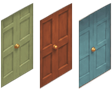
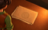
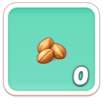

한눈에면적 = 파일 크기(원본) · 칸을 누르면 그 카테고리로
파일 크기 = 프로젝트 폴더에 있는 원본 그대로의 크기. 트리맵 면적, 막대 길이, 목록 정렬 기준이다.
항목 값은 그 항목 하나만 load 할 때 끌려오는 파일 전부(공용 포함)의 합이라, 항목끼리 겹치는 파일은 항목마다 들어 있다.
공용 텍스처 = 두 항목 이상이 같이 끌고 오는 아틀라스·텍스처. 한 번 올라가면 다음 항목엔 추가 비용이 0 이라 어느 카테고리에도 넣지 않고 「공용 텍스처」 칸에 따로 모았다.
값 칸의 작은 「메모리」는 같은 항목을 화면에 올렸을 때의 텍스처 메모리다. 파일이 작아도 메모리가 큰 항목(압축이 잘 되는 큰 그림)이 있으니 같이 본다.
막대 길이 기준은 카테고리 안 최대값이고, 행을 누르면 파일이 큰 텍스처가 펼쳐진다.
칸을 다 더하면 파일 71.9MB, 전체는 파일 62.3MB · 메모리 436.1MB다.
카테고리가 한꺼번에 올라가는 것은 아니라서 각 섹션의 「언제」와 같이 봐야 한다.
영역별1-1~1-5 · 큰 숫자 = 파일 크기(원본) · 메모리는 작은 글씨 · 행을 누르면 태스크
1-1~1-5 합계 파일 12.1MB공통 배경 포함 13.2MB메모리로는 104.3MB (배경 포함)태스크 82개
 영역 1-1태스크 7 · 수선 2 · 택1 5 · 고유 1.6MB파일1.9MB메모리17.2MB누적 파일 1.9MB
영역 1-1태스크 7 · 수선 2 · 택1 5 · 고유 1.6MB파일1.9MB메모리17.2MB누적 파일 1.9MB
70001 · Start with the Yard1일차 · 수선 · bundles/area_courtyard/70001.prefab파일0.8MB메모리6.3MB 70007 · Set the Boundary1일차 · 택1 · bundles/area_courtyard/70007.prefab파일0.4MB메모리7.0MB
70007 · Set the Boundary1일차 · 택1 · bundles/area_courtyard/70007.prefab파일0.4MB메모리7.0MB 70189 · Garden Gate and Hedge Bed1일차 · 택1 · bundles/area_courtyard/70189.prefab파일0.2MB메모리1.0MB
70189 · Garden Gate and Hedge Bed1일차 · 택1 · bundles/area_courtyard/70189.prefab파일0.2MB메모리1.0MB 70190 · Flowers Under the Window1일차 · 택1 · bundles/area_courtyard/70190.prefab파일0.2MB메모리0.9MB
70190 · Flowers Under the Window1일차 · 택1 · bundles/area_courtyard/70190.prefab파일0.2MB메모리0.9MB 70005 · Sign of Life1일차 · 택1 · bundles/area_courtyard/70005.prefab파일0.1MB메모리0.3MB
70005 · Sign of Life1일차 · 택1 · bundles/area_courtyard/70005.prefab파일0.1MB메모리0.3MB 70003 · Take a Seat1일차 · 택1 · bundles/area_courtyard/70003.prefab파일0.1MB메모리0.5MB
70003 · Take a Seat1일차 · 택1 · bundles/area_courtyard/70003.prefab파일0.1MB메모리0.5MB 70002 · Dark Workshop Wall1일차 · 수선 · bundles/area_courtyard/70002.prefab파일0.1MB메모리1.2MB
70002 · Dark Workshop Wall1일차 · 수선 · bundles/area_courtyard/70002.prefab파일0.1MB메모리1.2MB 영역 1-2태스크 15 · 수선 4 · 택1 11 · 고유 1.9MB파일2.3MB메모리15.4MB누적 파일 3.8MB
영역 1-2태스크 15 · 수선 4 · 택1 11 · 고유 1.9MB파일2.3MB메모리15.4MB누적 파일 3.8MB
70014 · Workshop Wallpaper2일차 · 택1 · bundles/area_courtyard/70014.prefab파일0.5MB메모리7.0MB 70009 · Off the Wall2일차 · 수선 · bundles/area_courtyard/70009.prefab파일0.5MB메모리3.6MB
70009 · Off the Wall2일차 · 수선 · bundles/area_courtyard/70009.prefab파일0.5MB메모리3.6MB 70013 · Set Up the Pegboard Display2일차 · 택1 · bundles/area_courtyard/70013.prefab파일0.2MB메모리0.4MB
70013 · Set Up the Pegboard Display2일차 · 택1 · bundles/area_courtyard/70013.prefab파일0.2MB메모리0.4MB 70015 · Center Workbench2일차 · 수선 · bundles/area_courtyard/70015.prefab파일0.2MB메모리0.6MB
70015 · Center Workbench2일차 · 수선 · bundles/area_courtyard/70015.prefab파일0.2MB메모리0.6MB 70022 · Choose the Carpet3일차 · 택1 · bundles/area_courtyard/70022.prefab파일0.2MB메모리0.6MB
70022 · Choose the Carpet3일차 · 택1 · bundles/area_courtyard/70022.prefab파일0.2MB메모리0.6MB 70018 · Clear the Old Chair3일차 · 택1 · bundles/area_courtyard/70018.prefab파일0.1MB메모리0.4MB
70018 · Clear the Old Chair3일차 · 택1 · bundles/area_courtyard/70018.prefab파일0.1MB메모리0.4MB 70008 · Creaky Floors2일차 · 수선 · bundles/area_courtyard/70008.prefab파일0.1MB메모리1.3MB
70008 · Creaky Floors2일차 · 수선 · bundles/area_courtyard/70008.prefab파일0.1MB메모리1.3MB 70019 · Repair the Window Frame3일차 · 택1 · bundles/area_courtyard/70019.prefab파일0.1MB메모리0.5MB
70019 · Repair the Window Frame3일차 · 택1 · bundles/area_courtyard/70019.prefab파일0.1MB메모리0.5MB 70017 · Clear the Materials3일차 · 택1 · bundles/area_courtyard/70017.prefab파일0.1MB메모리0.3MB
70017 · Clear the Materials3일차 · 택1 · bundles/area_courtyard/70017.prefab파일0.1MB메모리0.3MB 70011 · Paper Trail2일차 · 택1 · bundles/area_courtyard/70011.prefab파일0.1MB메모리0.4MB
70011 · Paper Trail2일차 · 택1 · bundles/area_courtyard/70011.prefab파일0.1MB메모리0.4MB 70020 · Low Cabinet Under the Window3일차 · 택1 · bundles/area_courtyard/70020.prefab파일0.09MB메모리0.1MB
70020 · Low Cabinet Under the Window3일차 · 택1 · bundles/area_courtyard/70020.prefab파일0.09MB메모리0.1MB 70021 · Choose the Wall Shelf3일차 · 택1 · bundles/area_courtyard/70021.prefab파일0.09MB메모리0.05MB
70021 · Choose the Wall Shelf3일차 · 택1 · bundles/area_courtyard/70021.prefab파일0.09MB메모리0.05MB 70012 · Clear the Hanging Wall2일차 · 수선 · bundles/area_courtyard/70012.prefab파일0.06MB메모리0.1MB
70012 · Clear the Hanging Wall2일차 · 수선 · bundles/area_courtyard/70012.prefab파일0.06MB메모리0.1MB 70016 · Hanging Around3일차 · 택1 · bundles/area_courtyard/70016.prefab파일0.06MB메모리0.1MB
70016 · Hanging Around3일차 · 택1 · bundles/area_courtyard/70016.prefab파일0.06MB메모리0.1MB 영역 1-3태스크 20 · 수선 7 · 택1 13 · 고유 2.0MB파일2.3MB메모리15.6MB누적 파일 5.8MB
영역 1-3태스크 20 · 수선 7 · 택1 13 · 고유 2.0MB파일2.3MB메모리15.6MB누적 파일 5.8MB
70025 · Back Room Door Color4일차 · 수선 · bundles/area_courtyard/70025.prefab파일0.5MB메모리3.8MB 70030 · Clean the Chest4일차 · 수선 · bundles/area_courtyard/70030.prefab파일0.5MB메모리7.0MB
70030 · Clean the Chest4일차 · 수선 · bundles/area_courtyard/70030.prefab파일0.5MB메모리7.0MB 70026 · Clear the Back Room Wall4일차 · 수선 · bundles/area_courtyard/70026.prefab파일0.4MB메모리3.4MB
70026 · Clear the Back Room Wall4일차 · 수선 · bundles/area_courtyard/70026.prefab파일0.4MB메모리3.4MB 70040 · Home for Blueprints5일차 · 택1 · bundles/area_courtyard/70040.prefab파일0.2MB메모리1.5MB
70040 · Home for Blueprints5일차 · 택1 · bundles/area_courtyard/70040.prefab파일0.2MB메모리1.5MB 70024 · Remove the Boards4일차 · 수선 · bundles/area_courtyard/70024.prefab파일0.1MB메모리0.7MB
70024 · Remove the Boards4일차 · 수선 · bundles/area_courtyard/70024.prefab파일0.1MB메모리0.7MB 70193 · Lines She Drew4일차 · 택1 · bundles/area_courtyard/70193.prefab파일0.1MB메모리0.2MB
70193 · Lines She Drew4일차 · 택1 · bundles/area_courtyard/70193.prefab파일0.1MB메모리0.2MB
70029 · Called a Handyman4일차 · 택1 · bundles/area_courtyard/70029.prefab파일0.10MB메모리0.1MB 70041 · That Year's Papers6일차 · 택1 · bundles/area_courtyard/70041.prefab파일0.10MB메모리0.2MB
70041 · That Year's Papers6일차 · 택1 · bundles/area_courtyard/70041.prefab파일0.10MB메모리0.2MB 70033 · Light the Exterior Window5일차 · 택1 · bundles/area_courtyard/70033.prefab파일0.09MB메모리0.08MB
70033 · Light the Exterior Window5일차 · 택1 · bundles/area_courtyard/70033.prefab파일0.09MB메모리0.08MB 70044 · Someone Slept Here6일차 · 택1 · bundles/area_courtyard/70044.prefab파일0.08MB메모리0.04MB
70044 · Someone Slept Here6일차 · 택1 · bundles/area_courtyard/70044.prefab파일0.08MB메모리0.04MB 70031 · Choose the Chest4일차 · 택1 · bundles/area_courtyard/70031.prefab파일0.07MB메모리0.1MB
70031 · Choose the Chest4일차 · 택1 · bundles/area_courtyard/70031.prefab파일0.07MB메모리0.1MB 70027 · Clear the Back Room Floor4일차 · 수선 · bundles/area_courtyard/70027.prefab파일0.05MB메모리0.06MB
70027 · Clear the Back Room Floor4일차 · 수선 · bundles/area_courtyard/70027.prefab파일0.05MB메모리0.06MB 70036 · Place the Sofa5일차 · 택1 · bundles/area_courtyard/70036.prefab파일0.01MB메모리0.2MB
70036 · Place the Sofa5일차 · 택1 · bundles/area_courtyard/70036.prefab파일0.01MB메모리0.2MB 영역 1-4태스크 17 · 수선 6 · 택1 11 · 고유 2.3MB파일2.6MB메모리13.4MB누적 파일 8.0MB
영역 1-4태스크 17 · 수선 6 · 택1 11 · 고유 2.3MB파일2.6MB메모리13.4MB누적 파일 8.0MB
70050 · Long Sat In7일차 · 수선 · bundles/area_courtyard/70050.prefab파일0.6MB메모리6.7MB 70052 · From Page One7일차 · 수선 · bundles/area_courtyard/70052.prefab파일0.4MB메모리2.7MB
70052 · From Page One7일차 · 수선 · bundles/area_courtyard/70052.prefab파일0.4MB메모리2.7MB 70073 · Why Not9일차 · 수선 · bundles/area_courtyard/70073.prefab파일0.4MB메모리2.8MB
70073 · Why Not9일차 · 수선 · bundles/area_courtyard/70073.prefab파일0.4MB메모리2.8MB 70063 · Push or Pull8일차 · 택1 · bundles/area_courtyard/70063.prefab파일0.3MB메모리0.7MB
70063 · Push or Pull8일차 · 택1 · bundles/area_courtyard/70063.prefab파일0.3MB메모리0.7MB 70082 · Closed Doors10일차 · 택1 · bundles/area_courtyard/70082.prefab파일0.2MB메모리1.0MB
70082 · Closed Doors10일차 · 택1 · bundles/area_courtyard/70082.prefab파일0.2MB메모리1.0MB 70060 · Made in the Shade8일차 · 택1 · bundles/area_courtyard/70060.prefab파일0.2MB메모리0.4MB
70060 · Made in the Shade8일차 · 택1 · bundles/area_courtyard/70060.prefab파일0.2MB메모리0.4MB 70068 · Leaf It to Me9일차 · 택1 · bundles/area_courtyard/70068.prefab파일0.1MB메모리0.6MB
70068 · Leaf It to Me9일차 · 택1 · bundles/area_courtyard/70068.prefab파일0.1MB메모리0.6MB 70072 · Rain Check9일차 · 택1 · bundles/area_courtyard/70072.prefab파일0.1MB메모리0.6MB
70072 · Rain Check9일차 · 택1 · bundles/area_courtyard/70072.prefab파일0.1MB메모리0.6MB 70065 · Board by Board8일차 · 택1 · bundles/area_courtyard/70065.prefab파일0.09MB메모리0.1MB
70065 · Board by Board8일차 · 택1 · bundles/area_courtyard/70065.prefab파일0.09MB메모리0.1MB 70080 · Half a Notice10일차 · 택1 · bundles/area_courtyard/70080.prefab파일0.06MB메모리0.3MB
70080 · Half a Notice10일차 · 택1 · bundles/area_courtyard/70080.prefab파일0.06MB메모리0.3MB 70058 · Paving the Way8일차 · 수선 · bundles/area_courtyard/70058.prefab파일10KB메모리0.2MB
70058 · Paving the Way8일차 · 수선 · bundles/area_courtyard/70058.prefab파일10KB메모리0.2MB 영역 1-5태스크 23 · 수선 5 · 택1 18 · 고유 4.3MB파일4.6MB메모리27.8MB누적 파일 12.1MB
영역 1-5태스크 23 · 수선 5 · 택1 18 · 고유 4.3MB파일4.6MB메모리27.8MB누적 파일 12.1MB
70122 · New Canvas14일차 · 택1 · bundles/area_courtyard/70122.prefab파일0.7MB메모리4.1MB 70091 · Stand It Up11일차 · 수선 · bundles/area_courtyard/70091.prefab파일0.6MB메모리4.0MB
70091 · Stand It Up11일차 · 수선 · bundles/area_courtyard/70091.prefab파일0.6MB메모리4.0MB 70109 · Raise the Pole13일차 · 택1 · bundles/area_courtyard/70109.prefab파일0.3MB메모리0.9MB
70109 · Raise the Pole13일차 · 택1 · bundles/area_courtyard/70109.prefab파일0.3MB메모리0.9MB 70113 · Walk Through13일차 · 택1 · bundles/area_courtyard/70113.prefab파일0.2MB메모리0.2MB
70113 · Walk Through13일차 · 택1 · bundles/area_courtyard/70113.prefab파일0.2MB메모리0.2MB 70112 · Flooded Again13일차 · 택1 · bundles/area_courtyard/70112.prefab파일0.2MB메모리0.2MB
70112 · Flooded Again13일차 · 택1 · bundles/area_courtyard/70112.prefab파일0.2MB메모리0.2MB 70099 · Common Ground12일차 · 택1 · bundles/area_courtyard/70099.prefab파일0.2MB메모리0.7MB
70099 · Common Ground12일차 · 택1 · bundles/area_courtyard/70099.prefab파일0.2MB메모리0.7MB 70102 · I Have a Claim12일차 · 택1 · bundles/area_courtyard/70102.prefab파일0.2MB메모리0.7MB
70102 · I Have a Claim12일차 · 택1 · bundles/area_courtyard/70102.prefab파일0.2MB메모리0.7MB 70118 · Name Fell Off13일차 · 택1 · bundles/area_courtyard/70118.prefab파일0.2MB메모리0.4MB
70118 · Name Fell Off13일차 · 택1 · bundles/area_courtyard/70118.prefab파일0.2MB메모리0.4MB 70127 · Steps Were Here14일차 · 택1 · bundles/area_courtyard/70127.prefab파일0.1MB메모리3.8MB
70127 · Steps Were Here14일차 · 택1 · bundles/area_courtyard/70127.prefab파일0.1MB메모리3.8MB 70121 · Overhead14일차 · 택1 · bundles/area_courtyard/70121.prefab파일0.1MB메모리2.9MB
70121 · Overhead14일차 · 택1 · bundles/area_courtyard/70121.prefab파일0.1MB메모리2.9MB 70128 · Shade Tree14일차 · 택1 · bundles/area_courtyard/70128.prefab파일0.1MB메모리0.1MB
70128 · Shade Tree14일차 · 택1 · bundles/area_courtyard/70128.prefab파일0.1MB메모리0.1MB 70125 · What Time Was It14일차 · 수선 · bundles/area_courtyard/70125.prefab파일0.09MB메모리1.4MB
70125 · What Time Was It14일차 · 수선 · bundles/area_courtyard/70125.prefab파일0.09MB메모리1.4MB 공통 배경area.prefab 의 Background · 모든 영역이 같이 씀파일1.1MB메모리24.9MB어느 영역이든 진입 때
공통 배경area.prefab 의 Background · 모든 영역이 같이 씀파일1.1MB메모리24.9MB어느 영역이든 진입 때
area_background_1.jpg2216×2944 · Effect/area/bg/area_background_1.jpg파일1.1MB메모리24.9MB
이 섹션은 다른 섹션과 달리 파일 크기가 큰 숫자이고 막대 길이다. 메모리는 값 칸 아래 작은 글씨다.
파일 크기 = 프로젝트 폴더에 있는 원본 그대로의 크기다. 빌드 산출물이 아니라서, 빌드에서 텍스처 압축·번들 묶음을 거친 실제 다운로드 크기와는 다르다.
영역 하나 = bundles/area_courtyard 의 그 영역 태스크 프리팹 전부 + area.prefab 의 그 소구역 노드(덮개·수선 전 그림).
소속은 area.prefab 노드 기준이고 시트 main_task.area_id 와 전부 맞는다.
수선택1에리어 레이어
같은 파일을 여러 태스크가 쓰면 영역 안에서 한 번만 센다 — 그래서 펼친 태스크 값의 합보다 영역 값이 작을 수 있다.
고유 = 그 영역 말고는 아무 항목도 안 쓰는 파일. 누적 = 첫 영역부터 그 영역까지 합집합.
채팅·마을 캐릭터·손님은 영역 소속이 프리팹에 없어 여기 넣지 않았다(각 카테고리에서 본다).
데코레이션수선·택1 프리팹 · 파일 큰 순 · 상위 30개
파일 12.4MB|메모리(전부 올리면) 76.5MB|항목 87개 · 언제: 마을 진입 때 안 깬 수선 전부(신규 생성 제외) · 택1은 깰 때
A12(SM-A125N) 기준 추정빌드 기준 받는 크기 4.3MB (정확 85%), 받기 72초 (63KB/s) / 21초 (220KB/s), 올리기 0.6-3.2초 (전부 올리면 메모리 기준)
꾸미기 오브젝트. 수선 전·후 그림과 애니가 프리팹 하나에 들어 있다.
70001영역 1-1 · 1일차 1번 · 수선 · Start with the Yard · 텍스처 31파일0.8MB메모리6.3MBA12 추정받기 7.7초 / 2.2초올리기 50-264ms, 빌드 0.5MB
bundles/area_courtyard/70001.prefab R_1_1_flower_03.png826×479 · Effect/area/area_1/area_1_1/texture/R_1_1_flower_03.png파일0.07MB메모리1.5MB
R_1_1_flower_03.png826×479 · Effect/area/area_1/area_1_1/texture/R_1_1_flower_03.png파일0.07MB메모리1.5MB R_1_1_flower_01.png303×476 · Effect/area/area_1/area_1_1/texture/R_1_1_flower_01.png파일0.04MB메모리0.6MB
R_1_1_flower_01.png303×476 · Effect/area/area_1/area_1_1/texture/R_1_1_flower_01.png파일0.04MB메모리0.6MB R_1_1_dust_01.png423×348 · Effect/area/area_1/area_1_1/texture/R_1_1_dust_01.png파일0.02MB메모리0.6MB
R_1_1_dust_01.png423×348 · Effect/area/area_1/area_1_1/texture/R_1_1_dust_01.png파일0.02MB메모리0.6MB cover_window.png256×256 · Effect/area/area_1/area_1_1/texture/cover_window.png파일0.02MB메모리0.2MB
cover_window.png256×256 · Effect/area/area_1/area_1_1/texture/cover_window.png파일0.02MB메모리0.2MB R_1_1_wall.png389×345 · Effect/area/area_1/area_1_1/texture/R_1_1_wall.png파일0.02MB메모리0.5MB
R_1_1_wall.png389×345 · Effect/area/area_1/area_1_1/texture/R_1_1_wall.png파일0.02MB메모리0.5MB70122영역 1-5 · 14일차 4번 · 택1 · New Canvas · 텍스처 22파일0.7MB메모리4.1MBA12 추정받기 6.1초 / 1.7초올리기 33-173ms, 빌드 0.4MB
bundles/area_courtyard/70122.prefab C_fountain_01_mask.png346×307 · Effect/area/area_1/area_1_5/texture/C_fountain_01_mask.png파일0.05MB메모리0.4MB
C_fountain_01_mask.png346×307 · Effect/area/area_1/area_1_5/texture/C_fountain_01_mask.png파일0.05MB메모리0.4MB C_fountain_02_mask.png346×302 · Effect/area/area_1/area_1_5/texture/C_fountain_02_mask.png파일0.04MB메모리0.4MB
C_fountain_02_mask.png346×302 · Effect/area/area_1/area_1_5/texture/C_fountain_02_mask.png파일0.04MB메모리0.4MB C_fountain_02.png346×302 · Effect/area/area_1/area_1_5/texture/C_fountain_02.png파일0.04MB메모리0.4MB
C_fountain_02.png346×302 · Effect/area/area_1/area_1_5/texture/C_fountain_02.png파일0.04MB메모리0.4MB C_fountain_01.png346×307 · Effect/area/area_1/area_1_5/texture/C_fountain_01.png파일0.04MB메모리0.4MB
C_fountain_01.png346×307 · Effect/area/area_1/area_1_5/texture/C_fountain_01.png파일0.04MB메모리0.4MB C_fountain_03.png346×302 · Effect/area/area_1/area_1_5/texture/C_fountain_03.png파일0.03MB메모리0.4MB
C_fountain_03.png346×302 · Effect/area/area_1/area_1_5/texture/C_fountain_03.png파일0.03MB메모리0.4MB70094영역 1-5 · 11일차 6번 · 수선 · Cracks and Weeds · 텍스처 30파일0.7MB메모리4.3MBA12 추정받기 6.6초 / 1.9초올리기 35-181ms, 빌드 0.4MB
bundles/area_courtyard/70094.prefab R_fountain.png356×311 · Effect/area/area_1/area_1_5/texture/R_fountain.png파일0.06MB메모리0.4MB
R_fountain.png356×311 · Effect/area/area_1/area_1_5/texture/R_fountain.png파일0.06MB메모리0.4MB A_fountain_water_01_mask.png194×141 · Effect/area/area_1/area_1_5/texture/A_fountain_water_01_mask.png파일0.04MB메모리0.1MB
A_fountain_water_01_mask.png194×141 · Effect/area/area_1/area_1_5/texture/A_fountain_water_01_mask.png파일0.04MB메모리0.1MB A_fountain.png308×210 · Effect/area/area_1/area_1_5/texture/A_fountain.png파일0.02MB메모리0.2MB
A_fountain.png308×210 · Effect/area/area_1/area_1_5/texture/A_fountain.png파일0.02MB메모리0.2MB R_dust_04.png328×279 · Effect/area/area_1/area_1_5/texture/R_dust_04.png파일0.02MB메모리0.3MB
R_dust_04.png328×279 · Effect/area/area_1/area_1_5/texture/R_dust_04.png파일0.02MB메모리0.3MB R_dust_03.png328×279 · Effect/area/area_1/area_1_5/texture/R_dust_03.png파일0.01MB메모리0.3MB
R_dust_03.png328×279 · Effect/area/area_1/area_1_5/texture/R_dust_03.png파일0.01MB메모리0.3MB A_fountain_water_01.png194×141 · Effect/area/area_1/area_1_5/texture/A_fountain_water_01.png파일0.01MB메모리0.1MB
A_fountain_water_01.png194×141 · Effect/area/area_1/area_1_5/texture/A_fountain_water_01.png파일0.01MB메모리0.1MBdecorate_01bundle/decorate · 텍스처 17파일0.7MB메모리2.1MBA12 추정받기 4.2초 / 1.2초올리기 17-88ms, 빌드 0.3MB
bundle/decorate/area_1_1/decorate_01.prefab70091영역 1-5 · 11일차 3번 · 수선 · Stand It Up · 텍스처 20파일0.6MB메모리4.0MBA12 추정받기 6.0초 / 1.7초올리기 32-168ms, 빌드 0.4MB
bundles/area_courtyard/70091.prefab R_dumbul_house.png909×534 · Effect/area/area_1/area_1_5/texture/R_dumbul_house.png파일0.1MB메모리1.9MB
R_dumbul_house.png909×534 · Effect/area/area_1/area_1_5/texture/R_dumbul_house.png파일0.1MB메모리1.9MB R_roop.png162×79 · Effect/area/area_1/area_1_5/texture/R_roop.png파일7KB메모리0.05MB
R_roop.png162×79 · Effect/area/area_1/area_1_5/texture/R_roop.png파일7KB메모리0.05MB A_light_01.png37×58 · Effect/area/area_1/area_1_4/texture/A_light_01.png파일2KB메모리8KB
A_light_01.png37×58 · Effect/area/area_1/area_1_4/texture/A_light_01.png파일2KB메모리8KB70050영역 1-4 · 7일차 2번 · 수선 · Long Sat In · 텍스처 19파일0.6MB메모리6.7MBA12 추정받기 6.7초 / 1.9초올리기 53-281ms, 빌드 0.4MB
bundles/area_courtyard/70050.prefab R_dumbul_02.png921×703 · Effect/area/area_1/area_1_4/texture/R_dumbul_02.png파일0.1MB메모리2.5MB
R_dumbul_02.png921×703 · Effect/area/area_1/area_1_4/texture/R_dumbul_02.png파일0.1MB메모리2.5MB R_dumbul_01.png909×610 · Effect/area/area_1/area_1_4/texture/R_dumbul_01.png파일0.05MB메모리2.1MB
R_dumbul_01.png909×610 · Effect/area/area_1/area_1_4/texture/R_dumbul_01.png파일0.05MB메모리2.1MB70089영역 1-5 · 11일차 1번 · 수선 · No Customers · 텍스처 22파일0.5MB메모리4.0MBA12 추정받기 5.8초 / 1.7초올리기 32-166ms, 빌드 0.3MB
bundles/area_courtyard/70089.prefab R_bench_01.png245×186 · Effect/area/area_1/area_1_5/texture/R_bench_01.png파일0.03MB메모리0.2MB
R_bench_01.png245×186 · Effect/area/area_1/area_1_5/texture/R_bench_01.png파일0.03MB메모리0.2MB R_tool_02.png301×175 · Effect/area/area_1/area_1_5/texture/R_tool_02.png파일0.03MB메모리0.2MB
R_tool_02.png301×175 · Effect/area/area_1/area_1_5/texture/R_tool_02.png파일0.03MB메모리0.2MB R_bench_02.png425×356 · Effect/area/area_1/area_1_5/texture/R_bench_02.png파일0.03MB메모리0.6MB
R_bench_02.png425×356 · Effect/area/area_1/area_1_5/texture/R_bench_02.png파일0.03MB메모리0.6MB R_pole.png452×244 · Effect/area/area_1/area_1_5/texture/R_pole.png파일0.03MB메모리0.4MB
R_pole.png452×244 · Effect/area/area_1/area_1_5/texture/R_pole.png파일0.03MB메모리0.4MB R_tool_01.png449×282 · Effect/area/area_1/area_1_5/texture/R_tool_01.png파일0.02MB메모리0.5MB
R_tool_01.png449×282 · Effect/area/area_1/area_1_5/texture/R_tool_01.png파일0.02MB메모리0.5MB70014영역 1-2 · 2일차 7번 · 택1 · Workshop Wallpaper · 텍스처 22파일0.5MB메모리7.0MBA12 추정받기 6.5초 / 1.8초올리기 56-294ms, 빌드 0.4MB
bundles/area_courtyard/70014.prefab C_wall_03.png858×360 · Effect/area/area_1/area_1_2/texture/C_wall_03.png파일0.04MB메모리1.2MB
C_wall_03.png858×360 · Effect/area/area_1/area_1_2/texture/C_wall_03.png파일0.04MB메모리1.2MB C_wall_02.png858×360 · Effect/area/area_1/area_1_2/texture/C_wall_02.png파일0.04MB메모리1.2MB
C_wall_02.png858×360 · Effect/area/area_1/area_1_2/texture/C_wall_02.png파일0.04MB메모리1.2MB R_wall.png872×381 · Effect/area/area_1/area_1_2/texture/R_wall.png파일0.04MB메모리1.3MB
R_wall.png872×381 · Effect/area/area_1/area_1_2/texture/R_wall.png파일0.04MB메모리1.3MB C_wall_01.png858×360 · Effect/area/area_1/area_1_2/texture/C_wall_01.png파일0.04MB메모리1.2MB
C_wall_01.png858×360 · Effect/area/area_1/area_1_2/texture/C_wall_01.png파일0.04MB메모리1.2MB cover_window.png148×183 · Effect/area/area_1/area_1_2/texture/cover_window.png파일0.02MB메모리0.1MB
cover_window.png148×183 · Effect/area/area_1/area_1_2/texture/cover_window.png파일0.02MB메모리0.1MB70025영역 1-3 · 4일차 2번 · 수선 · Back Room Door Color · 텍스처 19파일0.5MB메모리3.8MBA12 추정받기 5.0초 / 1.4초올리기 30-159ms, 빌드 0.3MB
bundles/area_courtyard/70025.prefab R_ground.png621×360 · Effect/area/area_1/area_1_3/texture/R_ground.png파일0.1MB메모리0.9MB
R_ground.png621×360 · Effect/area/area_1/area_1_3/texture/R_ground.png파일0.1MB메모리0.9MB 1.png614×359 · Effect/area/area_1/area_1_3/texture/1.png파일0.03MB메모리0.8MB
1.png614×359 · Effect/area/area_1/area_1_3/texture/1.png파일0.03MB메모리0.8MB70030영역 1-3 · 4일차 7번 · 수선 · Clean the Chest · 텍스처 22파일0.5MB메모리7.0MBA12 추정받기 6.1초 / 1.7초올리기 56-295ms, 빌드 0.4MB
bundles/area_courtyard/70030.prefab C_wall_02.png841×376 · Effect/area/area_1/area_1_3/texture/C_wall_02.png파일0.05MB메모리1.2MB
C_wall_02.png841×376 · Effect/area/area_1/area_1_3/texture/C_wall_02.png파일0.05MB메모리1.2MB C_wall_01.png841×376 · Effect/area/area_1/area_1_3/texture/C_wall_01.png파일0.03MB메모리1.2MB
C_wall_01.png841×376 · Effect/area/area_1/area_1_3/texture/C_wall_01.png파일0.03MB메모리1.2MB R_wall.png845×380 · Effect/area/area_1/area_1_3/texture/R_wall.png파일0.03MB메모리1.2MB
R_wall.png845×380 · Effect/area/area_1/area_1_3/texture/R_wall.png파일0.03MB메모리1.2MB C_wall_03.png841×376 · Effect/area/area_1/area_1_3/texture/C_wall_03.png파일0.02MB메모리1.2MB
C_wall_03.png841×376 · Effect/area/area_1/area_1_3/texture/C_wall_03.png파일0.02MB메모리1.2MB A_window.png107×164 · Effect/area/area_1/area_1_3/texture/A_window.png파일8KB메모리0.07MB
A_window.png107×164 · Effect/area/area_1/area_1_3/texture/A_window.png파일8KB메모리0.07MB70090영역 1-5 · 11일차 2번 · 수선 · Streetlight · 텍스처 22파일0.5MB메모리4.9MBA12 추정받기 5.0초 / 1.4초올리기 39-207ms, 빌드 0.3MB
bundles/area_courtyard/70090.prefab cover_fence.png743×491 · Effect/area/area_1/area_1_5/texture/cover_fence.png파일0.02MB메모리1.4MB
cover_fence.png743×491 · Effect/area/area_1/area_1_5/texture/cover_fence.png파일0.02MB메모리1.4MB R_dumbul_03.png344×425 · Effect/area/area_1/area_1_5/texture/R_dumbul_03.png파일0.02MB메모리0.6MB
R_dumbul_03.png344×425 · Effect/area/area_1/area_1_5/texture/R_dumbul_03.png파일0.02MB메모리0.6MB R_dumbul_01.png353×232 · Effect/area/area_1/area_1_5/texture/R_dumbul_01.png파일0.01MB메모리0.3MB
R_dumbul_01.png353×232 · Effect/area/area_1/area_1_5/texture/R_dumbul_01.png파일0.01MB메모리0.3MB R_dumbul_02.png335×247 · Effect/area/area_1/area_1_5/texture/R_dumbul_02.png파일9KB메모리0.3MB
R_dumbul_02.png335×247 · Effect/area/area_1/area_1_5/texture/R_dumbul_02.png파일9KB메모리0.3MB R_dumbul_04.png260×247 · Effect/area/area_1/area_1_5/texture/R_dumbul_04.png파일6KB메모리0.2MB
R_dumbul_04.png260×247 · Effect/area/area_1/area_1_5/texture/R_dumbul_04.png파일6KB메모리0.2MB70009영역 1-2 · 2일차 2번 · 수선 · Off the Wall · 텍스처 21파일0.5MB메모리3.6MBA12 추정받기 5.0초 / 1.4초올리기 29-152ms, 빌드 0.3MB
bundles/area_courtyard/70009.prefabR_wall.png872×381 · Effect/area/area_1/area_1_2/texture/R_wall.png파일0.04MB메모리1.3MB R_window.png148×183 · Effect/area/area_1/area_1_2/texture/R_window.png파일0.02MB메모리0.1MB
R_window.png148×183 · Effect/area/area_1/area_1_2/texture/R_window.png파일0.02MB메모리0.1MB R_tree.png159×183 · Effect/area/area_1/area_1_2/texture/R_tree.png파일0.01MB메모리0.1MB
R_tree.png159×183 · Effect/area/area_1/area_1_2/texture/R_tree.png파일0.01MB메모리0.1MB A_tool.png108×106 · Effect/area/area_1/area_1_2/texture/A_tool.png파일10KB메모리0.04MB
A_tool.png108×106 · Effect/area/area_1/area_1_2/texture/A_tool.png파일10KB메모리0.04MB70052영역 1-4 · 7일차 4번 · 수선 · From Page One · 텍스처 20파일0.4MB메모리2.7MBA12 추정받기 4.3초 / 1.2초올리기 21-112ms, 빌드 0.3MB
bundles/area_courtyard/70052.prefab R_shade.png347×401 · Effect/area/area_1/area_1_4/texture/R_shade.png파일0.01MB메모리0.5MB
R_shade.png347×401 · Effect/area/area_1/area_1_4/texture/R_shade.png파일0.01MB메모리0.5MB R_door.png73×91 · Effect/area/area_1/area_1_4/texture/R_door.png파일3KB메모리0.03MBA_light_01.png37×58 · Effect/area/area_1/area_1_4/texture/A_light_01.png파일2KB메모리8KB
R_door.png73×91 · Effect/area/area_1/area_1_4/texture/R_door.png파일3KB메모리0.03MBA_light_01.png37×58 · Effect/area/area_1/area_1_4/texture/A_light_01.png파일2KB메모리8KB70026영역 1-3 · 4일차 3번 · 수선 · Clear the Back Room Wall · 텍스처 19파일0.4MB메모리3.4MBA12 추정받기 4.5초 / 1.3초올리기 27-143ms, 빌드 0.3MB
bundles/area_courtyard/70026.prefabR_wall.png845×380 · Effect/area/area_1/area_1_3/texture/R_wall.png파일0.03MB메모리1.2MB R_window.png107×162 · Effect/area/area_1/area_1_3/texture/R_window.png파일9KB메모리0.07MB
R_window.png107×162 · Effect/area/area_1/area_1_3/texture/R_window.png파일9KB메모리0.07MB70073영역 1-4 · 9일차 6번 · 수선 · Why Not · 텍스처 18파일0.4MB메모리2.8MBA12 추정받기 4.0초 / 1.2초올리기 22-117ms, 빌드 0.2MB
bundles/area_courtyard/70073.prefab R_roof.png538×328 · Effect/area/area_1/area_1_4/texture/R_roof.png파일5KB메모리0.7MB
R_roof.png538×328 · Effect/area/area_1/area_1_4/texture/R_roof.png파일5KB메모리0.7MBdecorate_02bundle/decorate · 텍스처 17파일0.4MB메모리2.1MBA12 추정받기 4.0초 / 1.1초올리기 17-88ms, 빌드 0.2MB
bundle/decorate/area_1_1/decorate_02.prefab70062영역 1-4 · 8일차 6번 · 택1 · My Corner · 텍스처 3파일0.4MB메모리0.2MBA12 추정받기 0.4초 / 0.1초올리기 1-7ms, 빌드 0.02MB
bundles/area_courtyard/70062.prefab C_lamp_01.png121×116 · Effect/area/area_1/area_1_4/texture/C_lamp_01.png파일3KB메모리0.05MB
C_lamp_01.png121×116 · Effect/area/area_1/area_1_4/texture/C_lamp_01.png파일3KB메모리0.05MB C_lamp_03.png121×116 · Effect/area/area_1/area_1_4/texture/C_lamp_03.png파일3KB메모리0.05MB
C_lamp_03.png121×116 · Effect/area/area_1/area_1_4/texture/C_lamp_03.png파일3KB메모리0.05MB C_lamp_02.png121×116 · Effect/area/area_1/area_1_4/texture/C_lamp_02.png파일3KB메모리0.05MB
C_lamp_02.png121×116 · Effect/area/area_1/area_1_4/texture/C_lamp_02.png파일3KB메모리0.05MB70007영역 1-1 · 1일차 7번 · 택1 · Set the Boundary · 텍스처 4파일0.4MB메모리7.0MBA12 추정받기 4.2초 / 1.2초올리기 56-293ms, 빌드 0.3MB
bundles/area_courtyard/70007.prefab fence_cover.png1159×500 · Effect/area/area_1/area_1_1/texture/fence_cover.png파일0.2MB메모리2.2MB
fence_cover.png1159×500 · Effect/area/area_1/area_1_1/texture/fence_cover.png파일0.2MB메모리2.2MB C_1_1_fence_03.png817×506 · Effect/area/area_1/area_1_1/texture/C_1_1_fence_03.png파일0.05MB메모리1.6MB
C_1_1_fence_03.png817×506 · Effect/area/area_1/area_1_1/texture/C_1_1_fence_03.png파일0.05MB메모리1.6MB C_1_1_fence_02.png811×522 · Effect/area/area_1/area_1_1/texture/C_1_1_fence_02.png파일0.04MB메모리1.6MB
C_1_1_fence_02.png811×522 · Effect/area/area_1/area_1_1/texture/C_1_1_fence_02.png파일0.04MB메모리1.6MB C_1_1_fence_01.png804×516 · Effect/area/area_1/area_1_1/texture/C_1_1_fence_01.png파일0.03MB메모리1.6MB
C_1_1_fence_01.png804×516 · Effect/area/area_1/area_1_1/texture/C_1_1_fence_01.png파일0.03MB메모리1.6MB70063영역 1-4 · 8일차 7번 · 택1 · Push or Pull · 텍스처 3파일0.3MB메모리0.7MBA12 추정받기 0.7초 / 0.2초올리기 5-28ms, 빌드 0.04MB
bundles/area_courtyard/70063.prefab C_shade_03.png270×213 · Effect/area/area_1/area_1_4/texture/C_shade_03.png파일0.08MB메모리0.2MB
C_shade_03.png270×213 · Effect/area/area_1/area_1_4/texture/C_shade_03.png파일0.08MB메모리0.2MB C_shade_02.png278×222 · Effect/area/area_1/area_1_4/texture/C_shade_02.png파일0.08MB메모리0.2MB
C_shade_02.png278×222 · Effect/area/area_1/area_1_4/texture/C_shade_02.png파일0.08MB메모리0.2MB C_shade_01.png267×204 · Effect/area/area_1/area_1_4/texture/C_shade_01.png파일0.07MB메모리0.2MB
C_shade_01.png267×204 · Effect/area/area_1/area_1_4/texture/C_shade_01.png파일0.07MB메모리0.2MB70105영역 1-5 · 12일차 7번 · 택1 · Lights in the Square · 텍스처 4파일0.3MB메모리0.9MBA12 추정받기 1.9초 / 0.5초올리기 8-39ms, 빌드 0.1MB
bundles/area_courtyard/70105.prefab C_kiosk_03.png293×271 · Effect/area/area_1/area_1_5/texture/C_kiosk_03.png파일0.06MB메모리0.3MB
C_kiosk_03.png293×271 · Effect/area/area_1/area_1_5/texture/C_kiosk_03.png파일0.06MB메모리0.3MB C_kiosk_02.png296×278 · Effect/area/area_1/area_1_5/texture/C_kiosk_02.png파일0.06MB메모리0.3MB
C_kiosk_02.png296×278 · Effect/area/area_1/area_1_5/texture/C_kiosk_02.png파일0.06MB메모리0.3MB C_kiosk_01.png294×273 · Effect/area/area_1/area_1_5/texture/C_kiosk_01.png파일0.06MB메모리0.3MB
C_kiosk_01.png294×273 · Effect/area/area_1/area_1_5/texture/C_kiosk_01.png파일0.06MB메모리0.3MB cover_kiosk.png65×61 · Effect/area/area_1/area_1_5/texture/cover_kiosk.png파일3KB메모리0.02MB
cover_kiosk.png65×61 · Effect/area/area_1/area_1_5/texture/cover_kiosk.png파일3KB메모리0.02MB70117영역 1-5 · 13일차 9번 · 택1 · Catch Your Breath · 텍스처 3파일0.3MB메모리0.2MBA12 추정받기 0.4초 / 0.1초올리기 1-7ms, 빌드 0.02MB
bundles/area_courtyard/70117.prefab C_stand_03.png62×222 · Effect/area/area_1/area_1_4/texture/C_stand_03.png파일5KB메모리0.05MB
C_stand_03.png62×222 · Effect/area/area_1/area_1_4/texture/C_stand_03.png파일5KB메모리0.05MB C_stand_01.png62×219 · Effect/area/area_1/area_1_4/texture/C_stand_01.png파일4KB메모리0.05MB
C_stand_01.png62×219 · Effect/area/area_1/area_1_4/texture/C_stand_01.png파일4KB메모리0.05MB C_stand_02.png62×217 · Effect/area/area_1/area_1_4/texture/C_stand_02.png파일3KB메모리0.05MB
C_stand_02.png62×217 · Effect/area/area_1/area_1_4/texture/C_stand_02.png파일3KB메모리0.05MB70109영역 1-5 · 13일차 1번 · 택1 · Raise the Pole · 텍스처 4파일0.3MB메모리0.9MBA12 추정받기 1.8초 / 0.5초올리기 7-37ms, 빌드 0.1MB
bundles/area_courtyard/70109.prefab C_arch_03.png223×305 · Effect/area/area_1/area_1_5/texture/C_arch_03.png파일0.06MB메모리0.3MB
C_arch_03.png223×305 · Effect/area/area_1/area_1_5/texture/C_arch_03.png파일0.06MB메모리0.3MB C_arch_02.png223×305 · Effect/area/area_1/area_1_5/texture/C_arch_02.png파일0.05MB메모리0.3MB
C_arch_02.png223×305 · Effect/area/area_1/area_1_5/texture/C_arch_02.png파일0.05MB메모리0.3MB C_arch_01.png223×304 · Effect/area/area_1/area_1_5/texture/C_arch_01.png파일0.05MB메모리0.3MB
C_arch_01.png223×304 · Effect/area/area_1/area_1_5/texture/C_arch_01.png파일0.05MB메모리0.3MB cover_gate.png206×128 · Effect/area/area_1/area_1_5/texture/cover_gate.png파일0.01MB메모리0.1MB
cover_gate.png206×128 · Effect/area/area_1/area_1_5/texture/cover_gate.png파일0.01MB메모리0.1MB70108영역 1-5 · 12일차 10번 · 택1 · Gave Chase · 텍스처 5파일0.2MB메모리1.7MBA12 추정받기 0.9초 / 0.3초올리기 14-72ms, 빌드 0.06MB
bundles/area_courtyard/70108.prefab cover_wall_line.png880×342 · Effect/area/area_1/area_1_2/texture/cover_wall_line.png파일0.03MB메모리1.1MB
cover_wall_line.png880×342 · Effect/area/area_1/area_1_2/texture/cover_wall_line.png파일0.03MB메모리1.1MB cover_leap.png238×281 · Effect/area/area_1/area_1_5/texture/cover_leap.png파일0.02MB메모리0.3MB
cover_leap.png238×281 · Effect/area/area_1/area_1_5/texture/cover_leap.png파일0.02MB메모리0.3MB C_pole_03.png113×232 · Effect/area/area_1/area_1_5/texture/C_pole_03.png파일10KB메모리0.1MB
C_pole_03.png113×232 · Effect/area/area_1/area_1_5/texture/C_pole_03.png파일10KB메모리0.1MB C_pole_02.png113×232 · Effect/area/area_1/area_1_5/texture/C_pole_02.png파일10KB메모리0.1MB
C_pole_02.png113×232 · Effect/area/area_1/area_1_5/texture/C_pole_02.png파일10KB메모리0.1MB C_pole_01.png113×234 · Effect/area/area_1/area_1_5/texture/C_pole_01.png파일8KB메모리0.1MB
C_pole_01.png113×234 · Effect/area/area_1/area_1_5/texture/C_pole_01.png파일8KB메모리0.1MB70189영역 1-1 · 1일차 8번 · 택1 · Garden Gate and Hedge Bed · 텍스처 3파일0.2MB메모리1.0MBA12 추정받기 1.8초 / 0.5초올리기 8-43ms, 빌드 0.1MB
bundles/area_courtyard/70189.prefab C_1_1_wall_02.png275×318 · Effect/area/area_1/area_1_1/texture/C_1_1_wall_02.png파일0.06MB메모리0.3MB
C_1_1_wall_02.png275×318 · Effect/area/area_1/area_1_1/texture/C_1_1_wall_02.png파일0.06MB메모리0.3MB C_1_1_wall_03.png273×335 · Effect/area/area_1/area_1_1/texture/C_1_1_wall_03.png파일0.06MB메모리0.3MB
C_1_1_wall_03.png273×335 · Effect/area/area_1/area_1_1/texture/C_1_1_wall_03.png파일0.06MB메모리0.3MB C_1_1_wall_01.png273×330 · Effect/area/area_1/area_1_1/texture/C_1_1_wall_01.png파일0.03MB메모리0.3MB
C_1_1_wall_01.png273×330 · Effect/area/area_1/area_1_1/texture/C_1_1_wall_01.png파일0.03MB메모리0.3MB70113영역 1-5 · 13일차 5번 · 택1 · Walk Through · 텍스처 3파일0.2MB메모리0.2MBA12 추정받기 0.5초 / 0.1초올리기 1-7ms, 빌드 0.03MB
bundles/area_courtyard/70113.prefab C_flower_front_03.png100×129 · Effect/area/area_1/area_1_5/texture/C_flower_front_03.png파일0.01MB메모리0.05MB
C_flower_front_03.png100×129 · Effect/area/area_1/area_1_5/texture/C_flower_front_03.png파일0.01MB메모리0.05MB C_flower_front_01.png101×129 · Effect/area/area_1/area_1_5/texture/C_flower_front_01.png파일0.01MB메모리0.05MB
C_flower_front_01.png101×129 · Effect/area/area_1/area_1_5/texture/C_flower_front_01.png파일0.01MB메모리0.05MB C_flower_front_02.png109×135 · Effect/area/area_1/area_1_5/texture/C_flower_front_02.png파일9KB메모리0.06MB
C_flower_front_02.png109×135 · Effect/area/area_1/area_1_5/texture/C_flower_front_02.png파일9KB메모리0.06MB70112영역 1-5 · 13일차 4번 · 택1 · Flooded Again · 텍스처 3파일0.2MB메모리0.2MBA12 추정받기 0.5초 / 0.1초올리기 1-6ms, 빌드 0.03MB
bundles/area_courtyard/70112.prefab C_flower_back_03.png124×110 · Effect/area/area_1/area_1_5/texture/C_flower_back_03.png파일0.01MB메모리0.05MB
C_flower_back_03.png124×110 · Effect/area/area_1/area_1_5/texture/C_flower_back_03.png파일0.01MB메모리0.05MB C_flower_back_01.png118×105 · Effect/area/area_1/area_1_5/texture/C_flower_back_01.png파일0.01MB메모리0.05MB
C_flower_back_01.png118×105 · Effect/area/area_1/area_1_5/texture/C_flower_back_01.png파일0.01MB메모리0.05MB C_flower_back_02.png124×116 · Effect/area/area_1/area_1_5/texture/C_flower_back_02.png파일8KB메모리0.05MB
C_flower_back_02.png124×116 · Effect/area/area_1/area_1_5/texture/C_flower_back_02.png파일8KB메모리0.05MB70096영역 1-5 · 11일차 8번 · 택1 · Now Serving · 텍스처 3파일0.2MB메모리0.3MBA12 추정받기 0.6초 / 0.2초올리기 2-13ms, 빌드 0.04MB
bundles/area_courtyard/70096.prefab C_bench_03.png175×157 · Effect/area/area_1/area_1_5/texture/C_bench_03.png파일0.01MB메모리0.1MB
C_bench_03.png175×157 · Effect/area/area_1/area_1_5/texture/C_bench_03.png파일0.01MB메모리0.1MB C_bench_02.png173×154 · Effect/area/area_1/area_1_5/texture/C_bench_02.png파일0.01MB메모리0.1MB
C_bench_02.png173×154 · Effect/area/area_1/area_1_5/texture/C_bench_02.png파일0.01MB메모리0.1MB C_bench_01.png173×155 · Effect/area/area_1/area_1_5/texture/C_bench_01.png파일10KB메모리0.1MB
C_bench_01.png173×155 · Effect/area/area_1/area_1_5/texture/C_bench_01.png파일10KB메모리0.1MB70053영역 1-4 · 7일차 5번 · 수선 · Every Step Creaks · 텍스처 8파일0.2MB메모리1.2MBA12 추정받기 1.0초 / 0.3초올리기 9-49ms, 빌드 0.06MB
bundles/area_courtyard/70053.prefab R_dust_03.png328×279 · Effect/area/area_1/area_1_4/texture/R_dust_03.png파일0.02MB메모리0.3MB
R_dust_03.png328×279 · Effect/area/area_1/area_1_4/texture/R_dust_03.png파일0.02MB메모리0.3MB R_dust_01.png284×225 · Effect/area/area_1/area_1_4/texture/R_dust_01.png파일9KB메모리0.2MB
R_dust_01.png284×225 · Effect/area/area_1/area_1_4/texture/R_dust_01.png파일9KB메모리0.2MB A_tool_04.png86×168 · Effect/area/area_1/area_1_4/texture/A_tool_04.png파일8KB메모리0.06MB
A_tool_04.png86×168 · Effect/area/area_1/area_1_4/texture/A_tool_04.png파일8KB메모리0.06MB R_dust_02.png358×128 · Effect/area/area_1/area_1_4/texture/R_dust_02.png파일7KB메모리0.2MB
R_dust_02.png358×128 · Effect/area/area_1/area_1_4/texture/R_dust_02.png파일7KB메모리0.2MB R_crack.png323×191 · Effect/area/area_1/area_1_4/texture/R_crack.png파일7KB메모리0.2MB
R_crack.png323×191 · Effect/area/area_1/area_1_4/texture/R_crack.png파일7KB메모리0.2MB A_tool_03.png79×128 · Effect/area/area_1/area_1_4/texture/A_tool_03.png파일6KB메모리0.04MB
A_tool_03.png79×128 · Effect/area/area_1/area_1_4/texture/A_tool_03.png파일6KB메모리0.04MB A_tool_01.png89×136 · Effect/area/area_1/area_1_4/texture/A_tool_01.png파일6KB메모리0.05MB
A_tool_01.png89×136 · Effect/area/area_1/area_1_4/texture/A_tool_01.png파일6KB메모리0.05MB A_tool_02.png76×81 · Effect/area/area_1/area_1_4/texture/A_tool_02.png파일5KB메모리0.02MB
A_tool_02.png76×81 · Effect/area/area_1/area_1_4/texture/A_tool_02.png파일5KB메모리0.02MB70099영역 1-5 · 12일차 1번 · 택1 · Common Ground · 텍스처 3파일0.2MB메모리0.7MBA12 추정받기 1.2초 / 0.3초올리기 5-28ms, 빌드 0.07MB
bundles/area_courtyard/70099.prefab C_table_02.png245×246 · Effect/area/area_1/area_1_5/texture/C_table_02.png파일0.04MB메모리0.2MB
C_table_02.png245×246 · Effect/area/area_1/area_1_5/texture/C_table_02.png파일0.04MB메모리0.2MB C_table_03.png244×244 · Effect/area/area_1/area_1_5/texture/C_table_03.png파일0.03MB메모리0.2MB
C_table_03.png244×244 · Effect/area/area_1/area_1_5/texture/C_table_03.png파일0.03MB메모리0.2MB C_table_01.png244×237 · Effect/area/area_1/area_1_5/texture/C_table_01.png파일0.03MB메모리0.2MB
C_table_01.png244×237 · Effect/area/area_1/area_1_5/texture/C_table_01.png파일0.03MB메모리0.2MB70102영역 1-5 · 12일차 4번 · 택1 · I Have a Claim · 텍스처 3파일0.2MB메모리0.7MBA12 추정받기 1.2초 / 0.3초올리기 5-28ms, 빌드 0.07MB
bundles/area_courtyard/70102.prefabC_table_02.png245×246 · Effect/area/area_1/area_1_5/texture/C_table_02.png파일0.04MB메모리0.2MBC_table_03.png244×244 · Effect/area/area_1/area_1_5/texture/C_table_03.png파일0.03MB메모리0.2MBC_table_01.png244×237 · Effect/area/area_1/area_1_5/texture/C_table_01.png파일0.03MB메모리0.2MB나머지 57개 전부 보기
70040영역 1-3 · 5일차 8번 · 택1 · Home for Blueprints · 텍스처 3파일0.2MB메모리1.5MBA12 추정받기 1.6초 / 0.4초올리기 12-62ms, 빌드 0.09MB
bundles/area_courtyard/70040.prefab C_carpet_01.png457×274 · Effect/area/area_1/area_1_3/texture/C_carpet_01.png파일0.03MB메모리0.5MB
C_carpet_01.png457×274 · Effect/area/area_1/area_1_3/texture/C_carpet_01.png파일0.03MB메모리0.5MB C_carpet_02.png472×284 · Effect/area/area_1/area_1_3/texture/C_carpet_02.png파일0.03MB메모리0.5MB
C_carpet_02.png472×284 · Effect/area/area_1/area_1_3/texture/C_carpet_02.png파일0.03MB메모리0.5MB C_carpet_03.png460×282 · Effect/area/area_1/area_1_3/texture/C_carpet_03.png파일0.03MB메모리0.5MB
C_carpet_03.png460×282 · Effect/area/area_1/area_1_3/texture/C_carpet_03.png파일0.03MB메모리0.5MB70218영역 1-5 · 14일차 12번 · 택1 · T_TASK_14_12 · 텍스처 3파일0.2MB메모리0.09MBA12 추정받기 0.4초 / 0.1초올리기 1-4ms, 빌드 0.02MB
bundles/area_courtyard/70218.prefab C_tool_02.png75×100 · Effect/area/area_1/area_1_5/texture/C_tool_02.png파일8KB메모리0.03MB
C_tool_02.png75×100 · Effect/area/area_1/area_1_5/texture/C_tool_02.png파일8KB메모리0.03MB C_tool_03.png74×119 · Effect/area/area_1/area_1_5/texture/C_tool_03.png파일6KB메모리0.03MB
C_tool_03.png74×119 · Effect/area/area_1/area_1_5/texture/C_tool_03.png파일6KB메모리0.03MB C_tool_01.png68×123 · Effect/area/area_1/area_1_5/texture/C_tool_01.png파일5KB메모리0.03MB
C_tool_01.png68×123 · Effect/area/area_1/area_1_5/texture/C_tool_01.png파일5KB메모리0.03MB70201영역 1-5 · 13일차 12번 · 택1 · T_TASK_13_12 · 텍스처 4파일0.2MB메모리2.1MBA12 추정받기 1.4초 / 0.4초올리기 17-89ms, 빌드 0.08MB
bundles/area_courtyard/70201.prefab C_flower_03.png330×194 · Effect/area/area_1/area_1_5/texture/C_flower_03.png파일0.04MB메모리0.2MBcover_fence.png743×491 · Effect/area/area_1/area_1_5/texture/cover_fence.png파일0.02MB메모리1.4MB
C_flower_03.png330×194 · Effect/area/area_1/area_1_5/texture/C_flower_03.png파일0.04MB메모리0.2MBcover_fence.png743×491 · Effect/area/area_1/area_1_5/texture/cover_fence.png파일0.02MB메모리1.4MB C_flower_02.png331×193 · Effect/area/area_1/area_1_5/texture/C_flower_02.png파일0.02MB메모리0.2MB
C_flower_02.png331×193 · Effect/area/area_1/area_1_5/texture/C_flower_02.png파일0.02MB메모리0.2MB C_flower_01.png333×193 · Effect/area/area_1/area_1_5/texture/C_flower_01.png파일0.02MB메모리0.2MB
C_flower_01.png333×193 · Effect/area/area_1/area_1_5/texture/C_flower_01.png파일0.02MB메모리0.2MB70023영역 1-2 · 3일차 8번 · 택1 · Warm Welcome · 텍스처 3파일0.2MB메모리0.4MBA12 추정받기 1.0초 / 0.3초올리기 3-18ms, 빌드 0.06MB
bundles/area_courtyard/70023.prefab C_shelf_03.png188×208 · Effect/area/area_1/area_1_2/texture/C_shelf_03.png파일0.03MB메모리0.1MB
C_shelf_03.png188×208 · Effect/area/area_1/area_1_2/texture/C_shelf_03.png파일0.03MB메모리0.1MB C_shelf_01.png167×223 · Effect/area/area_1/area_1_2/texture/C_shelf_01.png파일0.03MB메모리0.1MB
C_shelf_01.png167×223 · Effect/area/area_1/area_1_2/texture/C_shelf_01.png파일0.03MB메모리0.1MB C_shelf_02.png166×219 · Effect/area/area_1/area_1_2/texture/C_shelf_02.png파일0.03MB메모리0.1MB
C_shelf_02.png166×219 · Effect/area/area_1/area_1_2/texture/C_shelf_02.png파일0.03MB메모리0.1MB70118영역 1-5 · 13일차 10번 · 택1 · Name Fell Off · 텍스처 3파일0.2MB메모리0.4MBA12 추정받기 0.9초 / 0.3초올리기 3-17ms, 빌드 0.05MB
bundles/area_courtyard/70118.prefab C_cycle_03.png186×187 · Effect/area/area_1/area_1_5/texture/C_cycle_03.png파일0.03MB메모리0.1MB
C_cycle_03.png186×187 · Effect/area/area_1/area_1_5/texture/C_cycle_03.png파일0.03MB메모리0.1MB C_cycle_01.png186×188 · Effect/area/area_1/area_1_5/texture/C_cycle_01.png파일0.03MB메모리0.1MB
C_cycle_01.png186×188 · Effect/area/area_1/area_1_5/texture/C_cycle_01.png파일0.03MB메모리0.1MB C_cycle_02.png186×189 · Effect/area/area_1/area_1_5/texture/C_cycle_02.png파일0.03MB메모리0.1MB
C_cycle_02.png186×189 · Effect/area/area_1/area_1_5/texture/C_cycle_02.png파일0.03MB메모리0.1MB70013영역 1-2 · 2일차 6번 · 택1 · Set Up the Pegboard Display · 텍스처 3파일0.2MB메모리0.4MBA12 추정받기 0.9초 / 0.3초올리기 3-18ms, 빌드 0.05MB
bundles/area_courtyard/70013.prefab C_board_02.png183×205 · Effect/area/area_1/area_1_2/texture/C_board_02.png파일0.05MB메모리0.1MB
C_board_02.png183×205 · Effect/area/area_1/area_1_2/texture/C_board_02.png파일0.05MB메모리0.1MB C_board_01.png173×214 · Effect/area/area_1/area_1_2/texture/C_board_01.png파일0.02MB메모리0.1MB
C_board_01.png173×214 · Effect/area/area_1/area_1_2/texture/C_board_01.png파일0.02MB메모리0.1MB C_board_03.png173×212 · Effect/area/area_1/area_1_2/texture/C_board_03.png파일0.02MB메모리0.1MB
C_board_03.png173×212 · Effect/area/area_1/area_1_2/texture/C_board_03.png파일0.02MB메모리0.1MB70082영역 1-4 · 10일차 4번 · 택1 · Closed Doors · 텍스처 4파일0.2MB메모리1.0MBA12 추정받기 1.2초 / 0.4초올리기 8-42ms, 빌드 0.07MB
bundles/area_courtyard/70082.prefab C_flower_03.png324×198 · Effect/area/area_1/area_1_4/texture/C_flower_03.png파일0.02MB메모리0.2MB
C_flower_03.png324×198 · Effect/area/area_1/area_1_4/texture/C_flower_03.png파일0.02MB메모리0.2MB C_flower_02.png326×197 · Effect/area/area_1/area_1_4/texture/C_flower_02.png파일0.02MB메모리0.2MB
C_flower_02.png326×197 · Effect/area/area_1/area_1_4/texture/C_flower_02.png파일0.02MB메모리0.2MB C_flower_01.png328×197 · Effect/area/area_1/area_1_4/texture/C_flower_01.png파일0.02MB메모리0.2MB
C_flower_01.png328×197 · Effect/area/area_1/area_1_4/texture/C_flower_01.png파일0.02MB메모리0.2MB cover_tool.png303×227 · Effect/area/area_1/area_1_4/texture/cover_tool.png파일0.01MB메모리0.3MB
cover_tool.png303×227 · Effect/area/area_1/area_1_4/texture/cover_tool.png파일0.01MB메모리0.3MB70214영역 1-5 · 13일차 15번 · 택1 · T_TASK_13_15 · 텍스처 3파일0.2MB메모리0.7MBA12 추정받기 1.0초 / 0.3초올리기 6-31ms, 빌드 0.06MB
bundles/area_courtyard/70214.prefabC_flower_03.png330×194 · Effect/area/area_1/area_1_5/texture/C_flower_03.png파일0.04MB메모리0.2MBC_flower_02.png331×193 · Effect/area/area_1/area_1_5/texture/C_flower_02.png파일0.02MB메모리0.2MBC_flower_01.png333×193 · Effect/area/area_1/area_1_5/texture/C_flower_01.png파일0.02MB메모리0.2MB70015영역 1-2 · 2일차 8번 · 수선 · Center Workbench · 텍스처 3파일0.2MB메모리0.6MBA12 추정받기 1.1초 / 0.3초올리기 5-27ms, 빌드 0.06MB
bundles/area_courtyard/70015.prefab C_table_02.png233×224 · Effect/area/area_1/area_1_2/texture/C_table_02.png파일0.02MB메모리0.2MB
C_table_02.png233×224 · Effect/area/area_1/area_1_2/texture/C_table_02.png파일0.02MB메모리0.2MB C_table_03.png259×226 · Effect/area/area_1/area_1_2/texture/C_table_03.png파일0.02MB메모리0.2MB
C_table_03.png259×226 · Effect/area/area_1/area_1_2/texture/C_table_03.png파일0.02MB메모리0.2MB C_table_01.png242×226 · Effect/area/area_1/area_1_2/texture/C_table_01.png파일0.02MB메모리0.2MB
C_table_01.png242×226 · Effect/area/area_1/area_1_2/texture/C_table_01.png파일0.02MB메모리0.2MB70060영역 1-4 · 8일차 4번 · 택1 · Made in the Shade · 텍스처 3파일0.2MB메모리0.4MBA12 추정받기 0.7초 / 0.2초올리기 3-15ms, 빌드 0.04MB
bundles/area_courtyard/70060.prefab C_window_03.png198×161 · Effect/area/area_1/area_1_4/texture/C_window_03.png파일0.03MB메모리0.1MB
C_window_03.png198×161 · Effect/area/area_1/area_1_4/texture/C_window_03.png파일0.03MB메모리0.1MB C_window_02.png198×160 · Effect/area/area_1/area_1_4/texture/C_window_02.png파일0.02MB메모리0.1MB
C_window_02.png198×160 · Effect/area/area_1/area_1_4/texture/C_window_02.png파일0.02MB메모리0.1MB C_window_01.png197×162 · Effect/area/area_1/area_1_4/texture/C_window_01.png파일0.02MB메모리0.1MB
C_window_01.png197×162 · Effect/area/area_1/area_1_4/texture/C_window_01.png파일0.02MB메모리0.1MB70190영역 1-1 · 1일차 9번 · 택1 · Flowers Under the Window · 텍스처 6파일0.2MB메모리0.9MBA12 추정받기 0.7초 / 0.2초올리기 8-39ms, 빌드 0.04MB
bundles/area_courtyard/70190.prefab C_1_1_flower_03_1.png256×256 · Effect/area/area_1/area_1_1/texture/C_1_1_flower_03_1.png파일0.03MB메모리0.2MB
C_1_1_flower_03_1.png256×256 · Effect/area/area_1/area_1_1/texture/C_1_1_flower_03_1.png파일0.03MB메모리0.2MB C_1_1_flower_02_1.png256×256 · Effect/area/area_1/area_1_1/texture/C_1_1_flower_02_1.png파일0.03MB메모리0.2MB
C_1_1_flower_02_1.png256×256 · Effect/area/area_1/area_1_1/texture/C_1_1_flower_02_1.png파일0.03MB메모리0.2MB C_1_1_flower_01_1.png256×256 · Effect/area/area_1/area_1_1/texture/C_1_1_flower_01_1.png파일0.02MB메모리0.2MB
C_1_1_flower_01_1.png256×256 · Effect/area/area_1/area_1_1/texture/C_1_1_flower_01_1.png파일0.02MB메모리0.2MB C_1_1_flower_03_2.png128×128 · Effect/area/area_1/area_1_1/texture/C_1_1_flower_03_2.png파일0.01MB메모리0.06MB
C_1_1_flower_03_2.png128×128 · Effect/area/area_1/area_1_1/texture/C_1_1_flower_03_2.png파일0.01MB메모리0.06MB C_1_1_flower_02_2.png128×128 · Effect/area/area_1/area_1_1/texture/C_1_1_flower_02_2.png파일0.01MB메모리0.06MB
C_1_1_flower_02_2.png128×128 · Effect/area/area_1/area_1_1/texture/C_1_1_flower_02_2.png파일0.01MB메모리0.06MB C_1_1_flower_01_2.png128×128 · Effect/area/area_1/area_1_1/texture/C_1_1_flower_01_2.png파일0.01MB메모리0.06MB
C_1_1_flower_01_2.png128×128 · Effect/area/area_1/area_1_1/texture/C_1_1_flower_01_2.png파일0.01MB메모리0.06MB70022영역 1-2 · 3일차 7번 · 택1 · Choose the Carpet · 텍스처 3파일0.2MB메모리0.6MBA12 추정받기 1.0초 / 0.3초올리기 5-25ms, 빌드 0.06MB
bundles/area_courtyard/70022.prefab C_carpet_02.png298×181 · Effect/area/area_1/area_1_2/texture/C_carpet_02.png파일0.02MB메모리0.2MB
C_carpet_02.png298×181 · Effect/area/area_1/area_1_2/texture/C_carpet_02.png파일0.02MB메모리0.2MB C_carpet_03.png289×174 · Effect/area/area_1/area_1_2/texture/C_carpet_03.png파일0.02MB메모리0.2MB
C_carpet_03.png289×174 · Effect/area/area_1/area_1_2/texture/C_carpet_03.png파일0.02MB메모리0.2MB C_carpet_01.png289×172 · Effect/area/area_1/area_1_2/texture/C_carpet_01.png파일0.02MB메모리0.2MB
C_carpet_01.png289×172 · Effect/area/area_1/area_1_2/texture/C_carpet_01.png파일0.02MB메모리0.2MB70127영역 1-5 · 14일차 9번 · 택1 · Steps Were Here · 텍스처 3파일0.1MB메모리3.8MBA12 추정받기 1.1초 / 0.3초올리기 31-160ms, 빌드 0.06MB
bundles/area_courtyard/70127.prefab C_flower_tool_03.png793×421 · Effect/area/area_1/area_1_5/texture/C_flower_tool_03.png파일0.02MB메모리1.3MB
C_flower_tool_03.png793×421 · Effect/area/area_1/area_1_5/texture/C_flower_tool_03.png파일0.02MB메모리1.3MB C_flower_tool_01.png793×421 · Effect/area/area_1/area_1_5/texture/C_flower_tool_01.png파일0.02MB메모리1.3MB
C_flower_tool_01.png793×421 · Effect/area/area_1/area_1_5/texture/C_flower_tool_01.png파일0.02MB메모리1.3MB C_flower_tool_02.png793×419 · Effect/area/area_1/area_1_5/texture/C_flower_tool_02.png파일0.02MB메모리1.3MB
C_flower_tool_02.png793×419 · Effect/area/area_1/area_1_5/texture/C_flower_tool_02.png파일0.02MB메모리1.3MB70005영역 1-1 · 1일차 5번 · 택1 · Sign of Life · 텍스처 3파일0.1MB메모리0.3MBA12 추정받기 0.7초 / 0.2초올리기 2-13ms, 빌드 0.04MB
bundles/area_courtyard/70005.prefab C_1_1_sign_01.png172×164 · Effect/area/area_1/area_1_1/texture/C_1_1_sign_01.png파일0.02MB메모리0.1MB
C_1_1_sign_01.png172×164 · Effect/area/area_1/area_1_1/texture/C_1_1_sign_01.png파일0.02MB메모리0.1MB C_1_1_sign_03.png170×151 · Effect/area/area_1/area_1_1/texture/C_1_1_sign_03.png파일0.02MB메모리0.10MB
C_1_1_sign_03.png170×151 · Effect/area/area_1/area_1_1/texture/C_1_1_sign_03.png파일0.02MB메모리0.10MB C_1_1_sign_02.png170×153 · Effect/area/area_1/area_1_1/texture/C_1_1_sign_02.png파일0.02MB메모리0.10MB
C_1_1_sign_02.png170×153 · Effect/area/area_1/area_1_1/texture/C_1_1_sign_02.png파일0.02MB메모리0.10MB70043영역 1-3 · 6일차 3번 · 수선 · It Opened · 텍스처 3파일0.1MB메모리0.5MBA12 추정받기 0.9초 / 0.3초올리기 4-21ms, 빌드 0.05MB
bundles/area_courtyard/70043.prefab C_shelf_01.png190×229 · Effect/area/area_1/area_1_3/texture/C_shelf_01.png파일0.02MB메모리0.2MB
C_shelf_01.png190×229 · Effect/area/area_1/area_1_3/texture/C_shelf_01.png파일0.02MB메모리0.2MB C_shelf_02.png190×229 · Effect/area/area_1/area_1_3/texture/C_shelf_02.png파일0.02MB메모리0.2MB
C_shelf_02.png190×229 · Effect/area/area_1/area_1_3/texture/C_shelf_02.png파일0.02MB메모리0.2MB C_shelf_03.png190×232 · Effect/area/area_1/area_1_3/texture/C_shelf_03.png파일0.02MB메모리0.2MB
C_shelf_03.png190×232 · Effect/area/area_1/area_1_3/texture/C_shelf_03.png파일0.02MB메모리0.2MB70018영역 1-2 · 3일차 3번 · 택1 · Clear the Old Chair · 텍스처 3파일0.1MB메모리0.4MBA12 추정받기 0.8초 / 0.2초올리기 4-18ms, 빌드 0.05MB
bundles/area_courtyard/70018.prefab C_cabinet_02.png205×186 · Effect/area/area_1/area_1_2/texture/C_cabinet_02.png파일0.02MB메모리0.1MB
C_cabinet_02.png205×186 · Effect/area/area_1/area_1_2/texture/C_cabinet_02.png파일0.02MB메모리0.1MB C_cabinet_01.png203×189 · Effect/area/area_1/area_1_2/texture/C_cabinet_01.png파일0.02MB메모리0.1MB
C_cabinet_01.png203×189 · Effect/area/area_1/area_1_2/texture/C_cabinet_01.png파일0.02MB메모리0.1MB C_cabinet_03.png205×189 · Effect/area/area_1/area_1_2/texture/C_cabinet_03.png파일0.02MB메모리0.1MB
C_cabinet_03.png205×189 · Effect/area/area_1/area_1_2/texture/C_cabinet_03.png파일0.02MB메모리0.1MB70003영역 1-1 · 1일차 3번 · 택1 · Take a Seat · 텍스처 3파일0.1MB메모리0.5MBA12 추정받기 0.7초 / 0.2초올리기 4-21ms, 빌드 0.04MB
bundles/area_courtyard/70003.prefab C_1_1_chair_03.png217×198 · Effect/area/area_1/area_1_1/texture/C_1_1_chair_03.png파일0.02MB메모리0.2MB
C_1_1_chair_03.png217×198 · Effect/area/area_1/area_1_1/texture/C_1_1_chair_03.png파일0.02MB메모리0.2MB C_1_1_chair_02.png220×195 · Effect/area/area_1/area_1_1/texture/C_1_1_chair_02.png파일0.01MB메모리0.2MB
C_1_1_chair_02.png220×195 · Effect/area/area_1/area_1_1/texture/C_1_1_chair_02.png파일0.01MB메모리0.2MB C_1_1_chair_01.png221×194 · Effect/area/area_1/area_1_1/texture/C_1_1_chair_01.png파일0.01MB메모리0.2MB
C_1_1_chair_01.png221×194 · Effect/area/area_1/area_1_1/texture/C_1_1_chair_01.png파일0.01MB메모리0.2MB70008영역 1-2 · 2일차 1번 · 수선 · Creaky Floors · 텍스처 7파일0.1MB메모리1.3MBA12 추정받기 1.0초 / 0.3초올리기 11-56ms, 빌드 0.06MB
bundles/area_courtyard/70008.prefab R_ground.png606×326 · Effect/area/area_1/area_1_2/texture/R_ground.png파일0.03MB메모리0.8MB
R_ground.png606×326 · Effect/area/area_1/area_1_2/texture/R_ground.png파일0.03MB메모리0.8MB R_dust_01.png312×172 · Effect/area/area_1/area_1_2/texture/R_dust_01.png파일8KB메모리0.2MB
R_dust_01.png312×172 · Effect/area/area_1/area_1_2/texture/R_dust_01.png파일8KB메모리0.2MB R_pot.png257×99 · Effect/area/area_1/area_1_2/texture/R_pot.png파일8KB메모리0.10MB
R_pot.png257×99 · Effect/area/area_1/area_1_2/texture/R_pot.png파일8KB메모리0.10MB R_dust.png195×188 · Effect/area/area_1/area_1_2/texture/R_dust.png파일5KB메모리0.1MB
R_dust.png195×188 · Effect/area/area_1/area_1_2/texture/R_dust.png파일5KB메모리0.1MB R_box.png96×75 · Effect/area/area_1/area_1_2/texture/R_box.png파일4KB메모리0.03MB
R_box.png96×75 · Effect/area/area_1/area_1_2/texture/R_box.png파일4KB메모리0.03MB R_paper.png200×101 · Effect/area/area_1/area_1_2/texture/R_paper.png파일4KB메모리0.08MB
R_paper.png200×101 · Effect/area/area_1/area_1_2/texture/R_paper.png파일4KB메모리0.08MB R_chair.png123×83 · Effect/area/area_1/area_1_2/texture/R_chair.png파일4KB메모리0.04MB
R_chair.png123×83 · Effect/area/area_1/area_1_2/texture/R_chair.png파일4KB메모리0.04MB70019영역 1-2 · 3일차 4번 · 택1 · Repair the Window Frame · 텍스처 3파일0.1MB메모리0.5MBA12 추정받기 0.8초 / 0.2초올리기 4-19ms, 빌드 0.05MB
bundles/area_courtyard/70019.prefab C_desk_01.png221×183 · Effect/area/area_1/area_1_2/texture/C_desk_01.png파일0.02MB메모리0.2MB
C_desk_01.png221×183 · Effect/area/area_1/area_1_2/texture/C_desk_01.png파일0.02MB메모리0.2MB C_desk_02.png219×185 · Effect/area/area_1/area_1_2/texture/C_desk_02.png파일0.02MB메모리0.2MB
C_desk_02.png219×185 · Effect/area/area_1/area_1_2/texture/C_desk_02.png파일0.02MB메모리0.2MB C_desk_03.png221×184 · Effect/area/area_1/area_1_2/texture/C_desk_03.png파일0.01MB메모리0.2MB
C_desk_03.png221×184 · Effect/area/area_1/area_1_2/texture/C_desk_03.png파일0.01MB메모리0.2MB70194영역 1-3 · 4일차 11번 · 택1 · Try Again Tomorrow · 텍스처 3파일0.1MB메모리0.5MBA12 추정받기 0.7초 / 0.2초올리기 4-20ms, 빌드 0.04MB
bundles/area_courtyard/70194.prefab C_sofa_03.png210×192 · Effect/area/area_1/area_1_3/texture/C_sofa_03.png파일0.01MB메모리0.2MB
C_sofa_03.png210×192 · Effect/area/area_1/area_1_3/texture/C_sofa_03.png파일0.01MB메모리0.2MB C_sofa_01.png211×196 · Effect/area/area_1/area_1_3/texture/C_sofa_01.png파일0.01MB메모리0.2MB
C_sofa_01.png211×196 · Effect/area/area_1/area_1_3/texture/C_sofa_01.png파일0.01MB메모리0.2MB C_sofa_02.png217×186 · Effect/area/area_1/area_1_3/texture/C_sofa_02.png파일0.01MB메모리0.2MB
C_sofa_02.png217×186 · Effect/area/area_1/area_1_3/texture/C_sofa_02.png파일0.01MB메모리0.2MB70002영역 1-1 · 1일차 2번 · 수선 · Dark Workshop Wall · 텍스처 2파일0.1MB메모리1.2MBA12 추정받기 0.8초 / 0.2초올리기 9-49ms, 빌드 0.05MB
bundles/area_courtyard/70002.prefab cover_door.png264×299 · Effect/area/area_1/area_1_1/texture/cover_door.png파일0.1MB메모리0.3MB
cover_door.png264×299 · Effect/area/area_1/area_1_1/texture/cover_door.png파일0.1MB메모리0.3MB A_1_1_light.png506×449 · Effect/area/area_1/area_1_1/texture/A_1_1_light.png파일8KB메모리0.9MB
A_1_1_light.png506×449 · Effect/area/area_1/area_1_1/texture/A_1_1_light.png파일8KB메모리0.9MB70121영역 1-5 · 14일차 3번 · 택1 · Overhead · 텍스처 3파일0.1MB메모리2.9MBA12 추정받기 0.7초 / 0.2초올리기 23-122ms, 빌드 0.04MB
bundles/area_courtyard/70121.prefab C_light_03.png603×420 · Effect/area/area_1/area_1_5/texture/C_light_03.png파일0.02MB메모리1.0MB
C_light_03.png603×420 · Effect/area/area_1/area_1_5/texture/C_light_03.png파일0.02MB메모리1.0MB C_light_01.png603×425 · Effect/area/area_1/area_1_5/texture/C_light_01.png파일0.01MB메모리1.0MB
C_light_01.png603×425 · Effect/area/area_1/area_1_5/texture/C_light_01.png파일0.01MB메모리1.0MB C_light_02.png601×423 · Effect/area/area_1/area_1_5/texture/C_light_02.png파일0.01MB메모리1.0MB
C_light_02.png601×423 · Effect/area/area_1/area_1_5/texture/C_light_02.png파일0.01MB메모리1.0MB70068영역 1-4 · 9일차 1번 · 택1 · Leaf It to Me · 텍스처 3파일0.1MB메모리0.6MBA12 추정받기 0.7초 / 0.2초올리기 5-24ms, 빌드 0.04MB
bundles/area_courtyard/70068.prefab C_table_03.png239×214 · Effect/area/area_1/area_1_4/texture/C_table_03.png파일0.01MB메모리0.2MB
C_table_03.png239×214 · Effect/area/area_1/area_1_4/texture/C_table_03.png파일0.01MB메모리0.2MB C_table_01.png232×216 · Effect/area/area_1/area_1_4/texture/C_table_01.png파일0.01MB메모리0.2MB
C_table_01.png232×216 · Effect/area/area_1/area_1_4/texture/C_table_01.png파일0.01MB메모리0.2MB C_table_02.png232×213 · Effect/area/area_1/area_1_4/texture/C_table_02.png파일0.01MB메모리0.2MB
C_table_02.png232×213 · Effect/area/area_1/area_1_4/texture/C_table_02.png파일0.01MB메모리0.2MB70072영역 1-4 · 9일차 5번 · 택1 · Rain Check · 텍스처 3파일0.1MB메모리0.6MBA12 추정받기 0.7초 / 0.2초올리기 5-24ms, 빌드 0.04MB
bundles/area_courtyard/70072.prefabC_table_03.png239×214 · Effect/area/area_1/area_1_4/texture/C_table_03.png파일0.01MB메모리0.2MBC_table_01.png232×216 · Effect/area/area_1/area_1_4/texture/C_table_01.png파일0.01MB메모리0.2MBC_table_02.png232×213 · Effect/area/area_1/area_1_4/texture/C_table_02.png파일0.01MB메모리0.2MB70024영역 1-3 · 4일차 1번 · 수선 · Remove the Boards · 텍스처 6파일0.1MB메모리0.7MBA12 추정받기 0.7초 / 0.2초올리기 6-31ms, 빌드 0.04MB
bundles/area_courtyard/70024.prefab R_bag.png160×145 · Effect/area/area_1/area_1_3/texture/R_bag.png파일0.01MB메모리0.09MB
R_bag.png160×145 · Effect/area/area_1/area_1_3/texture/R_bag.png파일0.01MB메모리0.09MB R_bin.png153×143 · Effect/area/area_1/area_1_3/texture/R_bin.png파일9KB메모리0.08MB
R_bin.png153×143 · Effect/area/area_1/area_1_3/texture/R_bin.png파일9KB메모리0.08MB R_dust_02.png286×269 · Effect/area/area_1/area_1_3/texture/R_dust_02.png파일8KB메모리0.3MB
R_dust_02.png286×269 · Effect/area/area_1/area_1_3/texture/R_dust_02.png파일8KB메모리0.3MB R_dust_01.png363×151 · Effect/area/area_1/area_1_3/texture/R_dust_01.png파일8KB메모리0.2MB
R_dust_01.png363×151 · Effect/area/area_1/area_1_3/texture/R_dust_01.png파일8KB메모리0.2MB R_thread_ball.png92×81 · Effect/area/area_1/area_1_3/texture/R_thread_ball.png파일5KB메모리0.03MB
R_thread_ball.png92×81 · Effect/area/area_1/area_1_3/texture/R_thread_ball.png파일5KB메모리0.03MB R_paper.png121×99 · Effect/area/area_1/area_1_3/texture/R_paper.png파일5KB메모리0.05MB
R_paper.png121×99 · Effect/area/area_1/area_1_3/texture/R_paper.png파일5KB메모리0.05MB70207영역 1-5 · 11일차 12번 · 택1 · T_TASK_11_12 · 텍스처 3파일0.1MB메모리0.4MBA12 추정받기 0.6초 / 0.2초올리기 3-18ms, 빌드 0.04MB
bundles/area_courtyard/70207.prefab C_board_02.png185×200 · Effect/area/area_1/area_1_5/texture/C_board_02.png파일0.01MB메모리0.1MB
C_board_02.png185×200 · Effect/area/area_1/area_1_5/texture/C_board_02.png파일0.01MB메모리0.1MB C_board_03.png185×197 · Effect/area/area_1/area_1_5/texture/C_board_03.png파일0.01MB메모리0.1MB
C_board_03.png185×197 · Effect/area/area_1/area_1_5/texture/C_board_03.png파일0.01MB메모리0.1MB C_board_01.png185×197 · Effect/area/area_1/area_1_5/texture/C_board_01.png파일10KB메모리0.1MB
C_board_01.png185×197 · Effect/area/area_1/area_1_5/texture/C_board_01.png파일10KB메모리0.1MB70085영역 1-4 · 10일차 7번 · 택1 · Special Delivery · 텍스처 3파일0.1MB메모리0.5MBA12 추정받기 0.6초 / 0.2초올리기 4-23ms, 빌드 0.04MB
bundles/area_courtyard/70085.prefab C_sign_02.png255×184 · Effect/area/area_1/area_1_4/texture/C_sign_02.png파일0.01MB메모리0.2MB
C_sign_02.png255×184 · Effect/area/area_1/area_1_4/texture/C_sign_02.png파일0.01MB메모리0.2MB C_sign_01.png249×188 · Effect/area/area_1/area_1_4/texture/C_sign_01.png파일0.01MB메모리0.2MB
C_sign_01.png249×188 · Effect/area/area_1/area_1_4/texture/C_sign_01.png파일0.01MB메모리0.2MB C_sign_03.png257×182 · Effect/area/area_1/area_1_4/texture/C_sign_03.png파일0.01MB메모리0.2MB
C_sign_03.png257×182 · Effect/area/area_1/area_1_4/texture/C_sign_03.png파일0.01MB메모리0.2MB70017영역 1-2 · 3일차 2번 · 택1 · Clear the Materials · 텍스처 3파일0.1MB메모리0.3MBA12 추정받기 0.3초 / 0.09초올리기 2-12ms, 빌드 0.02MB
bundles/area_courtyard/70017.prefab C_light_02.png135×186 · Effect/area/area_1/area_1_2/texture/C_light_02.png파일9KB메모리0.10MB
C_light_02.png135×186 · Effect/area/area_1/area_1_2/texture/C_light_02.png파일9KB메모리0.10MB C_light_03.png131×192 · Effect/area/area_1/area_1_2/texture/C_light_03.png파일9KB메모리0.10MB
C_light_03.png131×192 · Effect/area/area_1/area_1_2/texture/C_light_03.png파일9KB메모리0.10MB C_light_01.png135×186 · Effect/area/area_1/area_1_2/texture/C_light_01.png파일8KB메모리0.10MB
C_light_01.png135×186 · Effect/area/area_1/area_1_2/texture/C_light_01.png파일8KB메모리0.10MB70199영역 1-3 · 5일차 11번 · 택1 · T_TASK_5_11 · 텍스처 3파일0.1MB메모리0.4MBA12 추정받기 0.6초 / 0.2초올리기 3-16ms, 빌드 0.03MB
bundles/area_courtyard/70199.prefab C_chair_03.png160×212 · Effect/area/area_1/area_1_3/texture/C_chair_03.png파일0.01MB메모리0.1MB
C_chair_03.png160×212 · Effect/area/area_1/area_1_3/texture/C_chair_03.png파일0.01MB메모리0.1MB C_chair_01.png154×221 · Effect/area/area_1/area_1_3/texture/C_chair_01.png파일0.01MB메모리0.1MB
C_chair_01.png154×221 · Effect/area/area_1/area_1_3/texture/C_chair_01.png파일0.01MB메모리0.1MB C_chair_02.png154×222 · Effect/area/area_1/area_1_3/texture/C_chair_02.png파일9KB메모리0.1MB
C_chair_02.png154×222 · Effect/area/area_1/area_1_3/texture/C_chair_02.png파일9KB메모리0.1MB70011영역 1-2 · 2일차 4번 · 택1 · Paper Trail · 텍스처 3파일0.1MB메모리0.4MBA12 추정받기 0.5초 / 0.1초올리기 3-16ms, 빌드 0.03MB
bundles/area_courtyard/70011.prefab C_stove_01.png165×200 · Effect/area/area_1/area_1_2/texture/C_stove_01.png파일0.01MB메모리0.1MB
C_stove_01.png165×200 · Effect/area/area_1/area_1_2/texture/C_stove_01.png파일0.01MB메모리0.1MB C_stove_02.png167×197 · Effect/area/area_1/area_1_2/texture/C_stove_02.png파일10KB메모리0.1MB
C_stove_02.png167×197 · Effect/area/area_1/area_1_2/texture/C_stove_02.png파일10KB메모리0.1MB C_stove_03.png164×198 · Effect/area/area_1/area_1_2/texture/C_stove_03.png파일9KB메모리0.1MB
C_stove_03.png164×198 · Effect/area/area_1/area_1_2/texture/C_stove_03.png파일9KB메모리0.1MB70035영역 1-3 · 5일차 3번 · 수선 · Want a Job · 텍스처 3파일0.1MB메모리0.2MBA12 추정받기 0.5초 / 0.1초올리기 2-8ms, 빌드 0.03MB
bundles/area_courtyard/70035.prefab C_window_01.png107×163 · Effect/area/area_1/area_1_3/texture/C_window_01.png파일10KB메모리0.07MB
C_window_01.png107×163 · Effect/area/area_1/area_1_3/texture/C_window_01.png파일10KB메모리0.07MB C_window_03.png107×162 · Effect/area/area_1/area_1_3/texture/C_window_03.png파일9KB메모리0.07MB
C_window_03.png107×162 · Effect/area/area_1/area_1_3/texture/C_window_03.png파일9KB메모리0.07MB C_window_02.png107×162 · Effect/area/area_1/area_1_3/texture/C_window_02.png파일9KB메모리0.07MB
C_window_02.png107×162 · Effect/area/area_1/area_1_3/texture/C_window_02.png파일9KB메모리0.07MB70128영역 1-5 · 14일차 10번 · 택1 · Shade Tree · 텍스처 3파일0.1MB메모리0.1MBA12 추정받기 0.4초 / 0.1초올리기 1-6ms, 빌드 0.02MB
bundles/area_courtyard/70128.prefab C_deco_02.png79×166 · Effect/area/area_1/area_1_5/texture/C_deco_02.png파일0.01MB메모리0.05MB
C_deco_02.png79×166 · Effect/area/area_1/area_1_5/texture/C_deco_02.png파일0.01MB메모리0.05MB C_deco_03.png78×166 · Effect/area/area_1/area_1_5/texture/C_deco_03.png파일0.01MB메모리0.05MB
C_deco_03.png78×166 · Effect/area/area_1/area_1_5/texture/C_deco_03.png파일0.01MB메모리0.05MB C_deco_01.png78×166 · Effect/area/area_1/area_1_5/texture/C_deco_01.png파일7KB메모리0.05MB
C_deco_01.png78×166 · Effect/area/area_1/area_1_5/texture/C_deco_01.png파일7KB메모리0.05MB70057영역 1-4 · 8일차 1번 · 수선 · Delivery · 텍스처 3파일0.1MB메모리0.09MBA12 추정받기 0.2초 / 0.07초올리기 1-4ms, 빌드 0.01MB
bundles/area_courtyard/70057.prefab A_umblella.png77×140 · Effect/area/area_1/area_1_4/texture/A_umblella.png파일4KB메모리0.04MB
A_umblella.png77×140 · Effect/area/area_1/area_1_4/texture/A_umblella.png파일4KB메모리0.04MB A_sign_03.png98×103 · Effect/area/area_1/area_1_4/texture/A_sign_03.png파일3KB메모리0.04MB
A_sign_03.png98×103 · Effect/area/area_1/area_1_4/texture/A_sign_03.png파일3KB메모리0.04MB A_sign_02.png47×80 · Effect/area/area_1/area_1_4/texture/A_sign_02.png파일2KB메모리0.01MB
A_sign_02.png47×80 · Effect/area/area_1/area_1_4/texture/A_sign_02.png파일2KB메모리0.01MB70056영역 1-4 · 7일차 8번 · 택1 · Worth Hanging · 텍스처 3파일0.1MB메모리0.1MBA12 추정받기 0.3초 / 0.09초올리기 1-6ms, 빌드 0.02MB
bundles/area_courtyard/70056.prefab C_door_01.png65×180 · Effect/area/area_1/area_1_4/texture/C_door_01.png파일5KB메모리0.04MB
C_door_01.png65×180 · Effect/area/area_1/area_1_4/texture/C_door_01.png파일5KB메모리0.04MB C_door_03.png65×180 · Effect/area/area_1/area_1_4/texture/C_door_03.png파일5KB메모리0.04MB
C_door_03.png65×180 · Effect/area/area_1/area_1_4/texture/C_door_03.png파일5KB메모리0.04MB C_door_02.png65×179 · Effect/area/area_1/area_1_4/texture/C_door_02.png파일4KB메모리0.04MB
C_door_02.png65×179 · Effect/area/area_1/area_1_4/texture/C_door_02.png파일4KB메모리0.04MB70076영역 1-4 · 9일차 9번 · 택1 · A Truck That Night · 텍스처 3파일0.1MB메모리0.2MBA12 추정받기 0.4초 / 0.1초올리기 2-8ms, 빌드 0.02MB
bundles/area_courtyard/70076.prefab C_board_03.png106×157 · Effect/area/area_1/area_1_4/texture/C_board_03.png파일8KB메모리0.06MB
C_board_03.png106×157 · Effect/area/area_1/area_1_4/texture/C_board_03.png파일8KB메모리0.06MB C_board_01.png106×155 · Effect/area/area_1/area_1_4/texture/C_board_01.png파일7KB메모리0.06MB
C_board_01.png106×155 · Effect/area/area_1/area_1_4/texture/C_board_01.png파일7KB메모리0.06MB C_board_02.png107×157 · Effect/area/area_1/area_1_4/texture/C_board_02.png파일6KB메모리0.06MB
C_board_02.png107×157 · Effect/area/area_1/area_1_4/texture/C_board_02.png파일6KB메모리0.06MB70193영역 1-3 · 4일차 10번 · 택1 · Lines She Drew · 텍스처 3파일0.1MB메모리0.2MBA12 추정받기 0.4초 / 0.1초올리기 2-8ms, 빌드 0.02MB
bundles/area_courtyard/70193.prefab C_box_03.png135×124 · Effect/area/area_1/area_1_3/texture/C_box_03.png파일8KB메모리0.06MB
C_box_03.png135×124 · Effect/area/area_1/area_1_3/texture/C_box_03.png파일8KB메모리0.06MB C_box_01.png135×124 · Effect/area/area_1/area_1_3/texture/C_box_01.png파일7KB메모리0.06MB
C_box_01.png135×124 · Effect/area/area_1/area_1_3/texture/C_box_01.png파일7KB메모리0.06MB C_box_02.png135×125 · Effect/area/area_1/area_1_3/texture/C_box_02.png파일6KB메모리0.06MB
C_box_02.png135×125 · Effect/area/area_1/area_1_3/texture/C_box_02.png파일6KB메모리0.06MB70046영역 1-3 · 6일차 6번 · 택1 · Never Sent · 텍스처 3파일0.1MB메모리0.1MBA12 추정받기 0.4초 / 0.1초올리기 1-6ms, 빌드 0.02MB
bundles/area_courtyard/70046.prefab C_table_03.png95×132 · Effect/area/area_1/area_1_3/texture/C_table_03.png파일7KB메모리0.05MB
C_table_03.png95×132 · Effect/area/area_1/area_1_3/texture/C_table_03.png파일7KB메모리0.05MB C_table_01.png90×129 · Effect/area/area_1/area_1_3/texture/C_table_01.png파일7KB메모리0.04MB
C_table_01.png90×129 · Effect/area/area_1/area_1_3/texture/C_table_01.png파일7KB메모리0.04MB C_table_02.png94×139 · Effect/area/area_1/area_1_3/texture/C_table_02.png파일6KB메모리0.05MB
C_table_02.png94×139 · Effect/area/area_1/area_1_3/texture/C_table_02.png파일6KB메모리0.05MB70029영역 1-3 · 4일차 6번 · 택1 · Called a Handyman · 텍스처 3파일0.10MB메모리0.1MBA12 추정받기 0.2초 / 0.07초올리기 1-5ms, 빌드 0.01MB
bundles/area_courtyard/70029.prefab C_door_03.png60×163 · Effect/area/area_1/area_1_3/texture/C_door_03.png파일4KB메모리0.04MB
C_door_03.png60×163 · Effect/area/area_1/area_1_3/texture/C_door_03.png파일4KB메모리0.04MB C_door_01.png60×163 · Effect/area/area_1/area_1_3/texture/C_door_01.png파일3KB메모리0.04MB
C_door_01.png60×163 · Effect/area/area_1/area_1_3/texture/C_door_01.png파일3KB메모리0.04MB C_door_02.png60×163 · Effect/area/area_1/area_1_3/texture/C_door_02.png파일3KB메모리0.04MB
C_door_02.png60×163 · Effect/area/area_1/area_1_3/texture/C_door_02.png파일3KB메모리0.04MB70041영역 1-3 · 6일차 1번 · 택1 · That Year's Papers · 텍스처 3파일0.10MB메모리0.2MBA12 추정받기 0.3초 / 0.08초올리기 2-10ms, 빌드 0.02MB
bundles/area_courtyard/70041.prefab C_stand_03.png120×158 · Effect/area/area_1/area_1_3/texture/C_stand_03.png파일5KB메모리0.07MB
C_stand_03.png120×158 · Effect/area/area_1/area_1_3/texture/C_stand_03.png파일5KB메모리0.07MB C_stand_02.png120×169 · Effect/area/area_1/area_1_3/texture/C_stand_02.png파일4KB메모리0.08MB
C_stand_02.png120×169 · Effect/area/area_1/area_1_3/texture/C_stand_02.png파일4KB메모리0.08MB C_stand_01.png120×172 · Effect/area/area_1/area_1_3/texture/C_stand_01.png파일4KB메모리0.08MB
C_stand_01.png120×172 · Effect/area/area_1/area_1_3/texture/C_stand_01.png파일4KB메모리0.08MB70033영역 1-3 · 5일차 1번 · 택1 · Light the Exterior Window · 텍스처 3파일0.09MB메모리0.08MBA12 추정받기 0.3초 / 0.07초올리기 1-3ms, 빌드 0.02MB
bundles/area_courtyard/70033.prefab C_frame_02.png65×103 · Effect/area/area_1/area_1_3/texture/C_frame_02.png파일5KB메모리0.03MB
C_frame_02.png65×103 · Effect/area/area_1/area_1_3/texture/C_frame_02.png파일5KB메모리0.03MB C_frame_03.png70×109 · Effect/area/area_1/area_1_3/texture/C_frame_03.png파일3KB메모리0.03MB
C_frame_03.png70×109 · Effect/area/area_1/area_1_3/texture/C_frame_03.png파일3KB메모리0.03MB C_frame_01.png72×98 · Effect/area/area_1/area_1_3/texture/C_frame_01.png파일3KB메모리0.03MB
C_frame_01.png72×98 · Effect/area/area_1/area_1_3/texture/C_frame_01.png파일3KB메모리0.03MB70020영역 1-2 · 3일차 5번 · 택1 · Low Cabinet Under the Window · 텍스처 3파일0.09MB메모리0.1MBA12 추정받기 0.2초 / 0.07초올리기 1-4ms, 빌드 0.01MB
bundles/area_courtyard/70020.prefab C_chair_02.png90×104 · Effect/area/area_1/area_1_2/texture/C_chair_02.png파일4KB메모리0.04MB
C_chair_02.png90×104 · Effect/area/area_1/area_1_2/texture/C_chair_02.png파일4KB메모리0.04MB C_chair_01.png90×103 · Effect/area/area_1/area_1_2/texture/C_chair_01.png파일3KB메모리0.04MB
C_chair_01.png90×103 · Effect/area/area_1/area_1_2/texture/C_chair_01.png파일3KB메모리0.04MB C_chair_03.png90×105 · Effect/area/area_1/area_1_2/texture/C_chair_03.png파일3KB메모리0.04MB
C_chair_03.png90×105 · Effect/area/area_1/area_1_2/texture/C_chair_03.png파일3KB메모리0.04MB70065영역 1-4 · 8일차 9번 · 택1 · Board by Board · 텍스처 3파일0.09MB메모리0.1MBA12 추정받기 0.2초 / 0.07초올리기 1-4ms, 빌드 0.01MB
bundles/area_courtyard/70065.prefab C_matt_01.png115×77 · Effect/area/area_1/area_1_4/texture/C_matt_01.png파일3KB메모리0.03MB
C_matt_01.png115×77 · Effect/area/area_1/area_1_4/texture/C_matt_01.png파일3KB메모리0.03MB C_matt_02.png115×77 · Effect/area/area_1/area_1_4/texture/C_matt_02.png파일3KB메모리0.03MB
C_matt_02.png115×77 · Effect/area/area_1/area_1_4/texture/C_matt_02.png파일3KB메모리0.03MB C_matt_03.png114×77 · Effect/area/area_1/area_1_4/texture/C_matt_03.png파일3KB메모리0.03MB
C_matt_03.png114×77 · Effect/area/area_1/area_1_4/texture/C_matt_03.png파일3KB메모리0.03MB70021영역 1-2 · 3일차 6번 · 택1 · Choose the Wall Shelf · 텍스처 3파일0.09MB메모리0.05MBA12 추정받기 0.2초 / 0.06초올리기 0-2ms, 빌드 0.01MB
bundles/area_courtyard/70021.prefab C_frame_01.png46×97 · Effect/area/area_1/area_1_2/texture/C_frame_01.png파일3KB메모리0.02MB
C_frame_01.png46×97 · Effect/area/area_1/area_1_2/texture/C_frame_01.png파일3KB메모리0.02MB C_frame_02.png46×90 · Effect/area/area_1/area_1_2/texture/C_frame_02.png파일3KB메모리0.02MB
C_frame_02.png46×90 · Effect/area/area_1/area_1_2/texture/C_frame_02.png파일3KB메모리0.02MB C_frame_03.png50×79 · Effect/area/area_1/area_1_2/texture/C_frame_03.png파일2KB메모리0.02MB
C_frame_03.png50×79 · Effect/area/area_1/area_1_2/texture/C_frame_03.png파일2KB메모리0.02MB70125영역 1-5 · 14일차 7번 · 수선 · What Time Was It · 텍스처 1파일0.09MB메모리1.4MBA12 추정받기 0.3초 / 0.10초올리기 11-59ms, 빌드 0.02MB
bundles/area_courtyard/70125.prefab R_light.png826×446 · Effect/area/area_1/area_1_5/texture/R_light.png파일0.08MB메모리1.4MB
R_light.png826×446 · Effect/area/area_1/area_1_5/texture/R_light.png파일0.08MB메모리1.4MB70044영역 1-3 · 6일차 4번 · 택1 · Someone Slept Here · 텍스처 2파일0.08MB메모리0.04MBA12 추정받기 0.2초 / 0.06초올리기 0-2ms, 빌드 0.01MB
bundles/area_courtyard/70044.prefab A_window_pot.png65×91 · Effect/area/area_1/area_1_3/texture/A_window_pot.png파일4KB메모리0.02MB
A_window_pot.png65×91 · Effect/area/area_1/area_1_3/texture/A_window_pot.png파일4KB메모리0.02MB A_pot.png65×77 · Effect/area/area_1/area_1_3/texture/A_pot.png파일3KB메모리0.02MB
A_pot.png65×77 · Effect/area/area_1/area_1_3/texture/A_pot.png파일3KB메모리0.02MB70031영역 1-3 · 4일차 8번 · 택1 · Choose the Chest · 텍스처 2파일0.07MB메모리0.1MBA12 추정받기 0.3초 / 0.07초올리기 1-5ms, 빌드 0.02MB
bundles/area_courtyard/70031.prefab R_box.png135×127 · Effect/area/area_1/area_1_3/texture/R_box.png파일6KB메모리0.07MB
R_box.png135×127 · Effect/area/area_1/area_1_3/texture/R_box.png파일6KB메모리0.07MB A_box.png135×127 · Effect/area/area_1/area_1_3/texture/A_box.png파일6KB메모리0.07MB
A_box.png135×127 · Effect/area/area_1/area_1_3/texture/A_box.png파일6KB메모리0.07MB70012영역 1-2 · 2일차 5번 · 수선 · Clear the Hanging Wall · 텍스처 2파일0.06MB메모리0.1MBA12 추정받기 0.3초 / 0.07초올리기 1-5ms, 빌드 0.02MB
bundles/area_courtyard/70012.prefab R_board.png129×174 · Effect/area/area_1/area_1_2/texture/R_board.png파일8KB메모리0.09MB
R_board.png129×174 · Effect/area/area_1/area_1_2/texture/R_board.png파일8KB메모리0.09MB R_cloth.png72×117 · Effect/area/area_1/area_1_2/texture/R_cloth.png파일5KB메모리0.03MB
R_cloth.png72×117 · Effect/area/area_1/area_1_2/texture/R_cloth.png파일5KB메모리0.03MB70039영역 1-3 · 5일차 7번 · 택1 · Brought His Tools · 텍스처 3파일0.06MB메모리0.2MBA12 추정받기 0.3초 / 0.10초올리기 1-6ms, 빌드 0.02MB
bundles/area_courtyard/70039.prefab C_flower_01.png121×111 · Effect/area/area_1/area_1_3/texture/C_flower_01.png파일10KB메모리0.05MB
C_flower_01.png121×111 · Effect/area/area_1/area_1_3/texture/C_flower_01.png파일10KB메모리0.05MB C_flower_02.png116×112 · Effect/area/area_1/area_1_3/texture/C_flower_02.png파일10KB메모리0.05MB
C_flower_02.png116×112 · Effect/area/area_1/area_1_3/texture/C_flower_02.png파일10KB메모리0.05MB C_flower_03.png116×113 · Effect/area/area_1/area_1_3/texture/C_flower_03.png파일7KB메모리0.05MB
C_flower_03.png116×113 · Effect/area/area_1/area_1_3/texture/C_flower_03.png파일7KB메모리0.05MB70016영역 1-2 · 3일차 1번 · 택1 · Hanging Around · 텍스처 1파일0.06MB메모리0.1MBA12 추정받기 0.3초 / 0.08초올리기 1-6ms, 빌드 0.02MB
bundles/area_courtyard/70016.prefab R_shelf.png188×198 · Effect/area/area_1/area_1_2/texture/R_shelf.png파일0.01MB메모리0.1MB
R_shelf.png188×198 · Effect/area/area_1/area_1_2/texture/R_shelf.png파일0.01MB메모리0.1MB70080영역 1-4 · 10일차 2번 · 택1 · Half a Notice · 텍스처 4파일0.06MB메모리0.3MBA12 추정받기 0.3초 / 0.1초올리기 2-13ms, 빌드 0.02MB
bundles/area_courtyard/70080.prefab cover_light.png216×173 · Effect/area/area_1/area_1_4/texture/cover_light.png파일10KB메모리0.1MBC_stand_03.png62×222 · Effect/area/area_1/area_1_4/texture/C_stand_03.png파일5KB메모리0.05MBC_stand_01.png62×219 · Effect/area/area_1/area_1_4/texture/C_stand_01.png파일4KB메모리0.05MBC_stand_02.png62×217 · Effect/area/area_1/area_1_4/texture/C_stand_02.png파일3KB메모리0.05MB
cover_light.png216×173 · Effect/area/area_1/area_1_4/texture/cover_light.png파일10KB메모리0.1MBC_stand_03.png62×222 · Effect/area/area_1/area_1_4/texture/C_stand_03.png파일5KB메모리0.05MBC_stand_01.png62×219 · Effect/area/area_1/area_1_4/texture/C_stand_01.png파일4KB메모리0.05MBC_stand_02.png62×217 · Effect/area/area_1/area_1_4/texture/C_stand_02.png파일3KB메모리0.05MB70027영역 1-3 · 4일차 4번 · 수선 · Clear the Back Room Floor · 텍스처 1파일0.05MB메모리0.06MBA12 추정받기 0.2초 / 0.05초올리기 1-3ms, 빌드 10KB
bundles/area_courtyard/70027.prefab R_door.png112×150 · Effect/area/area_1/area_1_3/texture/R_door.png파일6KB메모리0.06MB
R_door.png112×150 · Effect/area/area_1/area_1_3/texture/R_door.png파일6KB메모리0.06MB70047영역 1-3 · 6일차 7번 · 택1 · Open and Close Again · 텍스처 3파일0.04MB메모리0.07MBA12 추정받기 0.1초 / 0.04초올리기 1-3ms, 빌드 8KB
bundles/area_courtyard/70047.prefab C_light_02.png80×80 · Effect/area/area_1/area_1_3/texture/C_light_02.png파일2KB메모리0.02MB
C_light_02.png80×80 · Effect/area/area_1/area_1_3/texture/C_light_02.png파일2KB메모리0.02MB C_light_01.png80×81 · Effect/area/area_1/area_1_3/texture/C_light_01.png파일2KB메모리0.02MB
C_light_01.png80×81 · Effect/area/area_1/area_1_3/texture/C_light_01.png파일2KB메모리0.02MB C_light_03.png80×83 · Effect/area/area_1/area_1_3/texture/C_light_03.png파일2KB메모리0.03MB
C_light_03.png80×83 · Effect/area/area_1/area_1_3/texture/C_light_03.png파일2KB메모리0.03MB70036영역 1-3 · 5일차 4번 · 택1 · Place the Sofa · 텍스처 1파일0.01MB메모리0.2MBA12 추정받기 0.08초 / 0.02초올리기 2-10ms, 빌드 5KB
bundles/area_courtyard/70036.prefab A_window_light.png223×274 · Effect/area/area_1/area_1_3/texture/A_window_light.png파일4KB메모리0.2MB
A_window_light.png223×274 · Effect/area/area_1/area_1_3/texture/A_window_light.png파일4KB메모리0.2MB70058영역 1-4 · 8일차 2번 · 수선 · Paving the Way · 텍스처 1파일10KB메모리0.2MBA12 추정받기 0.07초 / 0.02초올리기 2-9ms, 빌드 4KB
bundles/area_courtyard/70058.prefab A_light_02.png241×233 · Effect/area/area_1/area_1_4/texture/A_light_02.png파일3KB메모리0.2MB
A_light_02.png241×233 · Effect/area/area_1/area_1_4/texture/A_light_02.png파일3KB메모리0.2MB필터에 맞는 항목이 없다.
배경배경 이미지 · 파일 큰 순
파일 2.8MB|메모리(전부 올리면) 40.3MB|항목 2개 · 언제: 마을 = 에리어 로드 · 인게임 = ViewIngame · 로딩 = 첫 씬
A12(SM-A125N) 기준 추정빌드 기준 받는 크기 1.7MB (정확 68%), 받기 28초 (63KB/s) / 8.2초 (220KB/s), 올리기 0.3-1.7초 (전부 올리면 메모리 기준)
마을·인게임·로딩 배경. 한 장이 큰 축이라 장수보다 해상도가 용량을 정한다.
마을 에리어 본체area.prefab · 배경 + 폐허 레이어 · 텍스처 112파일2.8MB메모리37.1MBA12 추정받기 28초 / 8.0초올리기 0.3-1.6초, 빌드 1.7MB
bundles/area_courtyard/area.prefab area_background_1.jpg2216×2944 · Effect/area/bg/area_background_1.jpg파일1.1MB메모리24.9MBcover_door.png264×299 · Effect/area/area_1/area_1_1/texture/cover_door.png파일0.1MB메모리0.3MB
area_background_1.jpg2216×2944 · Effect/area/bg/area_background_1.jpg파일1.1MB메모리24.9MBcover_door.png264×299 · Effect/area/area_1/area_1_1/texture/cover_door.png파일0.1MB메모리0.3MB cover_wall.png925×390 · Effect/area/area_1/area_1_2/texture/cover_wall.png파일0.09MB메모리1.4MB
cover_wall.png925×390 · Effect/area/area_1/area_1_2/texture/cover_wall.png파일0.09MB메모리1.4MB cover_wall.png576×404 · Effect/area/area_1/area_1_3/texture/cover_wall.png파일0.08MB메모리0.9MB
cover_wall.png576×404 · Effect/area/area_1/area_1_3/texture/cover_wall.png파일0.08MB메모리0.9MB bg_ingame_bot.jpg720×1156 · 텍스처 1파일0.04MB메모리3.2MBA12 추정받기 0.4초 / 0.1초올리기 25-133ms, 빌드 0.03MB
bg_ingame_bot.jpg720×1156 · 텍스처 1파일0.04MB메모리3.2MBA12 추정받기 0.4초 / 0.1초올리기 25-133ms, 빌드 0.03MB
art/texture_grace/ingame/bg_ingame_bot.jpg bg_ingame_bot.jpg720×1156 · art/texture_grace/ingame/bg_ingame_bot.jpg파일0.04MB메모리3.2MB
bg_ingame_bot.jpg720×1156 · art/texture_grace/ingame/bg_ingame_bot.jpg파일0.04MB메모리3.2MB필터에 맞는 항목이 없다.
아이템머지 체인 · 파일 큰 순
파일 1.0MB|메모리(전부 올리면) 17.2MB|항목 9개 · 언제: 필요한 코드만 낱장으로 — 보드·오더·보상·후보 선받기
A12(SM-A125N) 기준 추정빌드 기준 받는 크기 1.0MB (정확 100%), 받기 16초 (63KB/s) / 4.6초 (220KB/s), 올리기 138-723ms (전부 올리면 메모리 기준)
보드 아이콘(96²)과 생산자 큰 그림(300²). 체인 하나 = 1단계~끝.
Firewood701~711 · 11단계 · craft · 큰 그림 8 · 텍스처 8파일0.2MB메모리2.7MBA12 추정받기 2.6초 / 0.8초올리기 22-115ms, 빌드 0.2MB
bundle/board/items_big 711_big.png300×300 · bundle/board/items_big/711_big.png파일0.04MB메모리0.3MB
711_big.png300×300 · bundle/board/items_big/711_big.png파일0.04MB메모리0.3MB 710_big.png300×300 · bundle/board/items_big/710_big.png파일0.02MB메모리0.3MB
710_big.png300×300 · bundle/board/items_big/710_big.png파일0.02MB메모리0.3MB 706_big.png300×300 · bundle/board/items_big/706_big.png파일0.02MB메모리0.3MB
706_big.png300×300 · bundle/board/items_big/706_big.png파일0.02MB메모리0.3MB 708_big.png300×300 · bundle/board/items_big/708_big.png파일0.02MB메모리0.3MB
708_big.png300×300 · bundle/board/items_big/708_big.png파일0.02MB메모리0.3MB 707_big.png300×300 · bundle/board/items_big/707_big.png파일0.02MB메모리0.3MB
707_big.png300×300 · bundle/board/items_big/707_big.png파일0.02MB메모리0.3MB 709_big.png300×300 · bundle/board/items_big/709_big.png파일0.02MB메모리0.3MB
709_big.png300×300 · bundle/board/items_big/709_big.png파일0.02MB메모리0.3MB 704_big.png300×300 · bundle/board/items_big/704_big.png파일0.02MB메모리0.3MB
704_big.png300×300 · bundle/board/items_big/704_big.png파일0.02MB메모리0.3MB 705_big.png300×300 · bundle/board/items_big/705_big.png파일0.01MB메모리0.3MB
705_big.png300×300 · bundle/board/items_big/705_big.png파일0.01MB메모리0.3MBDried Tea Leaf401~411 · 11단계 · craft · 큰 그림 7 · 텍스처 7파일0.2MB메모리2.4MBA12 추정받기 2.6초 / 0.7초올리기 19-101ms, 빌드 0.2MB
bundle/board/items_big 410_big.png300×300 · bundle/board/items_big/410_big.png파일0.03MB메모리0.3MB
410_big.png300×300 · bundle/board/items_big/410_big.png파일0.03MB메모리0.3MB 411_big.png300×300 · bundle/board/items_big/411_big.png파일0.03MB메모리0.3MB
411_big.png300×300 · bundle/board/items_big/411_big.png파일0.03MB메모리0.3MB 409_big.png300×300 · bundle/board/items_big/409_big.png파일0.03MB메모리0.3MB
409_big.png300×300 · bundle/board/items_big/409_big.png파일0.03MB메모리0.3MB 408_big.png300×300 · bundle/board/items_big/408_big.png파일0.03MB메모리0.3MB
408_big.png300×300 · bundle/board/items_big/408_big.png파일0.03MB메모리0.3MB 407_big.png300×300 · bundle/board/items_big/407_big.png파일0.02MB메모리0.3MB
407_big.png300×300 · bundle/board/items_big/407_big.png파일0.02MB메모리0.3MB 406_big.png300×300 · bundle/board/items_big/406_big.png파일0.02MB메모리0.3MB
406_big.png300×300 · bundle/board/items_big/406_big.png파일0.02MB메모리0.3MB 405_big.png300×300 · bundle/board/items_big/405_big.png파일0.02MB메모리0.3MB
405_big.png300×300 · bundle/board/items_big/405_big.png파일0.02MB메모리0.3MBThread Skein1201~1211 · 11단계 · container · 큰 그림 7 · 텍스처 7파일0.1MB메모리2.4MBA12 추정받기 2.2초 / 0.6초올리기 19-101ms, 빌드 0.1MB
bundle/board/items_big 1210_big.png300×300 · bundle/board/items_big/1210_big.png파일0.02MB메모리0.3MB
1210_big.png300×300 · bundle/board/items_big/1210_big.png파일0.02MB메모리0.3MB 1211_big.png300×300 · bundle/board/items_big/1211_big.png파일0.02MB메모리0.3MB
1211_big.png300×300 · bundle/board/items_big/1211_big.png파일0.02MB메모리0.3MB 1209_big.png300×300 · bundle/board/items_big/1209_big.png파일0.02MB메모리0.3MB
1209_big.png300×300 · bundle/board/items_big/1209_big.png파일0.02MB메모리0.3MB 1208_big.png300×300 · bundle/board/items_big/1208_big.png파일0.02MB메모리0.3MB
1208_big.png300×300 · bundle/board/items_big/1208_big.png파일0.02MB메모리0.3MB 1205_big.png300×300 · bundle/board/items_big/1205_big.png파일0.02MB메모리0.3MB
1205_big.png300×300 · bundle/board/items_big/1205_big.png파일0.02MB메모리0.3MB 1207_big.png300×300 · bundle/board/items_big/1207_big.png파일0.02MB메모리0.3MB
1207_big.png300×300 · bundle/board/items_big/1207_big.png파일0.02MB메모리0.3MB 1206_big.png300×300 · bundle/board/items_big/1206_big.png파일0.01MB메모리0.3MB
1206_big.png300×300 · bundle/board/items_big/1206_big.png파일0.01MB메모리0.3MBDry Grass1501~1511 · 11단계 · grow · 큰 그림 7 · 텍스처 7파일0.1MB메모리2.4MBA12 추정받기 2.1초 / 0.6초올리기 19-101ms, 빌드 0.1MB
bundle/board/items_big 1511_big.png300×300 · bundle/board/items_big/1511_big.png파일0.03MB메모리0.3MB
1511_big.png300×300 · bundle/board/items_big/1511_big.png파일0.03MB메모리0.3MB 1510_big.png300×300 · bundle/board/items_big/1510_big.png파일0.02MB메모리0.3MB
1510_big.png300×300 · bundle/board/items_big/1510_big.png파일0.02MB메모리0.3MB 1508_big.png300×300 · bundle/board/items_big/1508_big.png파일0.02MB메모리0.3MB
1508_big.png300×300 · bundle/board/items_big/1508_big.png파일0.02MB메모리0.3MB 1509_big.png300×300 · bundle/board/items_big/1509_big.png파일0.02MB메모리0.3MB
1509_big.png300×300 · bundle/board/items_big/1509_big.png파일0.02MB메모리0.3MB 1507_big.png300×300 · bundle/board/items_big/1507_big.png파일0.02MB메모리0.3MB
1507_big.png300×300 · bundle/board/items_big/1507_big.png파일0.02MB메모리0.3MB 1506_big.png300×300 · bundle/board/items_big/1506_big.png파일0.02MB메모리0.3MB
1506_big.png300×300 · bundle/board/items_big/1506_big.png파일0.02MB메모리0.3MB 1505_big.png300×300 · bundle/board/items_big/1505_big.png파일0.01MB메모리0.3MB
1505_big.png300×300 · bundle/board/items_big/1505_big.png파일0.01MB메모리0.3MBRusty Nail101~111 · 11단계 · container · 큰 그림 8 · 텍스처 8파일0.1MB메모리2.7MBA12 추정받기 1.9초 / 0.6초올리기 22-115ms, 빌드 0.1MB
bundle/board/items_big 108_big.png300×300 · bundle/board/items_big/108_big.png파일0.02MB메모리0.3MB
108_big.png300×300 · bundle/board/items_big/108_big.png파일0.02MB메모리0.3MB 105_big.png300×300 · bundle/board/items_big/105_big.png파일0.02MB메모리0.3MB
105_big.png300×300 · bundle/board/items_big/105_big.png파일0.02MB메모리0.3MB 111_big.png300×300 · bundle/board/items_big/111_big.png파일0.02MB메모리0.3MB
111_big.png300×300 · bundle/board/items_big/111_big.png파일0.02MB메모리0.3MB 109_big.png300×300 · bundle/board/items_big/109_big.png파일0.02MB메모리0.3MB
109_big.png300×300 · bundle/board/items_big/109_big.png파일0.02MB메모리0.3MB 104_big.png300×300 · bundle/board/items_big/104_big.png파일0.02MB메모리0.3MB
104_big.png300×300 · bundle/board/items_big/104_big.png파일0.02MB메모리0.3MB 110_big.png300×300 · bundle/board/items_big/110_big.png파일0.02MB메모리0.3MB
110_big.png300×300 · bundle/board/items_big/110_big.png파일0.02MB메모리0.3MB 106_big.png300×300 · bundle/board/items_big/106_big.png파일0.01MB메모리0.3MB
106_big.png300×300 · bundle/board/items_big/106_big.png파일0.01MB메모리0.3MB 107_big.png300×300 · bundle/board/items_big/107_big.png파일0.01MB메모리0.3MB
107_big.png300×300 · bundle/board/items_big/107_big.png파일0.01MB메모리0.3MBDried Seed1001~1010 · 10단계 · grow · 큰 그림 5 · 텍스처 5파일0.1MB메모리1.7MBA12 추정받기 1.9초 / 0.6초올리기 14-72ms, 빌드 0.1MB
bundle/board/items_big 1010_big.png300×300 · bundle/board/items_big/1010_big.png파일0.03MB메모리0.3MB
1010_big.png300×300 · bundle/board/items_big/1010_big.png파일0.03MB메모리0.3MB 1009_big.png300×300 · bundle/board/items_big/1009_big.png파일0.02MB메모리0.3MB
1009_big.png300×300 · bundle/board/items_big/1009_big.png파일0.02MB메모리0.3MB 1007_big.png300×300 · bundle/board/items_big/1007_big.png파일0.02MB메모리0.3MB
1007_big.png300×300 · bundle/board/items_big/1007_big.png파일0.02MB메모리0.3MB 1006_big.png300×300 · bundle/board/items_big/1006_big.png파일0.02MB메모리0.3MB
1006_big.png300×300 · bundle/board/items_big/1006_big.png파일0.02MB메모리0.3MB 1008_big.png300×300 · bundle/board/items_big/1008_big.png파일0.02MB메모리0.3MB
1008_big.png300×300 · bundle/board/items_big/1008_big.png파일0.02MB메모리0.3MBBobbin2001~2006 · 6단계 · container · 큰 그림 4 · 텍스처 4파일0.07MB메모리1.4MBA12 추정받기 1.1초 / 0.3초올리기 11-58ms, 빌드 0.07MB
bundle/board/items_big 2005_big.png300×300 · bundle/board/items_big/2005_big.png파일0.02MB메모리0.3MB
2005_big.png300×300 · bundle/board/items_big/2005_big.png파일0.02MB메모리0.3MB 2006_big.png300×300 · bundle/board/items_big/2006_big.png파일0.02MB메모리0.3MB
2006_big.png300×300 · bundle/board/items_big/2006_big.png파일0.02MB메모리0.3MB 2004_big.png300×300 · bundle/board/items_big/2004_big.png파일0.02MB메모리0.3MB
2004_big.png300×300 · bundle/board/items_big/2004_big.png파일0.02MB메모리0.3MB 2003_big.png300×300 · bundle/board/items_big/2003_big.png파일0.02MB메모리0.3MB
2003_big.png300×300 · bundle/board/items_big/2003_big.png파일0.02MB메모리0.3MB Cushion1801~1807 · 7단계 · grow · 큰 그림 4 · 텍스처 4파일0.06MB메모리1.1MBA12 추정받기 1.0초 / 0.3초올리기 9-45ms, 빌드 0.06MB
Cushion1801~1807 · 7단계 · grow · 큰 그림 4 · 텍스처 4파일0.06MB메모리1.1MBA12 추정받기 1.0초 / 0.3초올리기 9-45ms, 빌드 0.06MB
bundle/board/items_big 1807_big.png300×281 · bundle/board/items_big/1807_big.png파일0.02MB메모리0.3MB
1807_big.png300×281 · bundle/board/items_big/1807_big.png파일0.02MB메모리0.3MB 1806_big.png300×254 · bundle/board/items_big/1806_big.png파일0.02MB메모리0.3MB
1806_big.png300×254 · bundle/board/items_big/1806_big.png파일0.02MB메모리0.3MB 1804_big.png300×200 · bundle/board/items_big/1804_big.png파일0.01MB메모리0.2MB
1804_big.png300×200 · bundle/board/items_big/1804_big.png파일0.01MB메모리0.2MB 1805_big.png300×211 · bundle/board/items_big/1805_big.png파일0.01MB메모리0.2MB
1805_big.png300×211 · bundle/board/items_big/1805_big.png파일0.01MB메모리0.2MB 체인 밖 아이콘(재화·부스터·단품)1장 · 텍스처 1파일0.02MB메모리0.3MBA12 추정받기 0.4초 / 0.1초올리기 3-14ms, 빌드 0.02MB
체인 밖 아이콘(재화·부스터·단품)1장 · 텍스처 1파일0.02MB메모리0.3MBA12 추정받기 0.4초 / 0.1초올리기 3-14ms, 빌드 0.02MB
bundle/board/items_big/2201_big.png 2201_big.png300×300 · bundle/board/items_big/2201_big.png파일0.02MB메모리0.3MB
2201_big.png300×300 · bundle/board/items_big/2201_big.png파일0.02MB메모리0.3MB필터에 맞는 항목이 없다.
채팅화자별 · 파일 큰 순
파일 25.8MB|메모리(전부 올리면) 211.9MB|항목 16개 · 언제: 채팅을 열 때 그 채팅이 트는 감정 clip 만 · 워밍업은 받기만 · 채팅이 끝나면 해제
A12(SM-A125N) 기준 추정빌드 기준 받는 크기 18.5MB (정확 4%), 받기 5.1분 (63KB/s) / 88초 (220KB/s), 올리기 1.7-8.9초 (전부 올리면 메모리 기준)
화자 하나 = 행 프리팹 + 감정 clip 전부. 펼치면 감정별 — 행 프리팹은 말풍선·이름표만 들고 clip 은 쥐지 않는다.
Theo감정 6 · 대사 318줄 · 안 쓰는 감정 1 · 텍스처 104파일3.1MB메모리22.3MBA12 추정받기 39초 / 11초올리기 178-937ms, 빌드 2.3MB
bundle/dialogue/animation/theo surprised감정 clip · 프레임 17장 · 대사 28줄 · bundle/dialogue/sprite/theo/surprised_01파일0.5MB메모리3.7MB
surprised감정 clip · 프레임 17장 · 대사 28줄 · bundle/dialogue/sprite/theo/surprised_01파일0.5MB메모리3.7MB happy감정 clip · 프레임 17장 · 대사 96줄 · bundle/dialogue/sprite/theo/happy_01파일0.5MB메모리3.7MB
happy감정 clip · 프레임 17장 · 대사 96줄 · bundle/dialogue/sprite/theo/happy_01파일0.5MB메모리3.7MB worried감정 clip · 프레임 17장 · 대사 34줄 · bundle/dialogue/sprite/theo/worried_01파일0.5MB메모리3.7MB
worried감정 clip · 프레임 17장 · 대사 34줄 · bundle/dialogue/sprite/theo/worried_01파일0.5MB메모리3.7MB serious감정 clip · 프레임 17장 · 대사 73줄 · bundle/dialogue/sprite/theo/serious_01파일0.5MB메모리3.7MB
serious감정 clip · 프레임 17장 · 대사 73줄 · bundle/dialogue/sprite/theo/serious_01파일0.5MB메모리3.7MB neutral감정 clip · 프레임 17장 · 대사 87줄 · bundle/dialogue/sprite/theo/neutral_01파일0.5MB메모리3.7MB
neutral감정 clip · 프레임 17장 · 대사 87줄 · bundle/dialogue/sprite/theo/neutral_01파일0.5MB메모리3.7MB passionate감정 clip · 프레임 17장 · 대사 0줄 · 안 쓰임 · bundle/dialogue/sprite/theo/passionate_01파일0.5MB메모리3.7MB
passionate감정 clip · 프레임 17장 · 대사 0줄 · 안 쓰임 · bundle/dialogue/sprite/theo/passionate_01파일0.5MB메모리3.7MBTess감정 6 · 대사 148줄 · 안 쓰는 감정 1 · 텍스처 103파일3.1MB메모리24.4MBA12 추정받기 39초 / 11초올리기 0.2-1.0초, 빌드 2.3MB
bundle/dialogue/animation/tess happy감정 clip · 프레임 17장 · 대사 47줄 · bundle/dialogue/sprite/tess/happy_01파일0.5MB메모리4.1MB
happy감정 clip · 프레임 17장 · 대사 47줄 · bundle/dialogue/sprite/tess/happy_01파일0.5MB메모리4.1MB confident감정 clip · 프레임 17장 · 대사 22줄 · bundle/dialogue/sprite/tess/confident_01파일0.5MB메모리4.1MB
confident감정 clip · 프레임 17장 · 대사 22줄 · bundle/dialogue/sprite/tess/confident_01파일0.5MB메모리4.1MB sad감정 clip · 프레임 17장 · 대사 17줄 · bundle/dialogue/sprite/tess/sad_01파일0.5MB메모리4.1MB
sad감정 clip · 프레임 17장 · 대사 17줄 · bundle/dialogue/sprite/tess/sad_01파일0.5MB메모리4.1MB neutral감정 clip · 프레임 17장 · 대사 32줄 · bundle/dialogue/sprite/tess/neutral_01파일0.5MB메모리4.1MB
neutral감정 clip · 프레임 17장 · 대사 32줄 · bundle/dialogue/sprite/tess/neutral_01파일0.5MB메모리4.1MB thinking감정 clip · 프레임 17장 · 대사 30줄 · bundle/dialogue/sprite/tess/thinking_01파일0.5MB메모리4.0MB
thinking감정 clip · 프레임 17장 · 대사 30줄 · bundle/dialogue/sprite/tess/thinking_01파일0.5MB메모리4.0MB serious감정 clip · 프레임 16장 · 대사 0줄 · 안 쓰임 · bundle/dialogue/sprite/tess/serious_01파일0.5MB메모리3.8MB
serious감정 clip · 프레임 16장 · 대사 0줄 · 안 쓰임 · bundle/dialogue/sprite/tess/serious_01파일0.5MB메모리3.8MBRosie감정 6 · 대사 1096줄 · 텍스처 98파일2.8MB메모리20.5MBA12 추정받기 35초 / 10초올리기 164-860ms, 빌드 2.1MB
bundle/dialogue/animation/rosie worried감정 clip · 프레임 16장 · 대사 131줄 · bundle/dialogue/sprite/rosie/worried_01파일0.4MB메모리3.4MB
worried감정 clip · 프레임 16장 · 대사 131줄 · bundle/dialogue/sprite/rosie/worried_01파일0.4MB메모리3.4MB happy감정 clip · 프레임 16장 · 대사 178줄 · bundle/dialogue/sprite/rosie/happy_01파일0.4MB메모리3.4MB
happy감정 clip · 프레임 16장 · 대사 178줄 · bundle/dialogue/sprite/rosie/happy_01파일0.4MB메모리3.4MB neutral감정 clip · 프레임 16장 · 대사 425줄 · bundle/dialogue/sprite/rosie/neutral_01파일0.4MB메모리3.4MB
neutral감정 clip · 프레임 16장 · 대사 425줄 · bundle/dialogue/sprite/rosie/neutral_01파일0.4MB메모리3.4MB angry감정 clip · 프레임 16장 · 대사 46줄 · bundle/dialogue/sprite/rosie/angry_01파일0.4MB메모리3.4MB
angry감정 clip · 프레임 16장 · 대사 46줄 · bundle/dialogue/sprite/rosie/angry_01파일0.4MB메모리3.4MB sad감정 clip · 프레임 16장 · 대사 169줄 · bundle/dialogue/sprite/rosie/sad_01파일0.4MB메모리3.4MB
sad감정 clip · 프레임 16장 · 대사 169줄 · bundle/dialogue/sprite/rosie/sad_01파일0.4MB메모리3.4MB confident감정 clip · 프레임 16장 · 대사 147줄 · bundle/dialogue/sprite/rosie/confident_01파일0.4MB메모리3.3MB
confident감정 clip · 프레임 16장 · 대사 147줄 · bundle/dialogue/sprite/rosie/confident_01파일0.4MB메모리3.3MBHazel감정 6 · 대사 119줄 · 안 쓰는 감정 1 · 텍스처 98파일2.8MB메모리20.5MBA12 추정받기 34초 / 9.8초올리기 164-862ms, 빌드 2.1MB
bundle/dialogue/animation/hazel worried감정 clip · 프레임 16장 · 대사 0줄 · 안 쓰임 · bundle/dialogue/sprite/hazel/worried_01파일0.4MB메모리3.4MB
worried감정 clip · 프레임 16장 · 대사 0줄 · 안 쓰임 · bundle/dialogue/sprite/hazel/worried_01파일0.4MB메모리3.4MB sad감정 clip · 프레임 16장 · 대사 15줄 · bundle/dialogue/sprite/hazel/sad_01파일0.4MB메모리3.4MB
sad감정 clip · 프레임 16장 · 대사 15줄 · bundle/dialogue/sprite/hazel/sad_01파일0.4MB메모리3.4MB suspicious감정 clip · 프레임 16장 · 대사 12줄 · bundle/dialogue/sprite/hazel/suspicious_01파일0.4MB메모리3.4MB
suspicious감정 clip · 프레임 16장 · 대사 12줄 · bundle/dialogue/sprite/hazel/suspicious_01파일0.4MB메모리3.4MB happy감정 clip · 프레임 16장 · 대사 37줄 · bundle/dialogue/sprite/hazel/happy_01파일0.4MB메모리3.4MB
happy감정 clip · 프레임 16장 · 대사 37줄 · bundle/dialogue/sprite/hazel/happy_01파일0.4MB메모리3.4MB neutral감정 clip · 프레임 16장 · 대사 45줄 · bundle/dialogue/sprite/hazel/neutral_01파일0.4MB메모리3.4MB
neutral감정 clip · 프레임 16장 · 대사 45줄 · bundle/dialogue/sprite/hazel/neutral_01파일0.4MB메모리3.4MB thinking감정 clip · 프레임 16장 · 대사 10줄 · bundle/dialogue/sprite/hazel/thinking_01파일0.4MB메모리3.4MB
thinking감정 clip · 프레임 16장 · 대사 10줄 · bundle/dialogue/sprite/hazel/thinking_01파일0.4MB메모리3.4MBHollis감정 6 · 대사 94줄 · 안 쓰는 감정 1 · 텍스처 104파일2.7MB메모리21.5MBA12 추정받기 34초 / 9.8초올리기 172-901ms, 빌드 2.1MB
bundle/dialogue/animation/hollis worried감정 clip · 프레임 17장 · 대사 10줄 · bundle/dialogue/sprite/hollis/worried_01파일0.4MB메모리3.6MB
worried감정 clip · 프레임 17장 · 대사 10줄 · bundle/dialogue/sprite/hollis/worried_01파일0.4MB메모리3.6MB serious감정 clip · 프레임 17장 · 대사 25줄 · bundle/dialogue/sprite/hollis/serious_01파일0.4MB메모리3.5MB
serious감정 clip · 프레임 17장 · 대사 25줄 · bundle/dialogue/sprite/hollis/serious_01파일0.4MB메모리3.5MB happy감정 clip · 프레임 17장 · 대사 2줄 · bundle/dialogue/sprite/hollis/happy_01파일0.4MB메모리3.5MB
happy감정 clip · 프레임 17장 · 대사 2줄 · bundle/dialogue/sprite/hollis/happy_01파일0.4MB메모리3.5MB neutral감정 clip · 프레임 17장 · 대사 42줄 · bundle/dialogue/sprite/hollis/neutral_01파일0.4MB메모리3.5MB
neutral감정 clip · 프레임 17장 · 대사 42줄 · bundle/dialogue/sprite/hollis/neutral_01파일0.4MB메모리3.5MB thinking감정 clip · 프레임 17장 · 대사 15줄 · bundle/dialogue/sprite/hollis/thinking_01파일0.4MB메모리3.6MB
thinking감정 clip · 프레임 17장 · 대사 15줄 · bundle/dialogue/sprite/hollis/thinking_01파일0.4MB메모리3.6MB surprised감정 clip · 프레임 17장 · 대사 0줄 · 안 쓰임 · bundle/dialogue/sprite/hollis/surprised_01파일0.4MB메모리3.5MB
surprised감정 clip · 프레임 17장 · 대사 0줄 · 안 쓰임 · bundle/dialogue/sprite/hollis/surprised_01파일0.4MB메모리3.5MBDiane감정 6 · 대사 72줄 · 텍스처 96파일2.6MB메모리19.8MBA12 추정받기 33초 / 9.4초올리기 158-832ms, 빌드 2.0MB
bundle/dialogue/animation/diane neutral감정 clip · 프레임 16장 · 대사 10줄 · bundle/dialogue/sprite/diane/neutral_01파일0.4MB메모리3.3MB
neutral감정 clip · 프레임 16장 · 대사 10줄 · bundle/dialogue/sprite/diane/neutral_01파일0.4MB메모리3.3MB happy감정 clip · 프레임 16장 · 대사 27줄 · bundle/dialogue/sprite/diane/happy_01파일0.4MB메모리3.4MB
happy감정 clip · 프레임 16장 · 대사 27줄 · bundle/dialogue/sprite/diane/happy_01파일0.4MB메모리3.4MB thinking감정 clip · 프레임 16장 · 대사 15줄 · bundle/dialogue/sprite/diane/thinking_01파일0.4MB메모리3.3MB
thinking감정 clip · 프레임 16장 · 대사 15줄 · bundle/dialogue/sprite/diane/thinking_01파일0.4MB메모리3.3MB sympathetic감정 clip · 프레임 16장 · 대사 7줄 · bundle/dialogue/sprite/diane/sympathetic_01파일0.4MB메모리3.3MB
sympathetic감정 clip · 프레임 16장 · 대사 7줄 · bundle/dialogue/sprite/diane/sympathetic_01파일0.4MB메모리3.3MB serious감정 clip · 프레임 16장 · 대사 9줄 · bundle/dialogue/sprite/diane/serious_01파일0.4MB메모리3.3MB
serious감정 clip · 프레임 16장 · 대사 9줄 · bundle/dialogue/sprite/diane/serious_01파일0.4MB메모리3.3MB worried감정 clip · 프레임 14장 · 대사 4줄 · bundle/dialogue/sprite/diane/worried_01파일0.4MB메모리2.9MB
worried감정 clip · 프레임 14장 · 대사 4줄 · bundle/dialogue/sprite/diane/worried_01파일0.4MB메모리2.9MBWren감정 6 · 대사 52줄 · 안 쓰는 감정 3 · 텍스처 82파일2.2MB메모리17.2MBA12 추정받기 27초 / 7.8초올리기 138-724ms, 빌드 1.6MB
bundle/dialogue/animation/wrenGus감정 6 · 대사 79줄 · 텍스처 71파일2.1MB메모리15.9MBA12 추정받기 26초 / 7.5초올리기 127-667ms, 빌드 1.6MB
bundle/dialogue/animation/gus confused감정 clip · 프레임 16장 · 대사 7줄 · bundle/dialogue/sprite/gus/confused_01파일0.4MB메모리3.6MB
confused감정 clip · 프레임 16장 · 대사 7줄 · bundle/dialogue/sprite/gus/confused_01파일0.4MB메모리3.6MB neutral감정 clip · 프레임 16장 · 대사 20줄 · bundle/dialogue/sprite/gus/neutral_01파일0.4MB메모리3.7MB
neutral감정 clip · 프레임 16장 · 대사 20줄 · bundle/dialogue/sprite/gus/neutral_01파일0.4MB메모리3.7MB serious감정 clip · 프레임 16장 · 대사 20줄 · bundle/dialogue/sprite/gus/serious_01파일0.4MB메모리3.6MB
serious감정 clip · 프레임 16장 · 대사 20줄 · bundle/dialogue/sprite/gus/serious_01파일0.4MB메모리3.6MB fear감정 clip · 프레임 9장 · 대사 16줄 · bundle/dialogue/sprite/gus/fear_01파일0.2MB메모리2.0MB
fear감정 clip · 프레임 9장 · 대사 16줄 · bundle/dialogue/sprite/gus/fear_01파일0.2MB메모리2.0MB happy감정 clip · 프레임 8장 · 대사 15줄 · bundle/dialogue/sprite/gus/happy_01파일0.2MB메모리1.8MB
happy감정 clip · 프레임 8장 · 대사 15줄 · bundle/dialogue/sprite/gus/happy_01파일0.2MB메모리1.8MB surprised감정 clip · 프레임 4장 · 대사 1줄 · bundle/dialogue/sprite/gus/surprised_01파일0.1MB메모리0.9MB
surprised감정 clip · 프레임 4장 · 대사 1줄 · bundle/dialogue/sprite/gus/surprised_01파일0.1MB메모리0.9MBRafa감정 4 · 대사 106줄 · 텍스처 66파일1.9MB메모리14.0MBA12 추정받기 24초 / 6.9초올리기 112-588ms, 빌드 1.5MB
bundle/dialogue/animation/rafa happy감정 clip · 프레임 17장 · 대사 43줄 · bundle/dialogue/sprite/rafa/happy_01파일0.5MB메모리3.7MB
happy감정 clip · 프레임 17장 · 대사 43줄 · bundle/dialogue/sprite/rafa/happy_01파일0.5MB메모리3.7MB worried감정 clip · 프레임 17장 · 대사 25줄 · bundle/dialogue/sprite/rafa/worried_01파일0.5MB메모리3.7MB
worried감정 clip · 프레임 17장 · 대사 25줄 · bundle/dialogue/sprite/rafa/worried_01파일0.5MB메모리3.7MB neutral감정 clip · 프레임 16장 · 대사 24줄 · bundle/dialogue/sprite/rafa/neutral_01파일0.4MB메모리3.5MB
neutral감정 clip · 프레임 16장 · 대사 24줄 · bundle/dialogue/sprite/rafa/neutral_01파일0.4MB메모리3.5MB serious감정 clip · 프레임 14장 · 대사 14줄 · bundle/dialogue/sprite/rafa/serious_01파일0.4MB메모리3.0MB
serious감정 clip · 프레임 14장 · 대사 14줄 · bundle/dialogue/sprite/rafa/serious_01파일0.4MB메모리3.0MBBrett감정 4 · 대사 145줄 · 텍스처 58파일1.7MB메모리12.3MBA12 추정받기 21초 / 6.0초올리기 98-517ms, 빌드 1.3MB
bundle/dialogue/animation/brett awkward감정 clip · 프레임 16장 · 대사 26줄 · bundle/dialogue/sprite/brett/awkward_01파일0.4MB메모리3.5MB
awkward감정 clip · 프레임 16장 · 대사 26줄 · bundle/dialogue/sprite/brett/awkward_01파일0.4MB메모리3.5MB neutral감정 clip · 프레임 16장 · 대사 56줄 · bundle/dialogue/sprite/brett/neutral_01파일0.4MB메모리3.5MB
neutral감정 clip · 프레임 16장 · 대사 56줄 · bundle/dialogue/sprite/brett/neutral_01파일0.4MB메모리3.5MB sad감정 clip · 프레임 12장 · 대사 54줄 · bundle/dialogue/sprite/brett/sad_01파일0.3MB메모리2.6MB
sad감정 clip · 프레임 12장 · 대사 54줄 · bundle/dialogue/sprite/brett/sad_01파일0.3MB메모리2.6MB surprised감정 clip · 프레임 12장 · 대사 9줄 · bundle/dialogue/sprite/brett/surprised_01파일0.3MB메모리2.6MB
surprised감정 clip · 프레임 12장 · 대사 9줄 · bundle/dialogue/sprite/brett/surprised_01파일0.3MB메모리2.6MB삽화 그림11장 · 텍스처 11파일1.2MB메모리13.8MBA12 추정받기 7.8초 / 2.2초올리기 111-580ms, 빌드 0.5MB
bundle/story/illustration
111983.jpg722×456 · bundle/story/illustration/111983.jpg파일0.09MB메모리1.3MB Poppy감정 2 · 대사 194줄 · 텍스처 32파일1.1MB메모리7.8MBA12 추정받기 14초 / 4.1초올리기 62-326ms, 빌드 0.9MB
Poppy감정 2 · 대사 194줄 · 텍스처 32파일1.1MB메모리7.8MBA12 추정받기 14초 / 4.1초올리기 62-326ms, 빌드 0.9MB
bundle/dialogue/animation/poppy happy감정 clip · 프레임 17장 · 대사 103줄 · bundle/dialogue/sprite/poppy/happy_01파일0.5MB메모리4.3MB
happy감정 clip · 프레임 17장 · 대사 103줄 · bundle/dialogue/sprite/poppy/happy_01파일0.5MB메모리4.3MB neutral감정 clip · 프레임 13장 · 대사 91줄 · bundle/dialogue/sprite/poppy/neutral_01파일0.4MB메모리3.3MB
neutral감정 clip · 프레임 13장 · 대사 91줄 · bundle/dialogue/sprite/poppy/neutral_01파일0.4MB메모리3.3MB PopupChat채팅 팝업 본체 · 텍스처 14파일0.3MB메모리0.4MBA12 추정받기 3.6초 / 1.0초올리기 4-18ms, 빌드 0.2MB
PopupChat채팅 팝업 본체 · 텍스처 14파일0.3MB메모리0.4MBA12 추정받기 3.6초 / 1.0초올리기 4-18ms, 빌드 0.2MB
bundle/popup/PopupChat.prefab 초상 (chat/portrait)1장 · 텍스처 1파일0.08MB메모리0.2MBA12 추정받기 0.4초 / 0.1초올리기 2-9ms, 빌드 0.03MB
초상 (chat/portrait)1장 · 텍스처 1파일0.08MB메모리0.2MBA12 추정받기 0.4초 / 0.1초올리기 2-9ms, 빌드 0.03MB
bundle/chat/portrait/rosie/Rosie_happy.png Rosie_happy.png212×252 · bundle/chat/portrait/rosie/Rosie_happy.png파일0.08MB메모리0.2MB
Rosie_happy.png212×252 · bundle/chat/portrait/rosie/Rosie_happy.png파일0.08MB메모리0.2MB 채팅 UI (chat/ui)5장 · 텍스처 5파일0.05MB메모리0.7MBA12 추정받기 0.2초 / 0.06초올리기 5-27ms, 빌드 0.01MB
채팅 UI (chat/ui)5장 · 텍스처 5파일0.05MB메모리0.7MBA12 추정받기 0.2초 / 0.06초올리기 5-27ms, 빌드 0.01MB
bundle/chat/ui story_character_text_bubble03.png469×220 · bundle/chat/ui/story_character_text_bubble03.png파일0.02MB메모리0.4MB
story_character_text_bubble03.png469×220 · bundle/chat/ui/story_character_text_bubble03.png파일0.02MB메모리0.4MB story_character_bg.png169×169 · bundle/chat/ui/story_character_bg.png파일9KB메모리0.1MB
story_character_bg.png169×169 · bundle/chat/ui/story_character_bg.png파일9KB메모리0.1MB story_character_name_box03.png192×68 · bundle/chat/ui/story_character_name_box03.png파일7KB메모리0.05MB
story_character_name_box03.png192×68 · bundle/chat/ui/story_character_name_box03.png파일7KB메모리0.05MB story_character_name_box01.png192×68 · bundle/chat/ui/story_character_name_box01.png파일7KB메모리0.05MB
story_character_name_box01.png192×68 · bundle/chat/ui/story_character_name_box01.png파일7KB메모리0.05MB story_character_name_box02.png192×68 · bundle/chat/ui/story_character_name_box02.png파일6KB메모리0.05MB
story_character_name_box02.png192×68 · bundle/chat/ui/story_character_name_box02.png파일6KB메모리0.05MB dialogue_illustration삽화 카드 · 텍스처 2파일0.02MB메모리0.6MBA12 추정받기 0.07초 / 0.02초올리기 5-25ms, 빌드 5KB
dialogue_illustration삽화 카드 · 텍스처 2파일0.02MB메모리0.6MBA12 추정받기 0.07초 / 0.02초올리기 5-25ms, 빌드 5KB
bundle/dialogue/prefab/dialogue_illustration.prefab UI_story_image_outline02.png720×143 · art/texture_grace/story/UI_story_image_outline02.png파일5KB메모리0.4MB
UI_story_image_outline02.png720×143 · art/texture_grace/story/UI_story_image_outline02.png파일5KB메모리0.4MB UI_story_image_outline01.png720×78 · art/texture_grace/story/UI_story_image_outline01.png파일2KB메모리0.2MB
UI_story_image_outline01.png720×78 · art/texture_grace/story/UI_story_image_outline01.png파일2KB메모리0.2MB필터에 맞는 항목이 없다.
오더 손님손님 프리팹 · 파일 큰 순
파일 3.6MB|메모리(전부 올리면) 30.5MB|항목 10개 · 언제: 인게임 보드 빌드 뒤 — 레일 손님 1명 → 그날 후보 나머지
A12(SM-A125N) 기준 추정빌드 기준 받는 크기 2.6MB (정확 0%), 받기 44초 (63KB/s) / 13초 (220KB/s), 올리기 0.2-1.3초 (전부 올리면 메모리 기준)
오더 레일에 서는 손님 캐릭터.
 June1일차부터 · 텍스처 34파일0.6MB메모리3.7MBA12 추정받기 7.1초 / 2.0초올리기 30-156ms, 빌드 0.4MB
June1일차부터 · 텍스처 34파일0.6MB메모리3.7MBA12 추정받기 7.1초 / 2.0초올리기 30-156ms, 빌드 0.4MB
bundle/customer/prefab/june.prefab Ada1일차부터 · 텍스처 34파일0.4MB메모리3.6MBA12 추정받기 4.7초 / 1.4초올리기 29-151ms, 빌드 0.3MB
Ada1일차부터 · 텍스처 34파일0.4MB메모리3.6MBA12 추정받기 4.7초 / 1.4초올리기 29-151ms, 빌드 0.3MB
bundle/customer/prefab/ada.prefab Otis1일차부터 · 텍스처 29파일0.4MB메모리3.2MBA12 추정받기 4.4초 / 1.3초올리기 26-135ms, 빌드 0.3MB
Otis1일차부터 · 텍스처 29파일0.4MB메모리3.2MBA12 추정받기 4.4초 / 1.3초올리기 26-135ms, 빌드 0.3MB
bundle/customer/prefab/otis.prefab Izzy2일차부터 · 텍스처 34파일0.4MB메모리3.1MBA12 추정받기 4.4초 / 1.3초올리기 25-129ms, 빌드 0.3MB
Izzy2일차부터 · 텍스처 34파일0.4MB메모리3.1MBA12 추정받기 4.4초 / 1.3초올리기 25-129ms, 빌드 0.3MB
bundle/customer/prefab/izzy.prefab Nora17일차부터 · 텍스처 34파일0.4MB메모리3.1MBA12 추정받기 4.3초 / 1.2초올리기 25-132ms, 빌드 0.3MB
Nora17일차부터 · 텍스처 34파일0.4MB메모리3.1MBA12 추정받기 4.3초 / 1.2초올리기 25-132ms, 빌드 0.3MB
bundle/customer/prefab/nora.prefab Della14일차부터 · 텍스처 34파일0.3MB메모리2.9MBA12 추정받기 4.2초 / 1.2초올리기 23-123ms, 빌드 0.3MB
Della14일차부터 · 텍스처 34파일0.3MB메모리2.9MBA12 추정받기 4.2초 / 1.2초올리기 23-123ms, 빌드 0.3MB
bundle/customer/prefab/della.prefab Milo1일차부터 · 텍스처 34파일0.3MB메모리3.0MBA12 추정받기 4.0초 / 1.2초올리기 24-125ms, 빌드 0.2MB
Milo1일차부터 · 텍스처 34파일0.3MB메모리3.0MBA12 추정받기 4.0초 / 1.2초올리기 24-125ms, 빌드 0.2MB
bundle/customer/prefab/milo.prefab Pip1일차부터 · 텍스처 34파일0.3MB메모리2.9MBA12 추정받기 3.9초 / 1.1초올리기 23-123ms, 빌드 0.2MB
Pip1일차부터 · 텍스처 34파일0.3MB메모리2.9MBA12 추정받기 3.9초 / 1.1초올리기 23-123ms, 빌드 0.2MB
bundle/customer/prefab/pip.prefab Loren1일차부터 · 텍스처 24파일0.3MB메모리2.5MBA12 추정받기 3.5초 / 1.0초올리기 20-104ms, 빌드 0.2MB
Loren1일차부터 · 텍스처 24파일0.3MB메모리2.5MBA12 추정받기 3.5초 / 1.0초올리기 20-104ms, 빌드 0.2MB
bundle/customer/prefab/loren.prefab Barnett3일차부터 · 텍스처 27파일0.3MB메모리2.4MBA12 추정받기 3.4초 / 1.0초올리기 20-103ms, 빌드 0.2MB
Barnett3일차부터 · 텍스처 27파일0.3MB메모리2.4MBA12 추정받기 3.4초 / 1.0초올리기 20-103ms, 빌드 0.2MB
bundle/customer/prefab/barnett.prefab필터에 맞는 항목이 없다.
팝업팝업 프리팹 · 파일 큰 순 · 상위 30개
파일 9.2MB|메모리(전부 올리면) 27.1MB|항목 37개 · 언제: 열 때마다 ViewManager.load
A12(SM-A125N) 기준 추정빌드 기준 받는 크기 3.7MB (정확 10%), 받기 61초 (63KB/s) / 17초 (220KB/s), 올리기 0.2-1.1초 (전부 올리면 메모리 기준)
PopupChat 은 채팅에 넣었다.
 PopupProfile텍스처 360파일2.5MB메모리14.5MBA12 추정받기 29초 / 8.2초올리기 116-609ms, 빌드 1.7MB
PopupProfile텍스처 360파일2.5MB메모리14.5MBA12 추정받기 29초 / 8.2초올리기 116-609ms, 빌드 1.7MB
bundle/popup/PopupProfile.prefab PopupShop텍스처 209파일2.5MB메모리9.6MBA12 추정받기 23초 / 6.7초올리기 76-401ms, 빌드 1.4MB
PopupShop텍스처 209파일2.5MB메모리9.6MBA12 추정받기 23초 / 6.7초올리기 76-401ms, 빌드 1.4MB
bundle/popup/PopupShop.prefab PopupWeeklyTask텍스처 155파일1.9MB메모리6.2MBA12 추정받기 17초 / 4.9초올리기 50-260ms, 빌드 1.0MB
PopupWeeklyTask텍스처 155파일1.9MB메모리6.2MBA12 추정받기 17초 / 4.9초올리기 50-260ms, 빌드 1.0MB
bundle/popup/PopupWeeklyTask.prefab item_604.png96×96 · art/texture_grace/dummy/item_604.png파일5KB메모리0.04MB
item_604.png96×96 · art/texture_grace/dummy/item_604.png파일5KB메모리0.04MB PopupCheckin텍스처 140파일1.8MB메모리5.6MBA12 추정받기 17초 / 4.8초올리기 45-237ms, 빌드 1.0MB
PopupCheckin텍스처 140파일1.8MB메모리5.6MBA12 추정받기 17초 / 4.8초올리기 45-237ms, 빌드 1.0MB
bundle/popup/PopupCheckin.prefab wihte_2pixel.png2×2 · art/texture/NoCompress/wihte_2pixel.png파일1KB메모리1KB
wihte_2pixel.png2×2 · art/texture/NoCompress/wihte_2pixel.png파일1KB메모리1KBPopupBoxReward텍스처 166파일1.6MB메모리7.0MBA12 추정받기 19초 / 5.4초올리기 56-293ms, 빌드 1.1MB
bundle/popup/PopupBoxReward.prefabPopupNewDay텍스처 107파일1.5MB메모리6.7MBA12 추정받기 18초 / 5.0초올리기 53-280ms, 빌드 1.1MB
bundle/popup/PopupNewDay.prefabwihte_2pixel.png2×2 · art/texture/NoCompress/wihte_2pixel.png파일1KB메모리1KBPopupOrderRush텍스처 149파일1.5MB메모리5.9MBA12 추정받기 17초 / 5.0초올리기 47-247ms, 빌드 1.0MB
bundle/popup/PopupOrderRush.prefab PopupPurchaseSuccess텍스처 188파일1.3MB메모리8.0MBA12 추정받기 16초 / 4.6초올리기 64-335ms, 빌드 1.0MB
PopupPurchaseSuccess텍스처 188파일1.3MB메모리8.0MBA12 추정받기 16초 / 4.6초올리기 64-335ms, 빌드 1.0MB
bundle/popup/PopupPurchaseSuccess.prefabwihte_2pixel.png2×2 · art/texture/NoCompress/wihte_2pixel.png파일1KB메모리1KB PopupInbox텍스처 127파일1.2MB메모리6.4MBA12 추정받기 14초 / 4.1초올리기 51-267ms, 빌드 0.9MB
PopupInbox텍스처 127파일1.2MB메모리6.4MBA12 추정받기 14초 / 4.1초올리기 51-267ms, 빌드 0.9MB
bundle/popup/PopupInbox.prefab PopupChore텍스처 120파일1.2MB메모리4.5MBA12 추정받기 12초 / 3.5초올리기 36-188ms, 빌드 0.7MB
PopupChore텍스처 120파일1.2MB메모리4.5MBA12 추정받기 12초 / 3.5초올리기 36-188ms, 빌드 0.7MB
bundle/popup/PopupChore.prefab PopupChangeName텍스처 144파일1.1MB메모리5.6MBA12 추정받기 14초 / 3.9초올리기 45-236ms, 빌드 0.8MB
PopupChangeName텍스처 144파일1.1MB메모리5.6MBA12 추정받기 14초 / 3.9초올리기 45-236ms, 빌드 0.8MB
bundle/popup/PopupChangeName.prefab PopupFeatureUnlock텍스처 137파일1.1MB메모리5.5MBA12 추정받기 13초 / 3.8초올리기 44-231ms, 빌드 0.8MB
PopupFeatureUnlock텍스처 137파일1.1MB메모리5.5MBA12 추정받기 13초 / 3.8초올리기 44-231ms, 빌드 0.8MB
bundle/popup/PopupFeatureUnlock.prefab PopupRewardReveal텍스처 115파일1.1MB메모리4.6MBA12 추정받기 13초 / 3.8초올리기 37-194ms, 빌드 0.8MB
PopupRewardReveal텍스처 115파일1.1MB메모리4.6MBA12 추정받기 13초 / 3.8초올리기 37-194ms, 빌드 0.8MB
bundle/popup/PopupRewardReveal.prefab PopupLevelUp텍스처 103파일1.0MB메모리3.9MBA12 추정받기 12초 / 3.4초올리기 31-165ms, 빌드 0.7MB
PopupLevelUp텍스처 103파일1.0MB메모리3.9MBA12 추정받기 12초 / 3.4초올리기 31-165ms, 빌드 0.7MB
bundle/popup/PopupLevelUp.prefabPopupItemInfo텍스처 120파일1.0MB메모리4.2MBA12 추정받기 12초 / 3.4초올리기 34-178ms, 빌드 0.7MB
bundle/popup/PopupItemInfo.prefab 산딸기잼 선물함.png110×110 · art/texture_grace/dummy/산딸기잼 선물함.png파일5KB메모리0.05MB
산딸기잼 선물함.png110×110 · art/texture_grace/dummy/산딸기잼 선물함.png파일5KB메모리0.05MB 산달기 잼 큰병.png110×110 · art/texture_grace/dummy/산달기 잼 큰병.png파일5KB메모리0.05MB
산달기 잼 큰병.png110×110 · art/texture_grace/dummy/산달기 잼 큰병.png파일5KB메모리0.05MB PopupOrderServe텍스처 112파일1.0MB메모리5.0MBA12 추정받기 12초 / 3.4초올리기 40-211ms, 빌드 0.7MB
PopupOrderServe텍스처 112파일1.0MB메모리5.0MBA12 추정받기 12초 / 3.4초올리기 40-211ms, 빌드 0.7MB
bundle/popup/PopupOrderServe.prefabwihte_2pixel.png2×2 · art/texture/NoCompress/wihte_2pixel.png파일1KB메모리1KB PopupToolConfirm텍스처 112파일1.0MB메모리5.0MBA12 추정받기 12초 / 3.4초올리기 40-211ms, 빌드 0.7MB
PopupToolConfirm텍스처 112파일1.0MB메모리5.0MBA12 추정받기 12초 / 3.4초올리기 40-211ms, 빌드 0.7MB
bundle/popup/PopupToolConfirm.prefabwihte_2pixel.png2×2 · art/texture/NoCompress/wihte_2pixel.png파일1KB메모리1KB PopupSellConfirm텍스처 112파일1.0MB메모리5.0MBA12 추정받기 12초 / 3.4초올리기 40-211ms, 빌드 0.7MB
PopupSellConfirm텍스처 112파일1.0MB메모리5.0MBA12 추정받기 12초 / 3.4초올리기 40-211ms, 빌드 0.7MB
bundle/popup/PopupSellConfirm.prefabwihte_2pixel.png2×2 · art/texture/NoCompress/wihte_2pixel.png파일1KB메모리1KB PopupGeneratorRecharge텍스처 112파일1.0MB메모리5.0MBA12 추정받기 12초 / 3.4초올리기 40-211ms, 빌드 0.7MB
PopupGeneratorRecharge텍스처 112파일1.0MB메모리5.0MBA12 추정받기 12초 / 3.4초올리기 40-211ms, 빌드 0.7MB
bundle/popup/PopupGeneratorRecharge.prefabwihte_2pixel.png2×2 · art/texture/NoCompress/wihte_2pixel.png파일1KB메모리1KBPopupOrderRushStage텍스처 105파일1.0MB메모리3.9MBA12 추정받기 12초 / 3.4초올리기 32-165ms, 빌드 0.7MB
bundle/popup/PopupOrderRushStage.prefabwihte_2pixel.png2×2 · art/texture/NoCompress/wihte_2pixel.png파일1KB메모리1KB PopupSetting텍스처 102파일0.9MB메모리3.9MBA12 추정받기 11초 / 3.1초올리기 31-164ms, 빌드 0.6MB
PopupSetting텍스처 102파일0.9MB메모리3.9MBA12 추정받기 11초 / 3.1초올리기 31-164ms, 빌드 0.6MB
bundle/popup/PopupSetting.prefab PopupSettingLanguage텍스처 106파일0.9MB메모리3.9MBA12 추정받기 11초 / 3.2초올리기 32-166ms, 빌드 0.7MB
PopupSettingLanguage텍스처 106파일0.9MB메모리3.9MBA12 추정받기 11초 / 3.2초올리기 32-166ms, 빌드 0.7MB
bundle/popup/PopupSettingLanguage.prefab PopupEnergyBuy텍스처 66파일0.9MB메모리2.5MBA12 추정받기 8.6초 / 2.5초올리기 20-106ms, 빌드 0.5MB
PopupEnergyBuy텍스처 66파일0.9MB메모리2.5MBA12 추정받기 8.6초 / 2.5초올리기 20-106ms, 빌드 0.5MB
bundle/popup/PopupEnergyBuy.prefab HeaderLayer텍스처 100파일0.9MB메모리4.2MBA12 추정받기 10초 / 3.0초올리기 33-175ms, 빌드 0.6MB
HeaderLayer텍스처 100파일0.9MB메모리4.2MBA12 추정받기 10초 / 3.0초올리기 33-175ms, 빌드 0.6MB
bundle/popup/HeaderLayer.prefabwihte_2pixel.png2×2 · art/texture/NoCompress/wihte_2pixel.png파일1KB메모리1KB PopupNewGenerator텍스처 70파일0.9MB메모리3.0MBA12 추정받기 8.4초 / 2.4초올리기 24-127ms, 빌드 0.5MB
PopupNewGenerator텍스처 70파일0.9MB메모리3.0MBA12 추정받기 8.4초 / 2.4초올리기 24-127ms, 빌드 0.5MB
bundle/popup/PopupNewGenerator.prefab UI_Icon_Generator_big01.png210×255 · art/texture_grace/dummy/UI_Icon_Generator_big01.png파일0.09MB메모리0.2MB
UI_Icon_Generator_big01.png210×255 · art/texture_grace/dummy/UI_Icon_Generator_big01.png파일0.09MB메모리0.2MB 별돌 오븐.png110×110 · art/texture_grace/dummy/별돌 오븐.png파일5KB메모리0.05MB
별돌 오븐.png110×110 · art/texture_grace/dummy/별돌 오븐.png파일5KB메모리0.05MB PopupOfferStarter텍스처 108파일0.8MB메모리4.1MBA12 추정받기 9.5초 / 2.7초올리기 33-173ms, 빌드 0.6MB
PopupOfferStarter텍스처 108파일0.8MB메모리4.1MBA12 추정받기 9.5초 / 2.7초올리기 33-173ms, 빌드 0.6MB
bundle/popup/PopupOfferStarter.prefabwihte_2pixel.png2×2 · art/texture/NoCompress/wihte_2pixel.png파일1KB메모리1KB SettingLanguageItem텍스처 80파일0.7MB메모리2.8MBA12 추정받기 8.8초 / 2.5초올리기 23-118ms, 빌드 0.5MB
SettingLanguageItem텍스처 80파일0.7MB메모리2.8MBA12 추정받기 8.8초 / 2.5초올리기 23-118ms, 빌드 0.5MB
bundle/popup/SettingLanguageItem.prefab PopupDecorate텍스처 60파일0.7MB메모리1.5MBA12 추정받기 8.1초 / 2.3초올리기 12-62ms, 빌드 0.5MB
PopupDecorate텍스처 60파일0.7MB메모리1.5MBA12 추정받기 8.1초 / 2.3초올리기 12-62ms, 빌드 0.5MB
bundle/popup/PopupDecorate.prefab PopupInventory텍스처 68파일0.6MB메모리2.8MBA12 추정받기 7.8초 / 2.2초올리기 22-117ms, 빌드 0.5MB
PopupInventory텍스처 68파일0.6MB메모리2.8MBA12 추정받기 7.8초 / 2.2초올리기 22-117ms, 빌드 0.5MB
bundle/popup/PopupInventory.prefab PopupError텍스처 57파일0.6MB메모리2.7MBA12 추정받기 7.5초 / 2.2초올리기 22-113ms, 빌드 0.5MB
PopupError텍스처 57파일0.6MB메모리2.7MBA12 추정받기 7.5초 / 2.2초올리기 22-113ms, 빌드 0.5MB
bundle/popup/PopupError.prefab나머지 7개 전부 보기
 PopupConnectionLost텍스처 58파일0.6MB메모리2.7MBA12 추정받기 7.6초 / 2.2초올리기 22-115ms, 빌드 0.5MB
PopupConnectionLost텍스처 58파일0.6MB메모리2.7MBA12 추정받기 7.6초 / 2.2초올리기 22-115ms, 빌드 0.5MB
bundle/popup/PopupConnectionLost.prefab UI_loading_gauge.png116×116 · art/texture/ui/intro/UI_loading_gauge.png파일9KB메모리0.05MB
UI_loading_gauge.png116×116 · art/texture/ui/intro/UI_loading_gauge.png파일9KB메모리0.05MB PopupNewVersion텍스처 57파일0.6MB메모리2.7MBA12 추정받기 7.5초 / 2.1초올리기 22-113ms, 빌드 0.5MB
PopupNewVersion텍스처 57파일0.6MB메모리2.7MBA12 추정받기 7.5초 / 2.1초올리기 22-113ms, 빌드 0.5MB
bundle/popup/PopupNewVersion.prefab PopupGeneratorInfo텍스처 53파일0.6MB메모리1.7MBA12 추정받기 6.9초 / 2.0초올리기 13-69ms, 빌드 0.4MB
PopupGeneratorInfo텍스처 53파일0.6MB메모리1.7MBA12 추정받기 6.9초 / 2.0초올리기 13-69ms, 빌드 0.4MB
bundle/popup/PopupGeneratorInfo.prefab산달기 잼 큰병.png110×110 · art/texture_grace/dummy/산달기 잼 큰병.png파일5KB메모리0.05MB PopupOfferOnePlusOne텍스처 59파일0.6MB메모리2.3MBA12 추정받기 7.0초 / 2.0초올리기 18-96ms, 빌드 0.4MB
PopupOfferOnePlusOne텍스처 59파일0.6MB메모리2.3MBA12 추정받기 7.0초 / 2.0초올리기 18-96ms, 빌드 0.4MB
bundle/popup/PopupOfferOnePlusOne.prefab PopupPrivacyPolicy텍스처 38파일0.5MB메모리1.3MBA12 추정받기 5.9초 / 1.7초올리기 11-56ms, 빌드 0.4MB
PopupPrivacyPolicy텍스처 38파일0.5MB메모리1.3MBA12 추정받기 5.9초 / 1.7초올리기 11-56ms, 빌드 0.4MB
bundle/popup/PopupPrivacyPolicy.prefab PopupVillageList텍스처 14파일0.3MB메모리0.4MBA12 추정받기 3.6초 / 1.0초올리기 4-18ms, 빌드 0.2MB
PopupVillageList텍스처 14파일0.3MB메모리0.4MBA12 추정받기 3.6초 / 1.0초올리기 4-18ms, 빌드 0.2MB
bundle/popup/PopupVillageList.prefab PopupIntroCinematic텍스처 2파일0.04MB메모리0.08MBA12 추정받기 0.08초 / 0.02초올리기 1-3ms, 빌드 5KB
PopupIntroCinematic텍스처 2파일0.04MB메모리0.08MBA12 추정받기 0.08초 / 0.02초올리기 1-3ms, 빌드 5KB
bundle/popup/PopupIntroCinematic.prefab ui_button_skip_default.png144×146 · art/texture/ui/buttons/ui_button_skip_default.png파일0.02MB메모리0.08MBwihte_2pixel.png2×2 · art/texture/NoCompress/wihte_2pixel.png파일1KB메모리1KB
ui_button_skip_default.png144×146 · art/texture/ui/buttons/ui_button_skip_default.png파일0.02MB메모리0.08MBwihte_2pixel.png2×2 · art/texture/NoCompress/wihte_2pixel.png파일1KB메모리1KB필터에 맞는 항목이 없다.
공용 텍스처아틀라스 · 텍스처 · 파일 큰 순 · 상위 30개
파일 4.8MB|메모리(전부 올리면) 45.0MB|항목 69개 · 언제: 끌고 오는 항목 중 처음 load 되는 것과 함께
A12(SM-A125N) 기준 추정빌드 기준 받는 크기 3.5MB (정확 12%), 받기 58초 (63KB/s) / 17초 (220KB/s), 올리기 0.4-1.9초 (전부 올리면 메모리 기준)
두 항목 이상이 같이 끌고 오는 아틀라스·텍스처. 한 번 올라가면 다음 항목은 0 이라, 항목 순위는 고유로 보고 공용 비용은 여기서 본다.
boardIconLateAtlas.pac2개 항목 · 팝업파일0.6MB메모리5.0MBA12 추정받기 7.0초 / 2.0초올리기 40-208ms, 빌드 0.4MB
bundle/board/items/p3/boardIconLateAtlas.pacdailyRewardAtlas.pac4개 항목 · 팝업파일0.4MB메모리1.5MBA12 추정받기 4.8초 / 1.4초올리기 12-62ms, 빌드 0.3MB
art/texture_grace/daily_reward/dailyRewardAtlas.pacingameUiAtlas.pac38개 항목 · 팝업 · 화면·풀 · 기타파일0.4MB메모리2.3MBA12 추정받기 4.2초 / 1.2초올리기 19-98ms, 빌드 0.3MB
art/texture_grace/ingame/ingameUiAtlas.paceffectAtlas.pac108개 항목 · 데코레이션 · 배경 · 팝업 · 마을 캐릭터 · 화면·풀 · 기타파일0.3MB메모리2.1MBA12 추정받기 3.9초 / 1.1초올리기 17-88ms, 빌드 0.2MB
Effect/texture/effectAtlas.pacvillageUiAtlas.pac4개 항목 · 팝업 · 화면·풀파일0.2MB메모리0.8MBA12 추정받기 2.9초 / 0.8초올리기 6-33ms, 빌드 0.2MB
art/texture_grace/lobby/villageUiAtlas.pacboardIconStartAtlas.pac4개 항목 · 팝업 · 화면·풀파일0.2MB메모리2.4MBA12 추정받기 2.8초 / 0.8초올리기 20-103ms, 빌드 0.2MB
bundle/board/items/p1/boardIconStartAtlas.pacinboxAtlas.pac4개 항목 · 팝업 · 화면·풀파일0.2MB메모리1.3MBA12 추정받기 2.5초 / 0.7초올리기 11-56ms, 빌드 0.2MB
art/texture_grace/inbox/inboxAtlas.pacboardIconEarlyAtlas.pac2개 항목 · 팝업파일0.2MB메모리1.8MBA12 추정받기 2.6초 / 0.7초올리기 15-77ms, 빌드 0.2MB
bundle/board/items/p2/boardIconEarlyAtlas.pacdailyTaskAtlas.pac2개 항목 · 팝업파일0.2MB메모리0.7MBA12 추정받기 2.3초 / 0.7초올리기 5-28ms, 빌드 0.1MB
art/texture_grace/daily_task/dailyTaskAtlas.pacrewardAtlas.pac5개 항목 · 팝업파일0.2MB메모리0.7MBA12 추정받기 2.3초 / 0.7초올리기 5-28ms, 빌드 0.1MB
art/texture_grace/reward/rewardAtlas.pacrafa_idle.pac9개 항목 · 마을 캐릭터파일0.1MB메모리1.1MBA12 추정받기 1.9초 / 0.5초올리기 9-47ms, 빌드 0.1MB
bundle/character/sprite/rafa/idle/rafa_idle.pacheaderAtlas.pac37개 항목 · 팝업 · 화면·풀 · 기타파일0.1MB메모리0.5MBA12 추정받기 1.7초 / 0.5초올리기 4-20ms, 빌드 0.1MB
art/texture_grace/common/headerAtlas.paccommonAtlas.pac23개 항목 · 팝업 · 화면·풀파일0.1MB메모리1.4MBA12 추정받기 1.7초 / 0.5초올리기 11-57ms, 빌드 0.10MB
art/texture/common/commonAtlas.pacpopupAtlas.pac22개 항목 · 팝업파일0.1MB메모리0.7MBA12 추정받기 1.6초 / 0.5초올리기 5-29ms, 빌드 0.09MB
art/texture_grace/popup/popupAtlas.pac cover_door.png2개 항목 · 데코레이션 · 배경파일0.1MB메모리0.3MBA12 추정받기 0.6초 / 0.2초올리기 2-13ms, 빌드 0.04MB
cover_door.png2개 항목 · 데코레이션 · 배경파일0.1MB메모리0.3MBA12 추정받기 0.6초 / 0.2초올리기 2-13ms, 빌드 0.04MB
Effect/area/area_1/area_1_1/texture/cover_door.pngtheo_happy.pac2개 항목 · 배경 · 마을 캐릭터파일0.09MB메모리1.1MBA12 추정받기 1.1초 / 0.3초올리기 9-47ms, 빌드 0.06MB
bundle/character/sprite/theo/happy/theo_happy.pactheo_idle.pac10개 항목 · 배경 · 마을 캐릭터파일0.08MB메모리1.1MBA12 추정받기 1.0초 / 0.3초올리기 9-47ms, 빌드 0.06MB
bundle/character/sprite/theo/idle/theo_idle.pachazel_idle.pac9개 항목 · 배경 · 마을 캐릭터파일0.08MB메모리1.1MBA12 추정받기 1.0초 / 0.3초올리기 9-47ms, 빌드 0.06MB
bundle/character/sprite/hazel/idle/hazel_idle.pacdiane_idle.pac5개 항목 · 마을 캐릭터파일0.07MB메모리1.1MBA12 추정받기 0.8초 / 0.2초올리기 9-47ms, 빌드 0.05MB
bundle/character/sprite/diane/idle/diane_idle.pactess_idle.pac12개 항목 · 배경 · 마을 캐릭터파일0.06MB메모리1.1MBA12 추정받기 0.8초 / 0.2초올리기 9-47ms, 빌드 0.05MB
bundle/character/sprite/tess/idle/tess_idle.pacpoppy_idle.pac9개 항목 · 배경 · 마을 캐릭터파일0.06MB메모리1.0MBA12 추정받기 0.8초 / 0.2초올리기 8-41ms, 빌드 0.05MB
bundle/character/sprite/poppy/idle/poppy_idle.pachollis_idle.pac4개 항목 · 마을 캐릭터파일0.06MB메모리1.1MBA12 추정받기 0.7초 / 0.2초올리기 9-47ms, 빌드 0.05MB
bundle/character/sprite/hollis/idle/hollis_idle.paccommonNoCompressAtlas.pac40개 항목 · 채팅 · 팝업 · 화면·풀파일0.06MB메모리0.4MBA12 추정받기 0.7초 / 0.2초올리기 4-18ms, 빌드 0.04MB
art/texture/common/NoCompress/commonNoCompressAtlas.pacbrett_idle.pac6개 항목 · 마을 캐릭터파일0.06MB메모리1.1MBA12 추정받기 0.7초 / 0.2초올리기 9-47ms, 빌드 0.04MB
bundle/character/sprite/brett/idle/brett_idle.pacbtnAtlas.pac29개 항목 · 팝업 · 화면·풀파일0.06MB메모리0.2MBA12 추정받기 0.7초 / 0.2초올리기 2-9ms, 빌드 0.04MB
art/texture_grace/btn/btnAtlas.pacgus_idle.pac5개 항목 · 마을 캐릭터파일0.06MB메모리1.0MBA12 추정받기 0.7초 / 0.2초올리기 8-42ms, 빌드 0.04MB
bundle/character/sprite/gus/idle/gus_idle.pac C_table_02.png2개 항목 · 데코레이션파일0.04MB메모리0.2MBA12 추정받기 0.4초 / 0.1초올리기 2-10ms, 빌드 0.02MB
C_table_02.png2개 항목 · 데코레이션파일0.04MB메모리0.2MBA12 추정받기 0.4초 / 0.1초올리기 2-10ms, 빌드 0.02MB
Effect/area/area_1/area_1_5/texture/C_table_02.png R_wall.png2개 항목 · 데코레이션파일0.04MB메모리1.3MBA12 추정받기 0.6초 / 0.2초올리기 10-53ms, 빌드 0.03MB
R_wall.png2개 항목 · 데코레이션파일0.04MB메모리1.3MBA12 추정받기 0.6초 / 0.2초올리기 10-53ms, 빌드 0.03MB
Effect/area/area_1/area_1_2/texture/R_wall.png C_flower_03.png2개 항목 · 데코레이션파일0.04MB메모리0.2MBA12 추정받기 0.4초 / 0.1초올리기 2-10ms, 빌드 0.02MB
C_flower_03.png2개 항목 · 데코레이션파일0.04MB메모리0.2MBA12 추정받기 0.4초 / 0.1초올리기 2-10ms, 빌드 0.02MB
Effect/area/area_1/area_1_5/texture/C_flower_03.pngbg_ingame_bot.jpg2개 항목 · 배경 · 화면·풀파일0.04MB메모리3.2MBA12 추정받기 0.4초 / 0.1초올리기 25-133ms, 빌드 0.03MB
art/texture_grace/ingame/bg_ingame_bot.jpg나머지 39개 전부 보기
 C_table_03.png2개 항목 · 데코레이션파일0.03MB메모리0.2MBA12 추정받기 0.3초 / 0.10초올리기 2-10ms, 빌드 0.02MB
C_table_03.png2개 항목 · 데코레이션파일0.03MB메모리0.2MBA12 추정받기 0.3초 / 0.10초올리기 2-10ms, 빌드 0.02MB
Effect/area/area_1/area_1_5/texture/C_table_03.png C_table_01.png2개 항목 · 데코레이션파일0.03MB메모리0.2MBA12 추정받기 0.3초 / 0.10초올리기 2-9ms, 빌드 0.02MB
C_table_01.png2개 항목 · 데코레이션파일0.03MB메모리0.2MBA12 추정받기 0.3초 / 0.10초올리기 2-9ms, 빌드 0.02MB
Effect/area/area_1/area_1_5/texture/C_table_01.png cover_wall_line.png2개 항목 · 데코레이션 · 배경파일0.03MB메모리1.1MBA12 추정받기 0.2초 / 0.05초올리기 9-48ms, 빌드 10KB
cover_wall_line.png2개 항목 · 데코레이션 · 배경파일0.03MB메모리1.1MBA12 추정받기 0.2초 / 0.05초올리기 9-48ms, 빌드 10KB
Effect/area/area_1/area_1_2/texture/cover_wall_line.png R_wall.png2개 항목 · 데코레이션파일0.03MB메모리1.2MBA12 추정받기 0.4초 / 0.1초올리기 10-51ms, 빌드 0.03MB
R_wall.png2개 항목 · 데코레이션파일0.03MB메모리1.2MBA12 추정받기 0.4초 / 0.1초올리기 10-51ms, 빌드 0.03MB
Effect/area/area_1/area_1_3/texture/R_wall.pngprofileAtlas.pac3개 항목 · 팝업파일0.03MB메모리0.1MBA12 추정받기 0.3초 / 0.10초올리기 1-5ms, 빌드 0.02MB
art/texture_grace/profile/profileAtlas.pac cover_fence.png2개 항목 · 데코레이션파일0.02MB메모리1.4MBA12 추정받기 0.3초 / 0.09초올리기 11-58ms, 빌드 0.02MB
cover_fence.png2개 항목 · 데코레이션파일0.02MB메모리1.4MBA12 추정받기 0.3초 / 0.09초올리기 11-58ms, 빌드 0.02MB
Effect/area/area_1/area_1_5/texture/cover_fence.png C_flower_02.png2개 항목 · 데코레이션파일0.02MB메모리0.2MBA12 추정받기 0.3초 / 0.09초올리기 2-10ms, 빌드 0.02MB
C_flower_02.png2개 항목 · 데코레이션파일0.02MB메모리0.2MBA12 추정받기 0.3초 / 0.09초올리기 2-10ms, 빌드 0.02MB
Effect/area/area_1/area_1_5/texture/C_flower_02.png C_flower_01.png2개 항목 · 데코레이션파일0.02MB메모리0.2MBA12 추정받기 0.3초 / 0.08초올리기 2-10ms, 빌드 0.02MB
C_flower_01.png2개 항목 · 데코레이션파일0.02MB메모리0.2MBA12 추정받기 0.3초 / 0.08초올리기 2-10ms, 빌드 0.02MB
Effect/area/area_1/area_1_5/texture/C_flower_01.png cover_window.png2개 항목 · 데코레이션 · 배경파일0.02MB메모리0.2MBA12 추정받기 0.1초 / 0.04초올리기 2-10ms, 빌드 8KB
cover_window.png2개 항목 · 데코레이션 · 배경파일0.02MB메모리0.2MBA12 추정받기 0.1초 / 0.04초올리기 2-10ms, 빌드 8KB
Effect/area/area_1/area_1_1/texture/cover_window.png C_table_03.png2개 항목 · 데코레이션파일0.01MB메모리0.2MBA12 추정받기 0.2초 / 0.06초올리기 2-8ms, 빌드 0.01MB
C_table_03.png2개 항목 · 데코레이션파일0.01MB메모리0.2MBA12 추정받기 0.2초 / 0.06초올리기 2-8ms, 빌드 0.01MB
Effect/area/area_1/area_1_4/texture/C_table_03.png C_table_01.png2개 항목 · 데코레이션파일0.01MB메모리0.2MBA12 추정받기 0.2초 / 0.06초올리기 2-8ms, 빌드 0.01MB
C_table_01.png2개 항목 · 데코레이션파일0.01MB메모리0.2MBA12 추정받기 0.2초 / 0.06초올리기 2-8ms, 빌드 0.01MB
Effect/area/area_1/area_1_4/texture/C_table_01.png C_table_02.png2개 항목 · 데코레이션파일0.01MB메모리0.2MBA12 추정받기 0.2초 / 0.05초올리기 2-8ms, 빌드 0.01MB
C_table_02.png2개 항목 · 데코레이션파일0.01MB메모리0.2MBA12 추정받기 0.2초 / 0.05초올리기 2-8ms, 빌드 0.01MB
Effect/area/area_1/area_1_4/texture/C_table_02.pngdummy_reward_Icon.png4개 항목 · 팝업 · 화면·풀파일6KB메모리8KBA12 추정받기 0.05초 / 0.01초올리기 1ms 미만, 빌드 3KB
art/texture_grace/dummy/dummy_reward_Icon.png C_stand_03.png2개 항목 · 데코레이션파일5KB메모리0.05MBA12 추정받기 0.08초 / 0.02초올리기 0-2ms, 빌드 5KB
C_stand_03.png2개 항목 · 데코레이션파일5KB메모리0.05MBA12 추정받기 0.08초 / 0.02초올리기 0-2ms, 빌드 5KB
Effect/area/area_1/area_1_4/texture/C_stand_03.png 별돌 오븐.png3개 항목 · 팝업 · 화면·풀파일5KB메모리0.05MBA12 추정받기 0.07초 / 0.02초올리기 0-2ms, 빌드 4KB
별돌 오븐.png3개 항목 · 팝업 · 화면·풀파일5KB메모리0.05MBA12 추정받기 0.07초 / 0.02초올리기 0-2ms, 빌드 4KB
art/texture_grace/dummy/별돌 오븐.pngtheo_happy_png_00016_.png4개 항목 · 마을 캐릭터파일5KB메모리0.06MBA12 추정받기 0.07초 / 0.02초올리기 0-3ms, 빌드 4KB
bundle/character/sprite/hood/theo_happy_png_00016_.pngtheo_happy_png_00003_.png4개 항목 · 마을 캐릭터파일5KB메모리0.06MBA12 추정받기 0.07초 / 0.02초올리기 0-3ms, 빌드 5KB
bundle/character/sprite/hood/theo_happy_png_00003_.pngtheo_happy_png_00001_.png4개 항목 · 마을 캐릭터파일5KB메모리0.06MBA12 추정받기 0.07초 / 0.02초올리기 0-3ms, 빌드 4KB
bundle/character/sprite/hood/theo_happy_png_00001_.pngtheo_happy_png_00013_.png4개 항목 · 마을 캐릭터파일5KB메모리0.06MBA12 추정받기 0.07초 / 0.02초올리기 0-3ms, 빌드 4KB
bundle/character/sprite/hood/theo_happy_png_00013_.pngtheo_happy_png_00014_.png4개 항목 · 마을 캐릭터파일5KB메모리0.06MBA12 추정받기 0.07초 / 0.02초올리기 0-3ms, 빌드 4KB
bundle/character/sprite/hood/theo_happy_png_00014_.pngtheo_happy_png_00002_.png4개 항목 · 마을 캐릭터파일5KB메모리0.06MBA12 추정받기 0.07초 / 0.02초올리기 0-3ms, 빌드 4KB
bundle/character/sprite/hood/theo_happy_png_00002_.pngtheo_happy_png_00005_.png4개 항목 · 마을 캐릭터파일5KB메모리0.06MBA12 추정받기 0.07초 / 0.02초올리기 0-3ms, 빌드 4KB
bundle/character/sprite/hood/theo_happy_png_00005_.pngtheo_happy_png_00011_.png4개 항목 · 마을 캐릭터파일5KB메모리0.06MBA12 추정받기 0.07초 / 0.02초올리기 0-3ms, 빌드 4KB
bundle/character/sprite/hood/theo_happy_png_00011_.pngtheo_happy_png_00006_.png4개 항목 · 마을 캐릭터파일5KB메모리0.06MBA12 추정받기 0.07초 / 0.02초올리기 0-3ms, 빌드 4KB
bundle/character/sprite/hood/theo_happy_png_00006_.pngtheo_happy_png_00015_.png4개 항목 · 마을 캐릭터파일5KB메모리0.06MBA12 추정받기 0.07초 / 0.02초올리기 0-3ms, 빌드 4KB
bundle/character/sprite/hood/theo_happy_png_00015_.pngtheo_happy_png_00009_.png4개 항목 · 마을 캐릭터파일5KB메모리0.06MBA12 추정받기 0.07초 / 0.02초올리기 0-3ms, 빌드 4KB
bundle/character/sprite/hood/theo_happy_png_00009_.pngtheo_happy_png_00012_.png4개 항목 · 마을 캐릭터파일5KB메모리0.06MBA12 추정받기 0.07초 / 0.02초올리기 0-3ms, 빌드 4KB
bundle/character/sprite/hood/theo_happy_png_00012_.pngtheo_happy_png_00004_.png4개 항목 · 마을 캐릭터파일5KB메모리0.06MBA12 추정받기 0.07초 / 0.02초올리기 0-3ms, 빌드 4KB
bundle/character/sprite/hood/theo_happy_png_00004_.pngtheo_happy_png_00008_.png4개 항목 · 마을 캐릭터파일5KB메모리0.06MBA12 추정받기 0.07초 / 0.02초올리기 0-3ms, 빌드 4KB
bundle/character/sprite/hood/theo_happy_png_00008_.pngtheo_happy_png_00007_.png4개 항목 · 마을 캐릭터파일5KB메모리0.06MBA12 추정받기 0.07초 / 0.02초올리기 0-3ms, 빌드 4KB
bundle/character/sprite/hood/theo_happy_png_00007_.pngtheo_happy_png_00010_.png4개 항목 · 마을 캐릭터파일5KB메모리0.06MBA12 추정받기 0.07초 / 0.02초올리기 0-3ms, 빌드 4KB
bundle/character/sprite/hood/theo_happy_png_00010_.png산달기 잼 큰병.png2개 항목 · 팝업파일5KB메모리0.05MBA12 추정받기 0.07초 / 0.02초올리기 0-2ms, 빌드 4KB
art/texture_grace/dummy/산달기 잼 큰병.png 산딸기.png2개 항목 · 화면·풀파일4KB메모리0.05MBA12 추정받기 0.06초 / 0.02초올리기 0-2ms, 빌드 4KB
산딸기.png2개 항목 · 화면·풀파일4KB메모리0.05MBA12 추정받기 0.06초 / 0.02초올리기 0-2ms, 빌드 4KB
art/texture_grace/dummy/산딸기.png C_stand_01.png2개 항목 · 데코레이션파일4KB메모리0.05MBA12 추정받기 0.05초 / 0.02초올리기 0-2ms, 빌드 3KB
C_stand_01.png2개 항목 · 데코레이션파일4KB메모리0.05MBA12 추정받기 0.05초 / 0.02초올리기 0-2ms, 빌드 3KB
Effect/area/area_1/area_1_4/texture/C_stand_01.png cover_pot.png2개 항목 · 데코레이션 · 배경파일3KB메모리0.02MBA12 추정받기 0.04초 / 0.01초올리기 0-1ms, 빌드 2KB
cover_pot.png2개 항목 · 데코레이션 · 배경파일3KB메모리0.02MBA12 추정받기 0.04초 / 0.01초올리기 0-1ms, 빌드 2KB
Effect/area/area_1/area_1_1/texture/cover_pot.png C_stand_02.png2개 항목 · 데코레이션파일3KB메모리0.05MBA12 추정받기 0.04초 / 0.01초올리기 0-2ms, 빌드 2KB
C_stand_02.png2개 항목 · 데코레이션파일3KB메모리0.05MBA12 추정받기 0.04초 / 0.01초올리기 0-2ms, 빌드 2KB
Effect/area/area_1/area_1_4/texture/C_stand_02.png 갓구운 빵.png3개 항목 · 화면·풀파일3KB메모리0.05MBA12 추정받기 0.04초 / 0.01초올리기 0-2ms, 빌드 2KB
갓구운 빵.png3개 항목 · 화면·풀파일3KB메모리0.05MBA12 추정받기 0.04초 / 0.01초올리기 0-2ms, 빌드 2KB
art/texture_grace/dummy/갓구운 빵.png A_light_01.png2개 항목 · 데코레이션파일2KB메모리8KBA12 추정받기 0.03초 / 0.01초올리기 1ms 미만, 빌드 2KB
A_light_01.png2개 항목 · 데코레이션파일2KB메모리8KBA12 추정받기 0.03초 / 0.01초올리기 1ms 미만, 빌드 2KB
Effect/area/area_1/area_1_4/texture/A_light_01.png wihte_2pixel.png14개 항목 · 팝업 · 화면·풀파일1KB메모리1KBA12 추정받기 0.00초 / 0.00초올리기 1ms 미만, 빌드 1KB
wihte_2pixel.png14개 항목 · 팝업 · 화면·풀파일1KB메모리1KBA12 추정받기 0.00초 / 0.00초올리기 1ms 미만, 빌드 1KB
art/texture/NoCompress/wihte_2pixel.png필터에 맞는 항목이 없다.
마을 캐릭터캐릭터 프리팹 · 파일 큰 순 · 상위 30개
파일 2.3MB|메모리(전부 올리면) 24.2MB|항목 79개 · 언제: 마을 소구역에 나올 때
A12(SM-A125N) 기준 추정빌드 기준 받는 크기 1.5MB (정확 5%), 받기 24초 (63KB/s) / 6.9초 (220KB/s), 올리기 0.2-1.0초 (전부 올리면 메모리 기준)
마을에 서 있는 스토리 캐릭터.
 rafa/rafa_sympathetic텍스처 34파일0.5MB메모리3.2MBA12 추정받기 5.8초 / 1.7초올리기 26-136ms, 빌드 0.3MB
rafa/rafa_sympathetic텍스처 34파일0.5MB메모리3.2MBA12 추정받기 5.8초 / 1.7초올리기 26-136ms, 빌드 0.3MB
bundle/character/prefab/rafa/rafa_sympathetic.prefab rafa/rafa_suspicious텍스처 34파일0.5MB메모리3.2MBA12 추정받기 5.8초 / 1.7초올리기 26-136ms, 빌드 0.3MB
rafa/rafa_suspicious텍스처 34파일0.5MB메모리3.2MBA12 추정받기 5.8초 / 1.7초올리기 26-136ms, 빌드 0.3MB
bundle/character/prefab/rafa/rafa_suspicious.prefab rafa/rafa_confident텍스처 34파일0.5MB메모리3.2MBA12 추정받기 5.8초 / 1.7초올리기 26-136ms, 빌드 0.3MB
rafa/rafa_confident텍스처 34파일0.5MB메모리3.2MBA12 추정받기 5.8초 / 1.7초올리기 26-136ms, 빌드 0.3MB
bundle/character/prefab/rafa/rafa_confident.prefab rafa/rafa_surprised텍스처 34파일0.5MB메모리3.2MBA12 추정받기 5.8초 / 1.7초올리기 26-136ms, 빌드 0.3MB
rafa/rafa_surprised텍스처 34파일0.5MB메모리3.2MBA12 추정받기 5.8초 / 1.7초올리기 26-136ms, 빌드 0.3MB
bundle/character/prefab/rafa/rafa_surprised.prefabrafa/rafa_thinking텍스처 34파일0.5MB메모리3.2MBA12 추정받기 5.8초 / 1.7초올리기 26-136ms, 빌드 0.3MB
bundle/character/prefab/rafa/rafa_thinking.prefab rafa/rafa_awkward텍스처 34파일0.5MB메모리3.2MBA12 추정받기 5.8초 / 1.7초올리기 26-136ms, 빌드 0.3MB
rafa/rafa_awkward텍스처 34파일0.5MB메모리3.2MBA12 추정받기 5.8초 / 1.7초올리기 26-136ms, 빌드 0.3MB
bundle/character/prefab/rafa/rafa_awkward.prefab rafa/rafa_happy텍스처 34파일0.5MB메모리3.2MBA12 추정받기 5.8초 / 1.7초올리기 26-136ms, 빌드 0.3MB
rafa/rafa_happy텍스처 34파일0.5MB메모리3.2MBA12 추정받기 5.8초 / 1.7초올리기 26-136ms, 빌드 0.3MB
bundle/character/prefab/rafa/rafa_happy.prefab rafa/rafa_idle텍스처 34파일0.5MB메모리3.2MBA12 추정받기 5.8초 / 1.7초올리기 26-136ms, 빌드 0.3MB
rafa/rafa_idle텍스처 34파일0.5MB메모리3.2MBA12 추정받기 5.8초 / 1.7초올리기 26-136ms, 빌드 0.3MB
bundle/character/prefab/rafa/rafa_idle.prefab rafa/rafa_sad텍스처 34파일0.5MB메모리3.2MBA12 추정받기 5.8초 / 1.7초올리기 26-136ms, 빌드 0.3MB
rafa/rafa_sad텍스처 34파일0.5MB메모리3.2MBA12 추정받기 5.8초 / 1.7초올리기 26-136ms, 빌드 0.3MB
bundle/character/prefab/rafa/rafa_sad.prefab theo/theo_happy텍스처 34파일0.4MB메모리3.2MBA12 추정받기 5.0초 / 1.4초올리기 26-136ms, 빌드 0.3MB
theo/theo_happy텍스처 34파일0.4MB메모리3.2MBA12 추정받기 5.0초 / 1.4초올리기 26-136ms, 빌드 0.3MB
bundle/character/prefab/theo/theo_happy.prefab theo/theo_sympathetic텍스처 34파일0.4MB메모리3.2MBA12 추정받기 4.9초 / 1.4초올리기 26-136ms, 빌드 0.3MB
theo/theo_sympathetic텍스처 34파일0.4MB메모리3.2MBA12 추정받기 4.9초 / 1.4초올리기 26-136ms, 빌드 0.3MB
bundle/character/prefab/theo/theo_sympathetic.prefab theo/theo_suspicious텍스처 34파일0.4MB메모리3.2MBA12 추정받기 4.9초 / 1.4초올리기 26-136ms, 빌드 0.3MB
theo/theo_suspicious텍스처 34파일0.4MB메모리3.2MBA12 추정받기 4.9초 / 1.4초올리기 26-136ms, 빌드 0.3MB
bundle/character/prefab/theo/theo_suspicious.prefab theo/theo_confident텍스처 34파일0.4MB메모리3.2MBA12 추정받기 4.9초 / 1.4초올리기 26-136ms, 빌드 0.3MB
theo/theo_confident텍스처 34파일0.4MB메모리3.2MBA12 추정받기 4.9초 / 1.4초올리기 26-136ms, 빌드 0.3MB
bundle/character/prefab/theo/theo_confident.prefab theo/theo_surprised텍스처 34파일0.4MB메모리3.2MBA12 추정받기 4.9초 / 1.4초올리기 26-136ms, 빌드 0.3MB
theo/theo_surprised텍스처 34파일0.4MB메모리3.2MBA12 추정받기 4.9초 / 1.4초올리기 26-136ms, 빌드 0.3MB
bundle/character/prefab/theo/theo_surprised.prefabtheo/theo_confused텍스처 34파일0.4MB메모리3.2MBA12 추정받기 4.9초 / 1.4초올리기 26-136ms, 빌드 0.3MB
bundle/character/prefab/theo/theo_confused.prefab theo/theo_thinking텍스처 34파일0.4MB메모리3.2MBA12 추정받기 4.9초 / 1.4초올리기 26-136ms, 빌드 0.3MB
theo/theo_thinking텍스처 34파일0.4MB메모리3.2MBA12 추정받기 4.9초 / 1.4초올리기 26-136ms, 빌드 0.3MB
bundle/character/prefab/theo/theo_thinking.prefab theo/theo_awkward텍스처 34파일0.4MB메모리3.2MBA12 추정받기 4.9초 / 1.4초올리기 26-136ms, 빌드 0.3MB
theo/theo_awkward텍스처 34파일0.4MB메모리3.2MBA12 추정받기 4.9초 / 1.4초올리기 26-136ms, 빌드 0.3MB
bundle/character/prefab/theo/theo_awkward.prefab theo/theo_idle텍스처 34파일0.4MB메모리3.2MBA12 추정받기 4.9초 / 1.4초올리기 26-136ms, 빌드 0.3MB
theo/theo_idle텍스처 34파일0.4MB메모리3.2MBA12 추정받기 4.9초 / 1.4초올리기 26-136ms, 빌드 0.3MB
bundle/character/prefab/theo/theo_idle.prefab theo/theo_sad텍스처 34파일0.4MB메모리3.2MBA12 추정받기 4.9초 / 1.4초올리기 26-136ms, 빌드 0.3MB
theo/theo_sad텍스처 34파일0.4MB메모리3.2MBA12 추정받기 4.9초 / 1.4초올리기 26-136ms, 빌드 0.3MB
bundle/character/prefab/theo/theo_sad.prefab theo/theo_serious텍스처 34파일0.4MB메모리3.2MBA12 추정받기 4.9초 / 1.4초올리기 26-136ms, 빌드 0.3MB
theo/theo_serious텍스처 34파일0.4MB메모리3.2MBA12 추정받기 4.9초 / 1.4초올리기 26-136ms, 빌드 0.3MB
bundle/character/prefab/theo/theo_serious.prefab rosie/rosie_happy텍스처 34파일0.4MB메모리3.2MBA12 추정받기 4.9초 / 1.4초올리기 26-136ms, 빌드 0.3MB
rosie/rosie_happy텍스처 34파일0.4MB메모리3.2MBA12 추정받기 4.9초 / 1.4초올리기 26-136ms, 빌드 0.3MB
bundle/character/prefab/rosie/rosie_happy.prefab hazel/hazel_sympathetic텍스처 34파일0.4MB메모리3.2MBA12 추정받기 4.9초 / 1.4초올리기 26-136ms, 빌드 0.3MB
hazel/hazel_sympathetic텍스처 34파일0.4MB메모리3.2MBA12 추정받기 4.9초 / 1.4초올리기 26-136ms, 빌드 0.3MB
bundle/character/prefab/hazel/hazel_sympathetic.prefab hazel/hazel_suspicious텍스처 34파일0.4MB메모리3.2MBA12 추정받기 4.9초 / 1.4초올리기 26-136ms, 빌드 0.3MB
hazel/hazel_suspicious텍스처 34파일0.4MB메모리3.2MBA12 추정받기 4.9초 / 1.4초올리기 26-136ms, 빌드 0.3MB
bundle/character/prefab/hazel/hazel_suspicious.prefabhazel/hazel_confident텍스처 34파일0.4MB메모리3.2MBA12 추정받기 4.9초 / 1.4초올리기 26-136ms, 빌드 0.3MB
bundle/character/prefab/hazel/hazel_confident.prefab hazel/hazel_thinking텍스처 34파일0.4MB메모리3.2MBA12 추정받기 4.9초 / 1.4초올리기 26-136ms, 빌드 0.3MB
hazel/hazel_thinking텍스처 34파일0.4MB메모리3.2MBA12 추정받기 4.9초 / 1.4초올리기 26-136ms, 빌드 0.3MB
bundle/character/prefab/hazel/hazel_thinking.prefab hazel/hazel_angry텍스처 34파일0.4MB메모리3.2MBA12 추정받기 4.9초 / 1.4초올리기 26-136ms, 빌드 0.3MB
hazel/hazel_angry텍스처 34파일0.4MB메모리3.2MBA12 추정받기 4.9초 / 1.4초올리기 26-136ms, 빌드 0.3MB
bundle/character/prefab/hazel/hazel_angry.prefab hazel/hazel_happy텍스처 34파일0.4MB메모리3.2MBA12 추정받기 4.9초 / 1.4초올리기 26-136ms, 빌드 0.3MB
hazel/hazel_happy텍스처 34파일0.4MB메모리3.2MBA12 추정받기 4.9초 / 1.4초올리기 26-136ms, 빌드 0.3MB
bundle/character/prefab/hazel/hazel_happy.prefab hazel/hazel_idle텍스처 34파일0.4MB메모리3.2MBA12 추정받기 4.9초 / 1.4초올리기 26-136ms, 빌드 0.3MB
hazel/hazel_idle텍스처 34파일0.4MB메모리3.2MBA12 추정받기 4.9초 / 1.4초올리기 26-136ms, 빌드 0.3MB
bundle/character/prefab/hazel/hazel_idle.prefab hazel/hazel_sad텍스처 34파일0.4MB메모리3.2MBA12 추정받기 4.9초 / 1.4초올리기 26-136ms, 빌드 0.3MB
hazel/hazel_sad텍스처 34파일0.4MB메모리3.2MBA12 추정받기 4.9초 / 1.4초올리기 26-136ms, 빌드 0.3MB
bundle/character/prefab/hazel/hazel_sad.prefab rosie/rosie_sad텍스처 34파일0.4MB메모리3.2MBA12 추정받기 4.9초 / 1.4초올리기 26-136ms, 빌드 0.3MB
rosie/rosie_sad텍스처 34파일0.4MB메모리3.2MBA12 추정받기 4.9초 / 1.4초올리기 26-136ms, 빌드 0.3MB
bundle/character/prefab/rosie/rosie_sad.prefab나머지 49개 전부 보기
 rosie/rosie_angry텍스처 34파일0.4MB메모리3.2MBA12 추정받기 4.9초 / 1.4초올리기 26-136ms, 빌드 0.3MB
rosie/rosie_angry텍스처 34파일0.4MB메모리3.2MBA12 추정받기 4.9초 / 1.4초올리기 26-136ms, 빌드 0.3MB
bundle/character/prefab/rosie/rosie_angry.prefab rosie/rosie_idle텍스처 34파일0.4MB메모리3.2MBA12 추정받기 4.8초 / 1.4초올리기 26-136ms, 빌드 0.3MB
rosie/rosie_idle텍스처 34파일0.4MB메모리3.2MBA12 추정받기 4.8초 / 1.4초올리기 26-136ms, 빌드 0.3MB
bundle/character/prefab/rosie/rosie_idle.prefabwren/wren_awkward텍스처 33파일0.4MB메모리3.1MBA12 추정받기 5.0초 / 1.4초올리기 25-130ms, 빌드 0.3MB
bundle/character/prefab/wren/wren_awkward.prefab hood/hood_idle텍스처 33파일0.4MB메모리3.1MBA12 추정받기 5.0초 / 1.4초올리기 25-130ms, 빌드 0.3MB
hood/hood_idle텍스처 33파일0.4MB메모리3.1MBA12 추정받기 5.0초 / 1.4초올리기 25-130ms, 빌드 0.3MB
bundle/character/prefab/hood/hood_idle.prefab wren/wren_idle텍스처 33파일0.4MB메모리3.1MBA12 추정받기 5.0초 / 1.4초올리기 25-130ms, 빌드 0.3MB
wren/wren_idle텍스처 33파일0.4MB메모리3.1MBA12 추정받기 5.0초 / 1.4초올리기 25-130ms, 빌드 0.3MB
bundle/character/prefab/wren/wren_idle.prefab wren/wren_sad텍스처 33파일0.4MB메모리3.1MBA12 추정받기 5.0초 / 1.4초올리기 25-130ms, 빌드 0.3MB
wren/wren_sad텍스처 33파일0.4MB메모리3.1MBA12 추정받기 5.0초 / 1.4초올리기 25-130ms, 빌드 0.3MB
bundle/character/prefab/wren/wren_sad.prefab rosie/rosie_worried텍스처 34파일0.4MB메모리3.2MBA12 추정받기 4.8초 / 1.4초올리기 26-136ms, 빌드 0.3MB
rosie/rosie_worried텍스처 34파일0.4MB메모리3.2MBA12 추정받기 4.8초 / 1.4초올리기 26-136ms, 빌드 0.3MB
bundle/character/prefab/rosie/rosie_worried.prefab poppy/poppy_sad텍스처 34파일0.4MB메모리3.2MBA12 추정받기 4.8초 / 1.4초올리기 26-136ms, 빌드 0.3MB
poppy/poppy_sad텍스처 34파일0.4MB메모리3.2MBA12 추정받기 4.8초 / 1.4초올리기 26-136ms, 빌드 0.3MB
bundle/character/prefab/poppy/poppy_sad.prefab gus/gus_fear텍스처 34파일0.4MB메모리3.2MBA12 추정받기 4.8초 / 1.4초올리기 26-136ms, 빌드 0.3MB
gus/gus_fear텍스처 34파일0.4MB메모리3.2MBA12 추정받기 4.8초 / 1.4초올리기 26-136ms, 빌드 0.3MB
bundle/character/prefab/gus/gus_fear.prefab diane/diane_confident텍스처 34파일0.4MB메모리3.2MBA12 추정받기 4.8초 / 1.4초올리기 26-136ms, 빌드 0.3MB
diane/diane_confident텍스처 34파일0.4MB메모리3.2MBA12 추정받기 4.8초 / 1.4초올리기 26-136ms, 빌드 0.3MB
bundle/character/prefab/diane/diane_confident.prefabdiane/diane_surprised텍스처 34파일0.4MB메모리3.2MBA12 추정받기 4.8초 / 1.4초올리기 26-136ms, 빌드 0.3MB
bundle/character/prefab/diane/diane_surprised.prefab diane/diane_awkward텍스처 34파일0.4MB메모리3.2MBA12 추정받기 4.8초 / 1.4초올리기 26-136ms, 빌드 0.3MB
diane/diane_awkward텍스처 34파일0.4MB메모리3.2MBA12 추정받기 4.8초 / 1.4초올리기 26-136ms, 빌드 0.3MB
bundle/character/prefab/diane/diane_awkward.prefab diane/diane_happy텍스처 34파일0.4MB메모리3.2MBA12 추정받기 4.8초 / 1.4초올리기 26-136ms, 빌드 0.3MB
diane/diane_happy텍스처 34파일0.4MB메모리3.2MBA12 추정받기 4.8초 / 1.4초올리기 26-136ms, 빌드 0.3MB
bundle/character/prefab/diane/diane_happy.prefab diane/diane_idle텍스처 34파일0.4MB메모리3.2MBA12 추정받기 4.8초 / 1.4초올리기 26-136ms, 빌드 0.3MB
diane/diane_idle텍스처 34파일0.4MB메모리3.2MBA12 추정받기 4.8초 / 1.4초올리기 26-136ms, 빌드 0.3MB
bundle/character/prefab/diane/diane_idle.prefab tess/tess_sympathetic텍스처 34파일0.4MB메모리3.2MBA12 추정받기 4.7초 / 1.3초올리기 26-136ms, 빌드 0.3MB
tess/tess_sympathetic텍스처 34파일0.4MB메모리3.2MBA12 추정받기 4.7초 / 1.3초올리기 26-136ms, 빌드 0.3MB
bundle/character/prefab/tess/tess_sympathetic.prefab tess/tess_suspicious텍스처 34파일0.4MB메모리3.2MBA12 추정받기 4.7초 / 1.3초올리기 26-136ms, 빌드 0.3MB
tess/tess_suspicious텍스처 34파일0.4MB메모리3.2MBA12 추정받기 4.7초 / 1.3초올리기 26-136ms, 빌드 0.3MB
bundle/character/prefab/tess/tess_suspicious.prefab tess/tess_confident텍스처 34파일0.4MB메모리3.2MBA12 추정받기 4.7초 / 1.3초올리기 26-136ms, 빌드 0.3MB
tess/tess_confident텍스처 34파일0.4MB메모리3.2MBA12 추정받기 4.7초 / 1.3초올리기 26-136ms, 빌드 0.3MB
bundle/character/prefab/tess/tess_confident.prefab tess/tess_surprised텍스처 34파일0.4MB메모리3.2MBA12 추정받기 4.7초 / 1.3초올리기 26-136ms, 빌드 0.3MB
tess/tess_surprised텍스처 34파일0.4MB메모리3.2MBA12 추정받기 4.7초 / 1.3초올리기 26-136ms, 빌드 0.3MB
bundle/character/prefab/tess/tess_surprised.prefabtess/tess_confused텍스처 34파일0.4MB메모리3.2MBA12 추정받기 4.7초 / 1.3초올리기 26-136ms, 빌드 0.3MB
bundle/character/prefab/tess/tess_confused.prefab tess/tess_thinking텍스처 34파일0.4MB메모리3.2MBA12 추정받기 4.7초 / 1.3초올리기 26-136ms, 빌드 0.3MB
tess/tess_thinking텍스처 34파일0.4MB메모리3.2MBA12 추정받기 4.7초 / 1.3초올리기 26-136ms, 빌드 0.3MB
bundle/character/prefab/tess/tess_thinking.prefab tess/tess_awkward텍스처 34파일0.4MB메모리3.2MBA12 추정받기 4.7초 / 1.3초올리기 26-136ms, 빌드 0.3MB
tess/tess_awkward텍스처 34파일0.4MB메모리3.2MBA12 추정받기 4.7초 / 1.3초올리기 26-136ms, 빌드 0.3MB
bundle/character/prefab/tess/tess_awkward.prefab tess/tess_angry텍스처 34파일0.4MB메모리3.2MBA12 추정받기 4.7초 / 1.3초올리기 26-136ms, 빌드 0.3MB
tess/tess_angry텍스처 34파일0.4MB메모리3.2MBA12 추정받기 4.7초 / 1.3초올리기 26-136ms, 빌드 0.3MB
bundle/character/prefab/tess/tess_angry.prefab tess/tess_happy텍스처 34파일0.4MB메모리3.2MBA12 추정받기 4.7초 / 1.3초올리기 26-136ms, 빌드 0.3MB
tess/tess_happy텍스처 34파일0.4MB메모리3.2MBA12 추정받기 4.7초 / 1.3초올리기 26-136ms, 빌드 0.3MB
bundle/character/prefab/tess/tess_happy.prefab tess/tess_idle텍스처 34파일0.4MB메모리3.2MBA12 추정받기 4.7초 / 1.3초올리기 26-136ms, 빌드 0.3MB
tess/tess_idle텍스처 34파일0.4MB메모리3.2MBA12 추정받기 4.7초 / 1.3초올리기 26-136ms, 빌드 0.3MB
bundle/character/prefab/tess/tess_idle.prefab tess/tess_sad텍스처 34파일0.4MB메모리3.2MBA12 추정받기 4.7초 / 1.3초올리기 26-136ms, 빌드 0.3MB
tess/tess_sad텍스처 34파일0.4MB메모리3.2MBA12 추정받기 4.7초 / 1.3초올리기 26-136ms, 빌드 0.3MB
bundle/character/prefab/tess/tess_sad.prefab poppy/poppy_confident텍스처 34파일0.4MB메모리3.1MBA12 추정받기 4.7초 / 1.3초올리기 25-130ms, 빌드 0.3MB
poppy/poppy_confident텍스처 34파일0.4MB메모리3.1MBA12 추정받기 4.7초 / 1.3초올리기 25-130ms, 빌드 0.3MB
bundle/character/prefab/poppy/poppy_confident.prefabpoppy/poppy_surprised텍스처 34파일0.4MB메모리3.1MBA12 추정받기 4.7초 / 1.3초올리기 25-130ms, 빌드 0.3MB
bundle/character/prefab/poppy/poppy_surprised.prefab poppy/poppy_confused텍스처 34파일0.4MB메모리3.1MBA12 추정받기 4.7초 / 1.3초올리기 25-130ms, 빌드 0.3MB
poppy/poppy_confused텍스처 34파일0.4MB메모리3.1MBA12 추정받기 4.7초 / 1.3초올리기 25-130ms, 빌드 0.3MB
bundle/character/prefab/poppy/poppy_confused.prefab poppy/poppy_thinking텍스처 34파일0.4MB메모리3.1MBA12 추정받기 4.7초 / 1.3초올리기 25-130ms, 빌드 0.3MB
poppy/poppy_thinking텍스처 34파일0.4MB메모리3.1MBA12 추정받기 4.7초 / 1.3초올리기 25-130ms, 빌드 0.3MB
bundle/character/prefab/poppy/poppy_thinking.prefab poppy/poppy_awkward텍스처 34파일0.4MB메모리3.1MBA12 추정받기 4.7초 / 1.3초올리기 25-130ms, 빌드 0.3MB
poppy/poppy_awkward텍스처 34파일0.4MB메모리3.1MBA12 추정받기 4.7초 / 1.3초올리기 25-130ms, 빌드 0.3MB
bundle/character/prefab/poppy/poppy_awkward.prefab poppy/poppy_happy텍스처 34파일0.4MB메모리3.1MBA12 추정받기 4.7초 / 1.3초올리기 25-130ms, 빌드 0.3MB
poppy/poppy_happy텍스처 34파일0.4MB메모리3.1MBA12 추정받기 4.7초 / 1.3초올리기 25-130ms, 빌드 0.3MB
bundle/character/prefab/poppy/poppy_happy.prefab poppy/poppy_fear텍스처 34파일0.4MB메모리3.1MBA12 추정받기 4.7초 / 1.3초올리기 25-130ms, 빌드 0.3MB
poppy/poppy_fear텍스처 34파일0.4MB메모리3.1MBA12 추정받기 4.7초 / 1.3초올리기 25-130ms, 빌드 0.3MB
bundle/character/prefab/poppy/poppy_fear.prefab poppy/poppy_idle텍스처 34파일0.4MB메모리3.1MBA12 추정받기 4.7초 / 1.3초올리기 25-130ms, 빌드 0.3MB
poppy/poppy_idle텍스처 34파일0.4MB메모리3.1MBA12 추정받기 4.7초 / 1.3초올리기 25-130ms, 빌드 0.3MB
bundle/character/prefab/poppy/poppy_idle.prefab hollis/hollis_confident텍스처 34파일0.4MB메모리3.2MBA12 추정받기 4.7초 / 1.3초올리기 26-136ms, 빌드 0.3MB
hollis/hollis_confident텍스처 34파일0.4MB메모리3.2MBA12 추정받기 4.7초 / 1.3초올리기 26-136ms, 빌드 0.3MB
bundle/character/prefab/hollis/hollis_confident.prefabhollis/hollis_thinking텍스처 34파일0.4MB메모리3.2MBA12 추정받기 4.7초 / 1.3초올리기 26-136ms, 빌드 0.3MB
bundle/character/prefab/hollis/hollis_thinking.prefab hollis/hollis_idle텍스처 34파일0.4MB메모리3.2MBA12 추정받기 4.7초 / 1.3초올리기 26-136ms, 빌드 0.3MB
hollis/hollis_idle텍스처 34파일0.4MB메모리3.2MBA12 추정받기 4.7초 / 1.3초올리기 26-136ms, 빌드 0.3MB
bundle/character/prefab/hollis/hollis_idle.prefab hollis/hollis_sad텍스처 34파일0.4MB메모리3.2MBA12 추정받기 4.7초 / 1.3초올리기 26-136ms, 빌드 0.3MB
hollis/hollis_sad텍스처 34파일0.4MB메모리3.2MBA12 추정받기 4.7초 / 1.3초올리기 26-136ms, 빌드 0.3MB
bundle/character/prefab/hollis/hollis_sad.prefab brett/brett_sad텍스처 34파일0.4MB메모리3.2MBA12 추정받기 4.6초 / 1.3초올리기 26-136ms, 빌드 0.3MB
brett/brett_sad텍스처 34파일0.4MB메모리3.2MBA12 추정받기 4.6초 / 1.3초올리기 26-136ms, 빌드 0.3MB
bundle/character/prefab/brett/brett_sad.prefab brett/brett_suspicious텍스처 34파일0.4MB메모리3.2MBA12 추정받기 4.6초 / 1.3초올리기 26-136ms, 빌드 0.3MB
brett/brett_suspicious텍스처 34파일0.4MB메모리3.2MBA12 추정받기 4.6초 / 1.3초올리기 26-136ms, 빌드 0.3MB
bundle/character/prefab/brett/brett_suspicious.prefab brett/brett_surprised텍스처 34파일0.4MB메모리3.2MBA12 추정받기 4.6초 / 1.3초올리기 26-136ms, 빌드 0.3MB
brett/brett_surprised텍스처 34파일0.4MB메모리3.2MBA12 추정받기 4.6초 / 1.3초올리기 26-136ms, 빌드 0.3MB
bundle/character/prefab/brett/brett_surprised.prefabbrett/brett_confused텍스처 34파일0.4MB메모리3.2MBA12 추정받기 4.6초 / 1.3초올리기 26-136ms, 빌드 0.3MB
bundle/character/prefab/brett/brett_confused.prefab brett/brett_awkward텍스처 34파일0.4MB메모리3.2MBA12 추정받기 4.6초 / 1.3초올리기 26-136ms, 빌드 0.3MB
brett/brett_awkward텍스처 34파일0.4MB메모리3.2MBA12 추정받기 4.6초 / 1.3초올리기 26-136ms, 빌드 0.3MB
bundle/character/prefab/brett/brett_awkward.prefab brett/brett_happy텍스처 34파일0.4MB메모리3.2MBA12 추정받기 4.6초 / 1.3초올리기 26-136ms, 빌드 0.3MB
brett/brett_happy텍스처 34파일0.4MB메모리3.2MBA12 추정받기 4.6초 / 1.3초올리기 26-136ms, 빌드 0.3MB
bundle/character/prefab/brett/brett_happy.prefab brett/brett_idle텍스처 34파일0.4MB메모리3.2MBA12 추정받기 4.6초 / 1.3초올리기 26-136ms, 빌드 0.3MB
brett/brett_idle텍스처 34파일0.4MB메모리3.2MBA12 추정받기 4.6초 / 1.3초올리기 26-136ms, 빌드 0.3MB
bundle/character/prefab/brett/brett_idle.prefab gus/gus_suspicious텍스처 32파일0.4MB메모리3.1MBA12 추정받기 4.6초 / 1.3초올리기 25-130ms, 빌드 0.3MB
gus/gus_suspicious텍스처 32파일0.4MB메모리3.1MBA12 추정받기 4.6초 / 1.3초올리기 25-130ms, 빌드 0.3MB
bundle/character/prefab/gus/gus_suspicious.prefab gus/gus_confident텍스처 32파일0.4MB메모리3.1MBA12 추정받기 4.6초 / 1.3초올리기 25-130ms, 빌드 0.3MB
gus/gus_confident텍스처 32파일0.4MB메모리3.1MBA12 추정받기 4.6초 / 1.3초올리기 25-130ms, 빌드 0.3MB
bundle/character/prefab/gus/gus_confident.prefab gus/gus_happy텍스처 32파일0.4MB메모리3.1MBA12 추정받기 4.6초 / 1.3초올리기 25-130ms, 빌드 0.3MB
gus/gus_happy텍스처 32파일0.4MB메모리3.1MBA12 추정받기 4.6초 / 1.3초올리기 25-130ms, 빌드 0.3MB
bundle/character/prefab/gus/gus_happy.prefab gus/gus_idle텍스처 32파일0.4MB메모리3.1MBA12 추정받기 4.6초 / 1.3초올리기 25-130ms, 빌드 0.3MB
gus/gus_idle텍스처 32파일0.4MB메모리3.1MBA12 추정받기 4.6초 / 1.3초올리기 25-130ms, 빌드 0.3MB
bundle/character/prefab/gus/gus_idle.prefabgus/gus_sad텍스처 32파일0.4MB메모리3.1MBA12 추정받기 4.6초 / 1.3초올리기 25-130ms, 빌드 0.3MB
bundle/character/prefab/gus/gus_sad.prefab필터에 맞는 항목이 없다.
화면·풀View · 오브젝트 풀 · 파일 큰 순
파일 3.6MB|메모리(전부 올리면) 15.9MB|항목 16개 · 언제: 부팅 · 화면 전환
A12(SM-A125N) 기준 추정빌드 기준 받는 크기 1.6MB (정확 15%), 받기 27초 (63KB/s) / 7.6초 (220KB/s), 올리기 127-669ms (전부 올리면 메모리 기준)
첫 씬 · 마을/인게임 화면 · 풀 프리팹.
common오브젝트 풀 · 텍스처 244파일2.1MB메모리11.5MBA12 추정받기 24초 / 6.9초올리기 92-482ms, 빌드 1.5MB
bundle/objectPool/common.prefab ViewIngame화면 · 텍스처 194파일1.9MB메모리11.6MBA12 추정받기 16초 / 4.6초올리기 93-486ms, 빌드 1.0MB
ViewIngame화면 · 텍스처 194파일1.9MB메모리11.6MBA12 추정받기 16초 / 4.6초올리기 93-486ms, 빌드 1.0MB
bundle/view/ViewIngame.prefabbg_ingame_bot.jpg720×1156 · art/texture_grace/ingame/bg_ingame_bot.jpg파일0.04MB메모리3.2MBingame오브젝트 풀 · 텍스처 145파일1.6MB메모리7.1MBA12 추정받기 16초 / 4.7초올리기 57-297ms, 빌드 1.0MB
bundle/objectPool/ingame.prefab별돌 오븐.png110×110 · art/texture_grace/dummy/별돌 오븐.png파일5KB메모리0.05MB 산딸기.png110×110 · art/texture_grace/dummy/산딸기.png파일4KB메모리0.05MB
산딸기.png110×110 · art/texture_grace/dummy/산딸기.png파일4KB메모리0.05MB OrderCardNode오브젝트 풀 · 텍스처 109파일1.1MB메모리5.1MBA12 추정받기 13초 / 3.8초올리기 41-215ms, 빌드 0.8MB
OrderCardNode오브젝트 풀 · 텍스처 109파일1.1MB메모리5.1MBA12 추정받기 13초 / 3.8초올리기 41-215ms, 빌드 0.8MB
bundle/objectPool/OrderCardNode.prefabintro.fire (첫 씬)텍스처 115파일1.0MB메모리4.7MBA12 추정받기 11초 / 3.3초올리기 37-196ms, 빌드 0.7MB
scene/intro.firewihte_2pixel.png2×2 · art/texture/NoCompress/wihte_2pixel.png파일1KB메모리1KB ViewOutgame화면 · 텍스처 63파일0.8MB메모리1.7MBA12 추정받기 8.3초 / 2.4초올리기 14-72ms, 빌드 0.5MB
ViewOutgame화면 · 텍스처 63파일0.8MB메모리1.7MBA12 추정받기 8.3초 / 2.4초올리기 14-72ms, 빌드 0.5MB
bundle/view/ViewOutgame.prefabwihte_2pixel.png2×2 · art/texture/NoCompress/wihte_2pixel.png파일1KB메모리1KB InboxRow오브젝트 풀 · 텍스처 73파일0.8MB메모리3.4MBA12 추정받기 9.4초 / 2.7초올리기 27-142ms, 빌드 0.6MB
InboxRow오브젝트 풀 · 텍스처 73파일0.8MB메모리3.4MBA12 추정받기 9.4초 / 2.7초올리기 27-142ms, 빌드 0.6MB
bundle/objectPool/InboxRow.prefab
RewardRevealCell오브젝트 풀 · 텍스처 118파일0.8MB메모리4.8MBA12 추정받기 9.9초 / 2.8초올리기 38-201ms, 빌드 0.6MB
bundle/objectPool/RewardRevealCell.prefab ItemCellNode오브젝트 풀 · 텍스처 93파일0.8MB메모리3.1MBA12 추정받기 9.5초 / 2.7초올리기 25-129ms, 빌드 0.6MB
ItemCellNode오브젝트 풀 · 텍스처 93파일0.8MB메모리3.1MBA12 추정받기 9.5초 / 2.7초올리기 25-129ms, 빌드 0.6MB
bundle/objectPool/ItemCellNode.prefab산딸기.png110×110 · art/texture_grace/dummy/산딸기.png파일4KB메모리0.05MB InvSlotNode오브젝트 풀 · 텍스처 93파일0.7MB메모리3.1MBA12 추정받기 9.5초 / 2.7초올리기 25-129ms, 빌드 0.6MB
InvSlotNode오브젝트 풀 · 텍스처 93파일0.7MB메모리3.1MBA12 추정받기 9.5초 / 2.7초올리기 25-129ms, 빌드 0.6MB
bundle/objectPool/InvSlotNode.prefab별돌 오븐.png110×110 · art/texture_grace/dummy/별돌 오븐.png파일5KB메모리0.05MBRewardBubble오브젝트 풀 · 텍스처 48파일0.6MB메모리1.3MBA12 추정받기 7.4초 / 2.1초올리기 10-53ms, 빌드 0.4MB
bundle/objectPool/RewardBubble.prefab BoardItemNode오브젝트 풀 · 텍스처 81파일0.5MB메모리2.9MBA12 추정받기 6.0초 / 1.7초올리기 23-120ms, 빌드 0.4MB
BoardItemNode오브젝트 풀 · 텍스처 81파일0.5MB메모리2.9MBA12 추정받기 6.0초 / 1.7초올리기 23-120ms, 빌드 0.4MB
bundle/objectPool/BoardItemNode.prefab 갓구운 빵.png110×110 · art/texture_grace/dummy/갓구운 빵.png파일3KB메모리0.05MB
갓구운 빵.png110×110 · art/texture_grace/dummy/갓구운 빵.png파일3KB메모리0.05MB OrderReqChipNode오브젝트 풀 · 텍스처 80파일0.5MB메모리2.8MBA12 추정받기 5.9초 / 1.7초올리기 23-118ms, 빌드 0.4MB
OrderReqChipNode오브젝트 풀 · 텍스처 80파일0.5MB메모리2.8MBA12 추정받기 5.9초 / 1.7초올리기 23-118ms, 빌드 0.4MB
bundle/objectPool/OrderReqChipNode.prefab VillageCard오브젝트 풀 · 텍스처 33파일0.4MB메모리1.8MBA12 추정받기 5.2초 / 1.5초올리기 14-75ms, 빌드 0.3MB
VillageCard오브젝트 풀 · 텍스처 33파일0.4MB메모리1.8MBA12 추정받기 5.2초 / 1.5초올리기 14-75ms, 빌드 0.3MB
bundle/objectPool/VillageCard.prefab RailCardNode오브젝트 풀 · 텍스처 33파일0.4MB메모리1.8MBA12 추정받기 5.2초 / 1.5초올리기 14-75ms, 빌드 0.3MB
RailCardNode오브젝트 풀 · 텍스처 33파일0.4MB메모리1.8MBA12 추정받기 5.2초 / 1.5초올리기 14-75ms, 빌드 0.3MB
bundle/objectPool/RailCardNode.prefab FloatingLabelNode오브젝트 풀 · 텍스처 0파일0.2MB메모리0A12 추정받기 2.8초 / 0.8초올리기 0ms, 빌드 0.2MB
FloatingLabelNode오브젝트 풀 · 텍스처 0파일0.2MB메모리0A12 추정받기 2.8초 / 0.8초올리기 0ms, 빌드 0.2MB필터에 맞는 항목이 없다.
기타영상·사운드·이펙트·미분류 · 파일 큰 순
파일 6.3MB|메모리(전부 올리면) 26.0MB|항목 25개 · 언제: 제각각
A12(SM-A125N) 기준 추정빌드 기준 받는 크기 5.6MB (정확 89%), 받기 94초 (63KB/s) / 27초 (220KB/s), 올리기 0.2-1.1초 (전부 올리면 메모리 기준)
인트로 영상 · 사운드 · 이펙트 프리팹, 그리고 위 카테고리 프리팹이 끌고 오지 않는 번들 이미지(코드가 경로로 직접 부르는 것 포함).
smile_effect이펙트 프리팹 · 텍스처 71파일0.7MB메모리4.4MBA12 추정받기 8.2초 / 2.3초올리기 36-186ms, 빌드 0.5MB
Effect/prefab/smile_effect.prefabsmile_sequence이펙트 프리팹 · 텍스처 71파일0.7MB메모리4.4MBA12 추정받기 8.1초 / 2.3초올리기 36-186ms, 빌드 0.5MB
Effect/prefab/smile_sequence.prefabcoin_effect_end이펙트 프리팹 · 텍스처 43파일0.5MB메모리2.6MBA12 추정받기 5.6초 / 1.6초올리기 21-108ms, 빌드 0.3MB
Effect/prefab/coin_effect_end.prefabserve_effect이펙트 프리팹 · 텍스처 17파일0.4MB메모리2.1MBA12 추정받기 3.9초 / 1.1초올리기 17-88ms, 빌드 0.2MB
Effect/prefab/serve_effect.prefabbox_effect이펙트 프리팹 · 텍스처 54파일0.4MB메모리2.3MBA12 추정받기 4.3초 / 1.2초올리기 19-98ms, 빌드 0.3MB
Effect/prefab/box_effect.prefabitemGatheringAnimation이펙트 프리팹 · 텍스처 17파일0.4MB메모리2.1MBA12 추정받기 3.9초 / 1.1초올리기 17-88ms, 빌드 0.2MB
Effect/prefab/itemGatheringAnimation.prefabmerge_effect이펙트 프리팹 · 텍스처 17파일0.4MB메모리2.1MBA12 추정받기 3.9초 / 1.1초올리기 17-88ms, 빌드 0.2MB
Effect/prefab/merge_effect.prefabmerge_effect_loop이펙트 프리팹 · 텍스처 17파일0.3MB메모리2.1MBA12 추정받기 3.9초 / 1.1초올리기 17-88ms, 빌드 0.2MB
Effect/prefab/merge_effect_loop.prefab미분류 bundle/dialogue/portrait11장 · 프리팹 참조 밖 · 텍스처 11파일0.3MB메모리3.5MBA12 추정받기 4.0초 / 1.2초올리기 28-147ms, 빌드 0.2MB
bundle/dialogue/portrait tess.png288×304 · bundle/dialogue/portrait/tess.png파일0.03MB메모리0.3MB
tess.png288×304 · bundle/dialogue/portrait/tess.png파일0.03MB메모리0.3MB theo.png288×288 · bundle/dialogue/portrait/theo.png파일0.03MB메모리0.3MB
theo.png288×288 · bundle/dialogue/portrait/theo.png파일0.03MB메모리0.3MB gus.png288×288 · bundle/dialogue/portrait/gus.png파일0.03MB메모리0.3MB
gus.png288×288 · bundle/dialogue/portrait/gus.png파일0.03MB메모리0.3MB hazel.png288×288 · bundle/dialogue/portrait/hazel.png파일0.03MB메모리0.3MB
hazel.png288×288 · bundle/dialogue/portrait/hazel.png파일0.03MB메모리0.3MB미분류 bundle/dialogue/still/tess6장 · 프리팹 참조 밖 · 텍스처 6파일0.2MB메모리2.0MBA12 추정받기 2.4초 / 0.7초올리기 16-84ms, 빌드 0.1MB
bundle/dialogue/still/tess미분류 bundle/dialogue/still/theo6장 · 프리팹 참조 밖 · 텍스처 6파일0.2MB메모리1.9MBA12 추정받기 2.4초 / 0.7초올리기 15-80ms, 빌드 0.1MB
bundle/dialogue/still/theo미분류 bundle/dialogue/still/gus6장 · 프리팹 참조 밖 · 텍스처 6파일0.2MB메모리1.9MBA12 추정받기 2.4초 / 0.7초올리기 15-80ms, 빌드 0.1MB
bundle/dialogue/still/gus미분류 bundle/dialogue/still/rosie6장 · 프리팹 참조 밖 · 텍스처 6파일0.2MB메모리1.9MBA12 추정받기 2.4초 / 0.7초올리기 15-80ms, 빌드 0.1MB
bundle/dialogue/still/rosie미분류 bundle/dialogue/still/hazel6장 · 프리팹 참조 밖 · 텍스처 6파일0.2MB메모리1.9MBA12 추정받기 2.3초 / 0.6초올리기 15-80ms, 빌드 0.1MB
bundle/dialogue/still/hazel미분류 bundle/dialogue/still/diane6장 · 프리팹 참조 밖 · 텍스처 6파일0.2MB메모리1.9MBA12 추정받기 2.2초 / 0.6초올리기 15-80ms, 빌드 0.1MB
bundle/dialogue/still/diane미분류 bundle/dialogue/still/hollis6장 · 프리팹 참조 밖 · 텍스처 6파일0.1MB메모리1.9MBA12 추정받기 2.1초 / 0.6초올리기 15-80ms, 빌드 0.1MB
bundle/dialogue/still/holliscoin_sequence이펙트 프리팹 · 텍스처 26파일0.1MB메모리0.5MBA12 추정받기 1.7초 / 0.5초올리기 4-20ms, 빌드 0.1MB
Effect/prefab/coin_sequence.prefab미분류 bundle/dialogue/still/rafa4장 · 프리팹 참조 밖 · 텍스처 4파일0.1MB메모리1.3MBA12 추정받기 1.5초 / 0.4초올리기 10-53ms, 빌드 0.09MB
bundle/dialogue/still/rafa미분류 bundle/dialogue/still/brett4장 · 프리팹 참조 밖 · 텍스처 4파일0.1MB메모리1.3MBA12 추정받기 1.5초 / 0.4초올리기 10-53ms, 빌드 0.09MB
bundle/dialogue/still/brett미분류 bundle/dialogue/still/poppy2장 · 프리팹 참조 밖 · 텍스처 2파일0.06MB메모리0.6MBA12 추정받기 0.9초 / 0.3초올리기 5-27ms, 빌드 0.05MB
bundle/dialogue/still/poppy미분류 bundle/board/ingame_bg1장 · 프리팹 참조 밖 · 텍스처 1파일0.03MB메모리1.0MBA12 추정받기 0.4초 / 0.1초올리기 8-44ms, 빌드 0.03MB
bundle/board/ingame_bg/village_02.jpg필터에 맞는 항목이 없다.
전체 검색경로·카테고리·종류·크기 부분일치 · 상위 100행
| 경로 | 카테고리 | 종류 | 크기 | 파일 MB | 메모리 MB |
|---|---|---|---|---|---|
bundles/area_courtyard/area.prefab | 배경 | 프리팹 | 텍스처 112 | 2.8 | 37.1 |
bundle/popup/PopupProfile.prefab | 팝업 | 프리팹 | 텍스처 360 | 2.5 | 14.5 |
bundle/popup/PopupShop.prefab | 팝업 | 프리팹 | 텍스처 209 | 2.5 | 9.6 |
bundle/objectPool/common.prefab | 화면·풀 | 프리팹 | 텍스처 244 | 2.1 | 11.5 |
bundle/popup/PopupWeeklyTask.prefab | 팝업 | 프리팹 | 텍스처 155 | 1.9 | 6.2 |
bundle/view/ViewIngame.prefab | 화면·풀 | 프리팹 | 텍스처 194 | 1.9 | 11.6 |
bundle/popup/PopupCheckin.prefab | 팝업 | 프리팹 | 텍스처 140 | 1.8 | 5.6 |
bundle/objectPool/ingame.prefab | 화면·풀 | 프리팹 | 텍스처 145 | 1.6 | 7.1 |
bundle/popup/PopupBoxReward.prefab | 팝업 | 프리팹 | 텍스처 166 | 1.6 | 7.0 |
bundle/popup/PopupNewDay.prefab | 팝업 | 프리팹 | 텍스처 107 | 1.5 | 6.7 |
bundle/popup/PopupOrderRush.prefab | 팝업 | 프리팹 | 텍스처 149 | 1.5 | 5.9 |
bundle/popup/PopupPurchaseSuccess.prefab | 팝업 | 프리팹 | 텍스처 188 | 1.3 | 8.0 |
bundle/popup/PopupInbox.prefab | 팝업 | 프리팹 | 텍스처 127 | 1.2 | 6.4 |
bundle/popup/PopupChore.prefab | 팝업 | 프리팹 | 텍스처 120 | 1.2 | 4.5 |
bundle/popup/PopupChangeName.prefab | 팝업 | 프리팹 | 텍스처 144 | 1.1 | 5.6 |
bundle/objectPool/OrderCardNode.prefab | 화면·풀 | 프리팹 | 텍스처 109 | 1.1 | 5.1 |
bundle/popup/PopupFeatureUnlock.prefab | 팝업 | 프리팹 | 텍스처 137 | 1.1 | 5.5 |
bundle/popup/PopupRewardReveal.prefab | 팝업 | 프리팹 | 텍스처 115 | 1.1 | 4.6 |
Effect/area/bg/area_background_1.jpg | 배경 | 이미지 | 2216×2944 | 1.1 | 24.9 |
scene/intro.fire | 화면·풀 | 프리팹 | 텍스처 115 | 1.0 | 4.7 |
bundle/popup/PopupLevelUp.prefab | 팝업 | 프리팹 | 텍스처 103 | 1.0 | 3.9 |
bundle/popup/PopupItemInfo.prefab | 팝업 | 프리팹 | 텍스처 120 | 1.0 | 4.2 |
bundle/popup/PopupOrderServe.prefab | 팝업 | 프리팹 | 텍스처 112 | 1.0 | 5.0 |
bundle/popup/PopupToolConfirm.prefab | 팝업 | 프리팹 | 텍스처 112 | 1.0 | 5.0 |
bundle/popup/PopupSellConfirm.prefab | 팝업 | 프리팹 | 텍스처 112 | 1.0 | 5.0 |
bundle/popup/PopupGeneratorRecharge.prefab | 팝업 | 프리팹 | 텍스처 112 | 1.0 | 5.0 |
bundle/popup/PopupOrderRushStage.prefab | 팝업 | 프리팹 | 텍스처 105 | 1.0 | 3.9 |
bundle/popup/PopupSetting.prefab | 팝업 | 프리팹 | 텍스처 102 | 0.9 | 3.9 |
bundle/popup/PopupSettingLanguage.prefab | 팝업 | 프리팹 | 텍스처 106 | 0.9 | 3.9 |
bundle/popup/PopupEnergyBuy.prefab | 팝업 | 프리팹 | 텍스처 66 | 0.9 | 2.5 |
bundle/popup/HeaderLayer.prefab | 팝업 | 프리팹 | 텍스처 100 | 0.9 | 4.2 |
bundle/popup/PopupNewGenerator.prefab | 팝업 | 프리팹 | 텍스처 70 | 0.9 | 3.0 |
bundle/view/ViewOutgame.prefab | 화면·풀 | 프리팹 | 텍스처 63 | 0.8 | 1.7 |
bundles/area_courtyard/70001.prefab | 데코레이션 | 프리팹 | 텍스처 31 | 0.8 | 6.3 |
bundle/popup/PopupOfferStarter.prefab | 팝업 | 프리팹 | 텍스처 108 | 0.8 | 4.1 |
bundle/objectPool/InboxRow.prefab | 화면·풀 | 프리팹 | 텍스처 73 | 0.8 | 3.4 |
bundle/objectPool/RewardRevealCell.prefab | 화면·풀 | 프리팹 | 텍스처 118 | 0.8 | 4.8 |
bundle/objectPool/ItemCellNode.prefab | 화면·풀 | 프리팹 | 텍스처 93 | 0.8 | 3.1 |
bundle/objectPool/InvSlotNode.prefab | 화면·풀 | 프리팹 | 텍스처 93 | 0.7 | 3.1 |
Effect/prefab/smile_effect.prefab | 기타 | 프리팹 | 텍스처 71 | 0.7 | 4.4 |
bundles/area_courtyard/70122.prefab | 데코레이션 | 프리팹 | 텍스처 22 | 0.7 | 4.1 |
bundles/area_courtyard/70094.prefab | 데코레이션 | 프리팹 | 텍스처 30 | 0.7 | 4.3 |
bundle/dialogue/prefab/dialogue_Tess.prefab | 채팅 | 프리팹 | 텍스처 19 | 0.7 | 4.2 |
bundle/dialogue/prefab/dialogue_Theo.prefab | 채팅 | 프리팹 | 텍스처 19 | 0.7 | 3.8 |
Effect/prefab/smile_sequence.prefab | 기타 | 프리팹 | 텍스처 71 | 0.7 | 4.4 |
bundle/popup/SettingLanguageItem.prefab | 팝업 | 프리팹 | 텍스처 80 | 0.7 | 2.8 |
bundle/decorate/area_1_1/decorate_01.prefab | 데코레이션 | 프리팹 | 텍스처 17 | 0.7 | 2.1 |
bundle/popup/PopupDecorate.prefab | 팝업 | 프리팹 | 텍스처 60 | 0.7 | 1.5 |
bundle/dialogue/prefab/dialogue_Gus.prefab | 채팅 | 프리팹 | 텍스처 18 | 0.7 | 3.9 |
bundle/dialogue/prefab/dialogue_Rosie.prefab | 채팅 | 프리팹 | 텍스처 18 | 0.6 | 3.6 |
bundle/dialogue/prefab/dialogue_Rafa.prefab | 채팅 | 프리팹 | 텍스처 18 | 0.6 | 3.6 |
bundle/dialogue/prefab/dialogue_Hollis.prefab | 채팅 | 프리팹 | 텍스처 19 | 0.6 | 3.7 |
bundle/dialogue/prefab/dialogue_Diane.prefab | 채팅 | 프리팹 | 텍스처 18 | 0.6 | 3.5 |
bundle/dialogue/prefab/dialogue_Hazel.prefab | 채팅 | 프리팹 | 텍스처 18 | 0.6 | 3.6 |
bundle/dialogue/prefab/dialogue_Brett.prefab | 채팅 | 프리팹 | 텍스처 18 | 0.6 | 3.6 |
bundle/popup/PopupInventory.prefab | 팝업 | 프리팹 | 텍스처 68 | 0.6 | 2.8 |
bundle/popup/PopupError.prefab | 팝업 | 프리팹 | 텍스처 57 | 0.6 | 2.7 |
bundle/popup/PopupConnectionLost.prefab | 팝업 | 프리팹 | 텍스처 58 | 0.6 | 2.7 |
bundle/dialogue/prefab/dialogue_Poppy.prefab | 채팅 | 프리팹 | 텍스처 15 | 0.6 | 3.5 |
bundle/dialogue/prefab/dialogue_Wren.prefab | 채팅 | 프리팹 | 텍스처 18 | 0.6 | 3.6 |
bundle/popup/PopupNewVersion.prefab | 팝업 | 프리팹 | 텍스처 57 | 0.6 | 2.7 |
bundle/popup/PopupGeneratorInfo.prefab | 팝업 | 프리팹 | 텍스처 53 | 0.6 | 1.7 |
bundles/area_courtyard/70091.prefab | 데코레이션 | 프리팹 | 텍스처 20 | 0.6 | 4.0 |
bundles/area_courtyard/70050.prefab | 데코레이션 | 프리팹 | 텍스처 19 | 0.6 | 6.7 |
bundle/popup/PopupOfferOnePlusOne.prefab | 팝업 | 프리팹 | 텍스처 59 | 0.6 | 2.3 |
bundle/customer/prefab/june.prefab | 오더 손님 | 프리팹 | 텍스처 34 | 0.6 | 3.7 |
bundle/objectPool/RewardBubble.prefab | 화면·풀 | 프리팹 | 텍스처 48 | 0.6 | 1.3 |
bundle/board/items/p3/boardIconLateAtlas.pac | 공용 텍스처 | 아틀라스 | 아틀라스 130장 | 0.6 | 5.0 |
bundles/area_courtyard/70089.prefab | 데코레이션 | 프리팹 | 텍스처 22 | 0.5 | 4.0 |
bundles/area_courtyard/70014.prefab | 데코레이션 | 프리팹 | 텍스처 22 | 0.5 | 7.0 |
bundle/objectPool/BoardItemNode.prefab | 화면·풀 | 프리팹 | 텍스처 81 | 0.5 | 2.9 |
bundle/dialogue/sprite/poppy/happy_01/poppy_happy.pac | 채팅 | 아틀라스 | 아틀라스 17장 | 0.5 | 4.3 |
bundles/area_courtyard/70025.prefab | 데코레이션 | 프리팹 | 텍스처 19 | 0.5 | 3.8 |
bundle/objectPool/OrderReqChipNode.prefab | 화면·풀 | 프리팹 | 텍스처 80 | 0.5 | 2.8 |
bundles/area_courtyard/70030.prefab | 데코레이션 | 프리팹 | 텍스처 22 | 0.5 | 7.0 |
bundle/dialogue/sprite/tess/happy_01/tess_happy.pac | 채팅 | 아틀라스 | 아틀라스 17장 | 0.5 | 4.1 |
bundle/dialogue/sprite/theo/surprised_01/theo_surprised.pac | 채팅 | 아틀라스 | 아틀라스 17장 | 0.5 | 3.7 |
bundles/area_courtyard/70090.prefab | 데코레이션 | 프리팹 | 텍스처 22 | 0.5 | 4.9 |
bundle/dialogue/sprite/tess/confident_01/tess_confident.pac | 채팅 | 아틀라스 | 아틀라스 17장 | 0.5 | 4.1 |
bundle/dialogue/sprite/theo/happy_01/theo_happy.pac | 채팅 | 아틀라스 | 아틀라스 17장 | 0.5 | 3.7 |
bundle/character/prefab/rafa/rafa_sympathetic.prefab | 마을 캐릭터 | 프리팹 | 텍스처 34 | 0.5 | 3.2 |
bundle/character/prefab/rafa/rafa_suspicious.prefab | 마을 캐릭터 | 프리팹 | 텍스처 34 | 0.5 | 3.2 |
bundle/character/prefab/rafa/rafa_confident.prefab | 마을 캐릭터 | 프리팹 | 텍스처 34 | 0.5 | 3.2 |
bundle/character/prefab/rafa/rafa_surprised.prefab | 마을 캐릭터 | 프리팹 | 텍스처 34 | 0.5 | 3.2 |
bundle/character/prefab/rafa/rafa_thinking.prefab | 마을 캐릭터 | 프리팹 | 텍스처 34 | 0.5 | 3.2 |
bundle/character/prefab/rafa/rafa_awkward.prefab | 마을 캐릭터 | 프리팹 | 텍스처 34 | 0.5 | 3.2 |
bundle/character/prefab/rafa/rafa_happy.prefab | 마을 캐릭터 | 프리팹 | 텍스처 34 | 0.5 | 3.2 |
bundle/character/prefab/rafa/rafa_idle.prefab | 마을 캐릭터 | 프리팹 | 텍스처 34 | 0.5 | 3.2 |
bundle/character/prefab/rafa/rafa_sad.prefab | 마을 캐릭터 | 프리팹 | 텍스처 34 | 0.5 | 3.2 |
bundle/dialogue/sprite/theo/worried_01/theo_worried.pac | 채팅 | 아틀라스 | 아틀라스 17장 | 0.5 | 3.7 |
bundle/popup/PopupPrivacyPolicy.prefab | 팝업 | 프리팹 | 텍스처 38 | 0.5 | 1.3 |
bundle/dialogue/sprite/theo/serious_01/theo_serious.pac | 채팅 | 아틀라스 | 아틀라스 17장 | 0.5 | 3.7 |
bundle/dialogue/sprite/tess/sad_01/tess_sad.pac | 채팅 | 아틀라스 | 아틀라스 17장 | 0.5 | 4.1 |
bundle/dialogue/sprite/tess/neutral_01/tess_neutral.pac | 채팅 | 아틀라스 | 아틀라스 17장 | 0.5 | 4.1 |
bundle/dialogue/sprite/tess/thinking_01/tess_thinking.pac | 채팅 | 아틀라스 | 아틀라스 17장 | 0.5 | 4.0 |
bundle/dialogue/sprite/theo/neutral_01/theo_neutral.pac | 채팅 | 아틀라스 | 아틀라스 17장 | 0.5 | 3.7 |
Effect/prefab/coin_effect_end.prefab | 기타 | 프리팹 | 텍스처 43 | 0.5 | 2.6 |
bundles/area_courtyard/70009.prefab | 데코레이션 | 프리팹 | 텍스처 21 | 0.5 | 3.6 |
bundle/dialogue/sprite/theo/passionate_01/theo_passionate.pac | 채팅 | 아틀라스 | 아틀라스 17장 | 0.5 | 3.7 |
bundle/dialogue/sprite/rafa/happy_01/rafa_happy.pac | 채팅 | 아틀라스 | 아틀라스 17장 | 0.5 | 3.7 |
검색어가 없으면 파일이 큰 순 100행이고, 검색어를 넣으면 일치한 행 전체 중 같은 순서로 100행만 보인다(건수는 입력창 옆). 여기 한 행은 에셋 하나의 단독 크기라, 위 목록의 항목 값(그 프리팹이 끌고 오는 합)과 다르다. 같은 텍스처를 쓰는 항목이 여럿이면 여러 번 나오지 않고 한 번만 나온다.